오늘의 arXiv Top 15
2026-09-30 (수) ·
cs.CV / cs.LG / cs.RO / cs.CL / cs.AI New submissions 전수 평가
cross-list · replacement 제외, 중복 병합 · Top 15은 원문까지 읽고 정리
1차 스크리닝 997편 (Claude (scheduled agent)) → Top 15 PDF 정밀 리뷰 (Claude (scheduled agent))
Spotter: Let the Embodied Model Lead, and the VLM Reflect for It
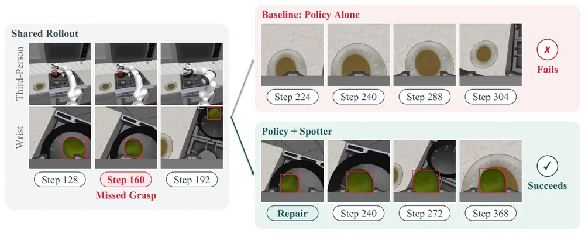
SkillWeaver: Agentic Exploration over Neural Interaction Skills for Scalable Robot Data Generation
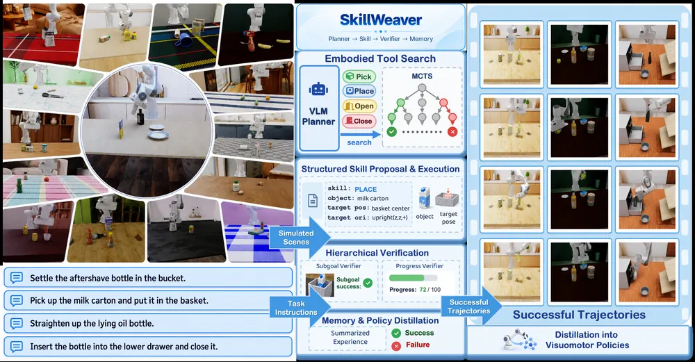
Rethinking Representations for World-Action Modeling
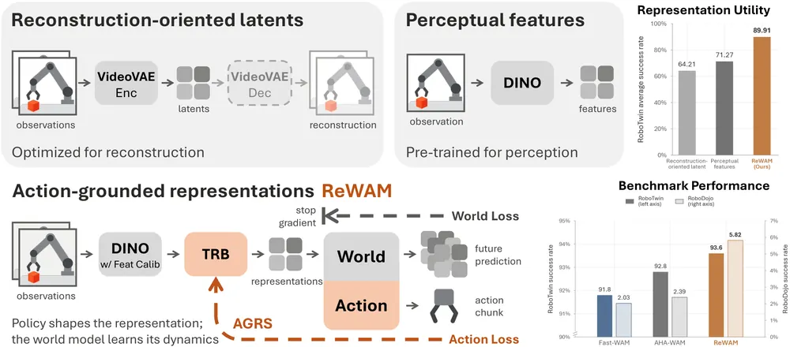
Lucid Dreaming for World Models: Learning to Doubt Imagination and Decide by Trust
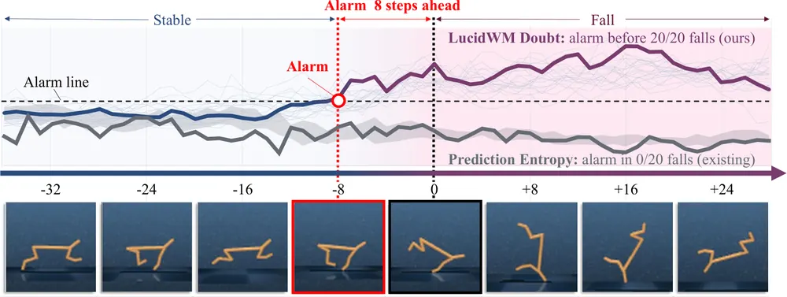
V-JEPA Policy: Building Effective World-Action Models on Predictive Visual Latents
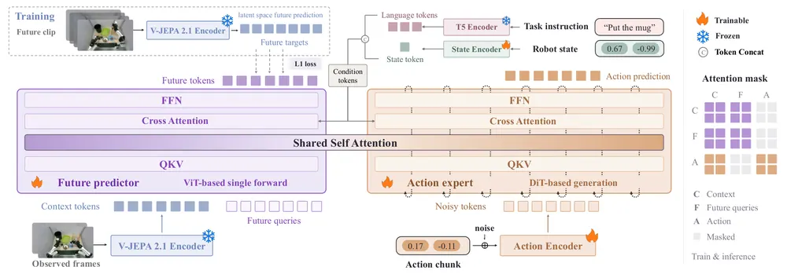
Counterfactual Video Generation Enables Scalable Humanoid Loco-Manipulation
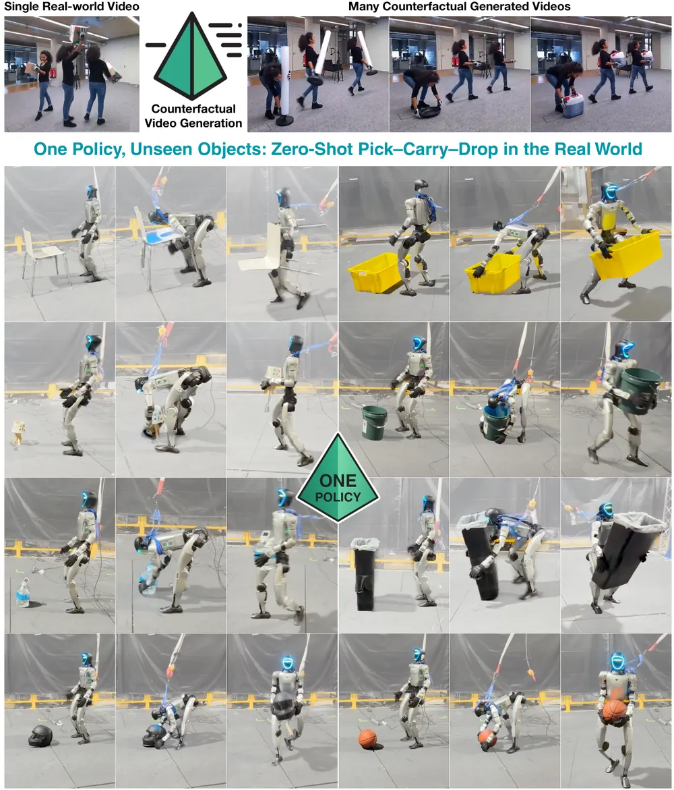
One from Infinity: Actualizing Futures from Pretrained World Models into Robot Actions
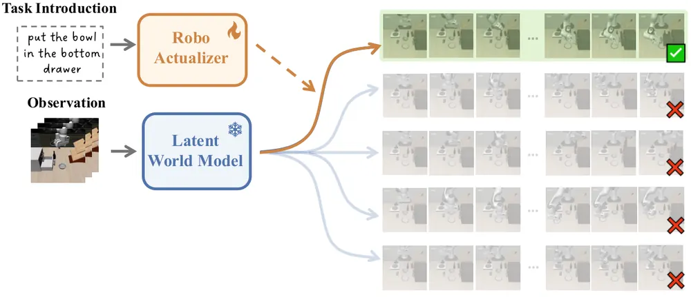
EVO-WAM: Evolving World Action Models through Video-Action Verification
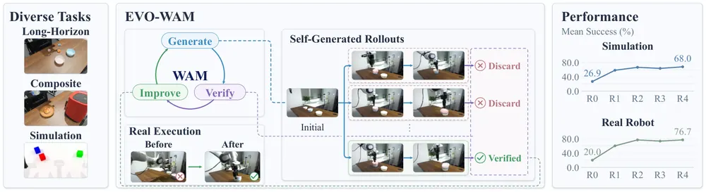
Direct Experience World-Model Optimization: Learning the World Beyond Action Imitation
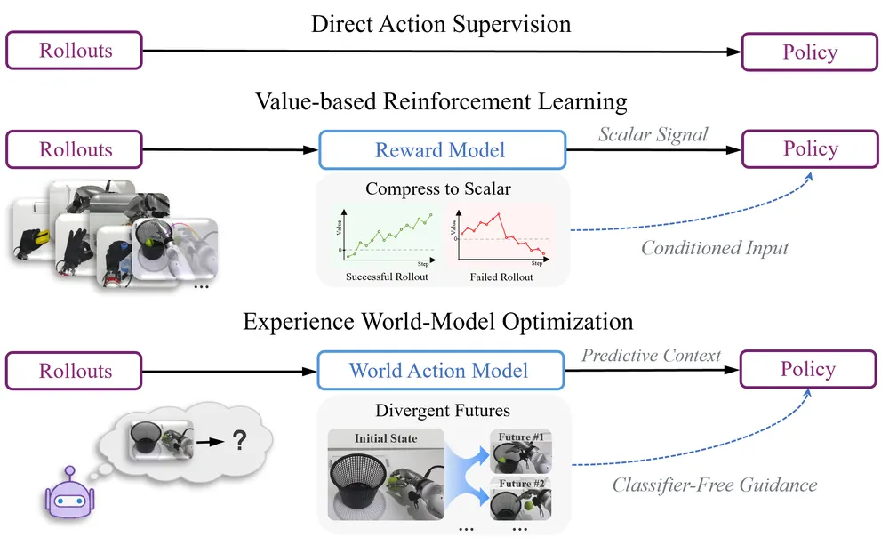
Encore: Few-Shot Agentic Discovery of Manipulation Strategies
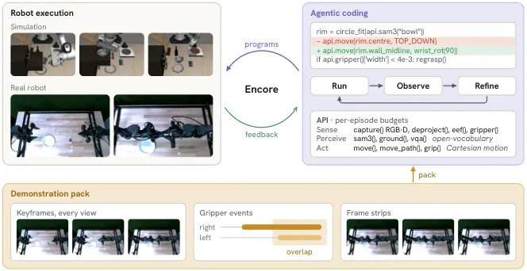
Scouting the Dynamics Gap: Test-Time Policy Adaptation via Action-Outcome Feedback
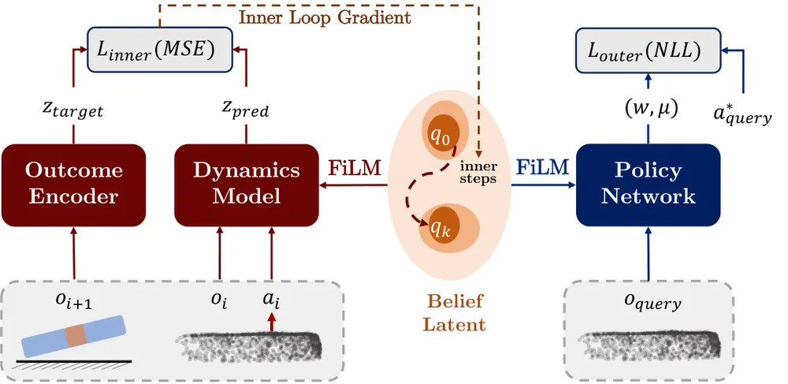
Real2Gym: Building Gyms from Videos, Bringing Skills to Robots
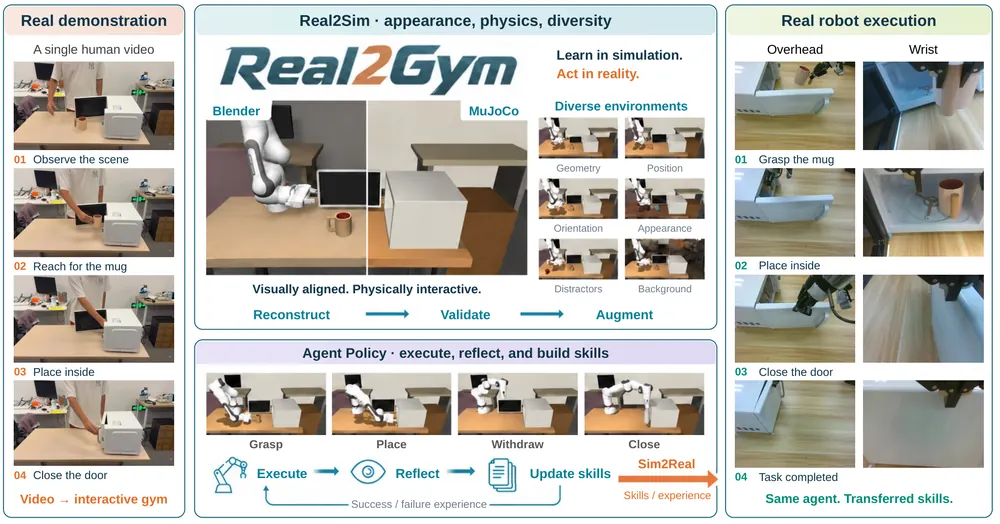
Do-JEPA: From Masking to Intervention in Latent World Models
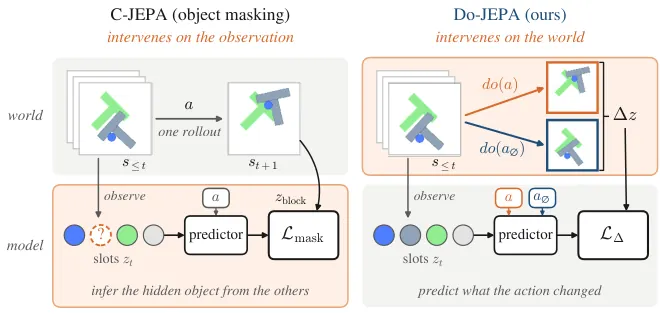
StructRL: Online Structured Reinforcement Learning for Long-Horizon Vision-Language-Action Tasks
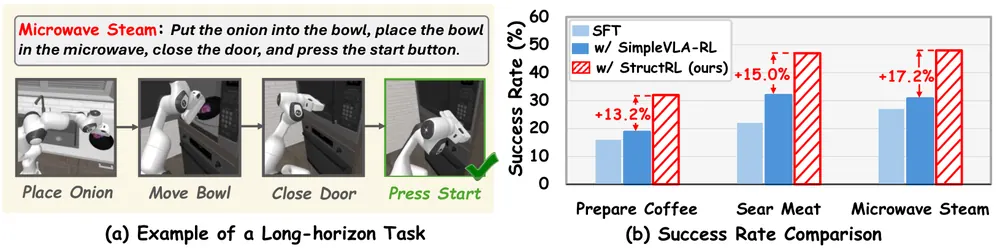
Abductive World Modeling via Causal Representation Learning
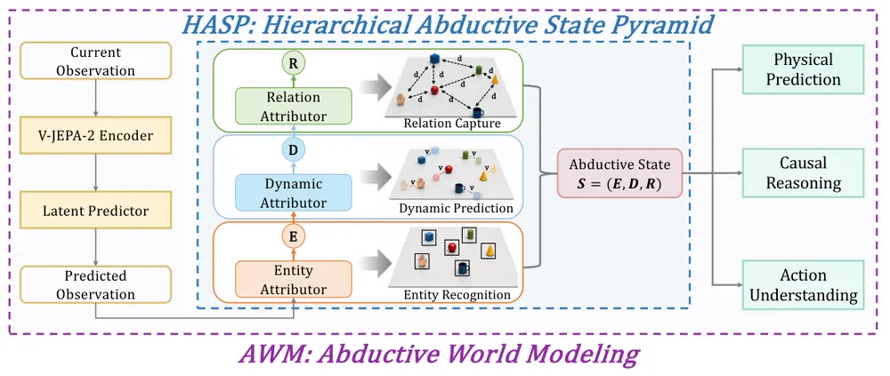
오늘의 핵심 연구 트렌드 종합
- 생성형 backbone 없이 predictive latent만으로 충분한 world-action model — V-JEPA Policy, ReWAM, RoboActualizer 세 편이 독립적으로 같은 결론에 도달함. frozen V-JEPA/DINO 위에 경량 head만 얹어도 수십~수백 배 큰 생성형 WAM(Fast-WAM 등)을 능가함.
- VLM 개입 구조의 역전: 상시 계획에서 이벤트 기반 감시로 — Spotter는 embodied model이 계속 실행을 주도하고 VLM은 오류가 의심될 때만 개입하도록 설계해, 기존 VLM-led 구조(Hi Robot, Harness VLA)의 critical-path 지연 문제를 뒤집음. 대기 시간이 episode 길이가 아니라 오류 발생 횟수에 비례하게 됨.
- Agentic exploration/generation으로 조작 데이터 생성 병목 해소 — SkillWeaver는 verifier-guided tree search로, PRISM은 counterfactual video generation으로 데이터 생성 병목을 끊어냄. Real2Gym도 real2sim2real 자동화로 같은 문제를 다른 방식으로 풂.
- World model에 인과 구조·불확실성을 명시적으로 심기 — Do-JEPA는 masking 대신 시뮬레이터 개입으로 action의 인과 효과를 분리함. Abductive World Modeling은 예측된 미래를 역이용해 causal state를 추론함. Lucid Dreaming for World Models는 prediction과 doubt를 분리해 읽음. 세 편 모두 "예측이 날카롭다고 믿을 근거가 되는 건 아니다"는 문제의식을 공유함.
- Post-deployment 학습에서 world model과 action imitation의 분리 — DEWO는 action imitation만으로는 dexterous manipulation의 world model이 개선되지 않는다는 점을 실험으로 먼저 보이고, 성공/실패 continuation을 분리해 world representation 자체를 보강함. SCOUT도 유사하게 belief latent를 action-outcome mismatch만으로 test-time 업데이트함.
- Long-horizon VLA RL에 구조화된 중간 보상 주입 — StructRL은 terminal reward의 부분 진척 구분 불가 문제를 LLM 기반 subtask decomposition과 dependency gating으로 풂. sim 환경 2종·backbone 2종에서 일관된 개선을 보이나 real-robot 검증은 비어 있음.
유망 연구 방향 및 프로젝트 제안
World model trust로 irreversible damage를 사전에 veto하는 모니터링 - research question: imagined rollout에 대한 world model의 신뢰도(trust)가 붕괴하는 시점을 감지해, 되돌릴 수 없는 손상으로 이어지는 action을 실행 전에 막을 수 있는가 - 접근·novelty: Spotter의 이벤트 기반 VLM 개입 구조에 Lucid Dreaming for World Models(LucidWM)의 evidential doubt(추가 파라미터 없이 얻는 prediction 신뢰도)를 결합. Spotter는 교정이 motion primitive 수준에 그치고, LucidWM은 로봇 실험이 전혀 없다는 서로 다른 공백을 메움 - 왜 지금·경쟁 prior works: 두 논문 모두 오늘 동시에 수집됐고, Spotter 저자가 결론에서 "world model로 irreversible damage를 예견"하는 방향을 직접 언급함 - risk·target venue: LucidWM은 DMC/ViZDoom 같은 저차원 시뮬레이션에서만 검증돼 고차원 manipulation world model로 확장 시 doubt readout이 유효한지가 핵심 리스크임. CoRL/RSS
Representation shaping 원칙의 통합 비교 연구 - research question: V-JEPA Policy·ReWAM·RoboActualizer가 서로 다른 설계(frozen encoder 선택, gradient routing, selection-only head)로 독립 도달한 "생성형 backbone 불필요" 결론을 하나의 원칙(representation의 action-informativeness)으로 통합할 수 있는가 - 접근·novelty: 세 논문의 ablation(미래 예측력 vs reconstruction fidelity)을 동일 벤치마크(RoboTwin 2.0)에서 직접 교차 비교하고, 공통으로 작동하는 representation shaping 기법을 분리해내는 통제 실험 - 왜 지금·경쟁 prior works: 세 편이 같은 날 나왔는데 서로를 인용하지 않음 — 비교 연구가 지금까지 없음 - risk·target venue: 새 기법 없이 비교에만 그치면 단순 survey로 격하될 위험임. representation shaping의 새 변형을 함께 제안해야 함. CoRL
Agentic data generation을 deformable/bimanual로 확장 - research question: SkillWeaver(skill 4종 제한)·PRISM(rigid body만)·Real2Gym(접촉이 까다로운 task 전멸)이 공통으로 못 다루는 deformable object·양팔 협조 조작을 agentic 데이터 생성으로 커버할 수 있는가 - 접근·novelty: PRISM의 contact-anchored real2sim 파이프라인으로 deformable object의 물리적으로 타당한 궤적을 복원하고, SkillWeaver의 verifier-guided MCTS로 해당 object에 특화된 neural interaction skill을 자율 탐색 - 왜 지금·경쟁 prior works: 세 논문 모두 이 한계를 저자 스스로 명시함 - risk·target venue: deformable object 시뮬레이션의 물리 정확도 자체가 병목임. 실로봇 검증이 필수임. CoRL/RSS
Belief latent 기반 test-time adaptation을 VLA의 semantic failure로 확장 - research question: SCOUT의 belief-policy coupling이 저차원 point cloud action을 넘어 VLA의 action chunk, 그리고 물리적 모호성뿐 아니라 "엉뚱한 물체 선택" 같은 semantic failure까지 다룰 수 있는가 - 접근·novelty: Do-JEPA의 paired intervention으로 action의 인과 효과만 분리한 latent 변화량(Δz) 신호를 SCOUT의 belief latent 업데이트에 투입해, 물리적 동역학뿐 아니라 semantic 오류까지 구분 - 왜 지금·경쟁 prior works: SCOUT 저자가 VLA·semantic failure 확장을 미해결 과제로 명시했고, Do-JEPA는 정확히 그 인과 분리 신호를 제공함 - risk·target venue: Do-JEPA는 정확히 복원 가능한 시뮬레이터 상태가 전제조건이라 VLA의 복잡한 실환경에는 바로 적용 불가함 — 비슷한 state에서 다른 action을 취한 로그 쌍으로 완화하는 후속 설계가 필요함. CoRL/ICRA
Vision 기반 subtask detector로 structured RL을 real-robot에 이식 - research question: StructRL의 dependency-aware reward gating이 시뮬레이터 상태 대신 vision만으로 real-robot에서 동작할 수 있는가 - 접근·novelty: EVO-WAM의 VLM+IDM video-action verification을 subtask completion detector로 재활용해 StructRL의 reward gating에 투입 - 왜 지금·경쟁 prior works: StructRL은 real-robot 실험이 없고, EVO-WAM은 verification만 하고 RL reward로는 쓰지 않음 — 그 조합을 다룬 선행연구가 없음 - risk·target venue: verifier 정확도가 reward 품질을 그대로 좌우해 reward hacking 위험이 큼. CoRL
오늘 반드시 읽어야 할 논문
- Spotter: Let the Embodied Model Lead, and the VLM Reflect for It — VLM-led 구조를 뒤집어 실로봇에서 53%→83%, 가장 높은 점수(84점)
- SkillWeaver: Agentic Exploration over Neural Interaction Skills — 저자 comments에 CoRL 2026 accept로 명시, verifier-guided MCTS로 39.1K demo 자율 생성
- Rethinking Representations for World-Action Modeling — ReWAM, action loss만으로 representation shaping해 생성형 pretraining 없이 RoboTwin 2.0 성공률 93.6%
- V-JEPA Policy — frozen predictive latent만으로 WAM 학습이 충분함을 통제 비교로 증명
- Lucid Dreaming for World Models — world model 예측에서 prediction과 doubt를 분리하는 evidential 구조, failure detection에 바로 응용 가능
- One from Infinity (RoboActualizer) — world model을 완전히 얼리고 60M 파라미터 actualizer만 학습해 LIBERO 성공률에서 100배 큰 baseline보다 우수
- EVO-WAM — WAM이 자기 생성물만으로 unseen task에 self-training, 실로봇 long-horizon 56.7%p 개선
- Counterfactual Video Generation Enables Scalable Humanoid Loco-Manipulation — PRISM, 4개 real 영상으로 humanoid zero-shot 배포까지 확장
전체 1차 스크리닝 결과 (997편, 점수순) 펼치기
| # | 제목 | 점수 | 🤖 | 분야 | 한 줄 근거 |
|---|---|---|---|---|---|
| 1 | One from Infinity: Actualizing Futures from Pretrained World Models into Robot Actions | 78 | 10 | VLA | frozen video world model의 representation에 이미 미래 다양성이 담겨 있다고 보고, task-conditioned future를 선택·실행만 하는 60M 파라미터짜리 tiny actualizer를 제안함. world model backbone을 fine-tuning하지 않고 flow matching으로 future latent와 action을 함께 예측해 기존 WAM·VLA 대비 100배 적은 학습 파라미터로 LIBERO·RoboTwin 2.0과 실로봇에서 39ms 저지연 실시간 제어를 달성함. world model을 actualization이라는 새 패러다임으로 재구성한 점이 핵심 novelty임 |
| 2 | EVO-WAM: Evolving World Action Models through Video-Action Verification | 78 | 9 | World Model | world action model이 자기 생성 video-action trajectory로 추가 시연 없이 적응하며 RoboTwin과 실로봇 long-horizon task에서 큰 성공률 향상을 보임, failure-aware self-training이라는 formulation이 새로움 |
| 3 | Direct Experience World-Model Optimization: Learning the World Beyond Action Imitation | 75 | 10 | World Model/Manipulation | 배포 후 경험으로 world model의 시각 표현 자체를 보강하는 DEWO 제안, 성공·실패 미래를 분류기 프리 가이던스로 활용하고 진행정체 시 가이던스를 활성화하는 value head를 결합해 dexterous manipulation 5개 과제와 실로봇(Wuji·Sharpa) 4개 과제에서 성공률을 51.0%에서 71.7%로 끌어올림, world model·test-time optimization·조작 우선주제에 정확히 부합 |
| 4 | V-JEPA Policy: Building Effective World-Action Models on Predictive Visual Latents | 75 | 9 | World Model | frozen V-JEPA latent 위에 world-action model을 처음부터 학습해 LIBERO·RoboCasa에서 생성형 백본 기반 WAM과 경쟁력 있는 성능과 더 강한 분포 외 일반화를 보임. predictive latent가 WAM의 충분한 기반이 될 수 있음을 보인 핵심 기여임 |
| 5 | Rethinking Representations for World-Action Modeling | 75 | 9 | World Model | world-action model의 representation 설계를 체계적으로 비교해 action-grounded shaping을 제안, RoboTwin 2.0에서 93.6% 성공률을 달성하며 VLA 핵심 주제에 직접 기여함 |
| 6 | SkillWeaver: Agentic Exploration over Neural Interaction Skills for Scalable Robot Data Generation | 75 | 9 | Manipulation | CoRL 2026 논문. 재사용 가능한 closed-loop Neural Interaction Skill을 VLM agent가 verifier-guided tree search로 탐색해 로봇 데이터를 자율 생성하는 프레임워크로, 39.1K demo·14.1K scene 규모로 확장하고 sim-to-real 전이까지 검증함. scripted pipeline 없이 데이터 생성을 agentic exploration으로 전환한 점이 novelty임 |
| 7 | Lucid Dreaming for World Models: Learning to Doubt Imagination and Decide by Trust | 75 | 7 | World Model | categorical latent world model에 Subjective Logic을 결합해 transition마다 doubt·trust를 산출하고 이를 imagination rollout의 return reweighting과 action selection에 쓰는 새로운 uncertainty-aware world model임. 추가 파라미터·forward pass 없이 작동하며 navigation 사례에서 목표 도달 step을 362에서 190으로 줄여 world model 신뢰도·failure detection 연구에 바로 연결됨 |
| 8 | Scouting the Dynamics Gap: Test-Time Policy Adaptation via Action-Outcome Feedback | 72 | 9 | Manipulation | action-prediction policy와 forward dynamics model이 공유 belief latent를 통해 action-outcome mismatch로부터 실시간으로 환경 동역학을 재추정하는 dynamics-aware meta-learning 프레임워크임. CoRL 2026 논문으로 test-time adaptation과 sim-to-real 모두에서 효과를 입증해 test-time optimization 연구에 바로 연결됨 |
| 9 | Spotter: Let the Embodied Model Lead, and the VLM Reflect for It | 72 | 9 | VLA | embodied model이 계속 실행하고 VLM은 병렬로 모니터링하다 오류가 확인될 때만 개입해 교정하는 구조로, VLM이 매 step을 계획하는 기존 VLM-led 방식과 역할을 뒤집은 점이 novelty임. 성공한 demonstration만으로 학습된 정책은 스스로 오류를 복구하지 못한다는 진단에서 출발했고, GPT 기반 Spotter가 RoboCasa에서 Cosmos Policy와 π0.5를 각각 5.6%p, 7.5%p 개선하고 RoboTwin 2.0 Hard에서 47.2%→57.0%, 실로봇에서 53%→83%로 끌어올림. failure detection·recovery 핵심 주제에 강한 기여를 함 |
| 10 | Do-JEPA: From Masking to Intervention in Latent World Models | 72 | 8 | World Model | 무엇을 가리느냐가 아니라 실제로 무엇이 일어나느냐에 개입해 action이 야기한 latent 변화만 학습하는 Do-JEPA 제안. world model의 상관-인과 혼동 문제를 직접 다루고 CausalWorld 등에서 강한 실증을 보임 |
| 11 | Abductive World Modeling via Causal Representation Learning | 72 | 7 | World Model | latent world model에 abductive causal inference를 도입해 entity·dynamic·relation으로 구조화된 상태를 추론하는 새로운 formulation임. V-JEPA 대비 physical prediction·causal reasoning·action understanding에서 큰 폭 개선을 보고해 world model 표현학습에 참고할 만함 |
| 12 | StructRL: Online Structured Reinforcement Learning for Long-Horizon Vision-Language-Action Tasks | 70 | 9 | VLA | long-horizon VLA 온라인 RL에 subtask 기반 중간 보상을 구조화해 주입. GR00T-N1.5·pi0.5로 RoboCasa365/LIBERO-Long에서 검증한 우선주제 핵심 기여임 |
| 13 | Encore: Few-Shot Agentic Discovery of Manipulation Strategies | 70 | 9 | Manipulation | 데모를 학습 데이터가 아닌 읽을 증거로 주고 coding agent가 정책 프로그램을 작성하는 새 formulation이며 real bimanual robot 검증까지 있음 |
| 14 | Counterfactual Video Generation Enables Scalable Humanoid Loco-Manipulation | 70 | 9 | Manipulation | 소수 실제 영상에서 V2V로 counterfactual 상호작용 영상을 대량 생성하고 real-to-sim 재구성으로 물리적으로 타당한 궤적을 만드는 real-to-sim-to-real 프레임이며 real robot fine-tuning 없이 배포됨 |
| 15 | Real2Gym: Building Gyms from Videos, Bringing Skills to Robots | 68 | 9 | Manipulation | 비디오 시연을 real2sim2real로 변환해 성공·실패를 재사용 가능한 skill·recovery 전략으로 증류하고 실제 Franka 로봇에서 검증. manipulation·skill chaining·failure recovery 우선주제에 정면으로 부합함 |
| 16 | T$^2$Mem: Learning Test-Time Memory for Robotics | 68 | 9 | VLA | test-time training으로 관측 이력을 compact fast weight로 encoding해 memory-free VLA에 memory 능력을 부여하는 프레임워크로, 전체 이력을 반복 처리하지 않고도 action supervision만으로 무엇을 기억할지 학습함. RoboMME 16개 과제에서 17.93%에서 56.83%로 평균 성공률을 올리고 explicit memory 기법 대비 3배 이상 빠름. robot memory와 test-time optimization을 결합한 설계가 핵심 novelty임 |
| 17 | RoboHarn-Evo: Evolving Hierarchical Physical Knowledge for Self-Improving Robotic Manipulation | 68 | 9 | Manipulation | base model 업데이트 없이 물리적 상호작용으로 Hierarchical Physical Knowledge를 진화시키는 dual-loop harness이며 cross-benchmark zero-shot 전이까지 보여 robot memory·failure recovery 주제와 직결됨 |
| 18 | WorldLine: Action-Driven Visual Simulation for Robotic Manipulation | 68 | 9 | World Model | action-free 비디오로 transferable dynamics를 배우고 소량의 action 데이터로 embodiment에 접지시키는 분리형 시뮬레이터로 대규모 데이터와 cross-embodiment 전이를 보임 |
| 19 | FORM: Robot Manipulation through Direct Material Law Identification | 68 | 9 | Manipulation | weak-form momentum balance를 이용해 단일 상호작용에서 재료 물성을 선형최소제곱으로 수초 만에 식별하고 새로운 동작·geometry에 재사용하는 물리 기반 formulation임 |
| 20 | The Layer Mystery of VLA: An Information-Theoretical Analysis of VLA Latent Interface | 68 | 9 | VLA | VLA의 어느 backbone layer를 쓸지 정보이론적으로 분석해 InfoNCE 기반 layer 선택이 exhaustive sweep 대비 9-33배 적은 연산으로 유사 성능을 낸다는 실용적 결과, LIBERO/CALVIN 검증 |
| 21 | Seek Before You Move: Evidence Seeking for Progress Grounding in Vision-Language Navigation | 68 | 9 | Navigation | VLN에서 증거 부족에도 자신 있게 전진하는 Progress Myopia 실패모드를 정의하고, 증거탐색과 반사실 대조 RL(C2PO)로 R2R-CE·RxR-CE에서 성공률 12.7%·7.5% 향상, 실로봇 평가도 포함된 새로운 문제설정 |
| 22 | Action Chunking Proximal Policy Optimization with Feedback Correction | 68 | 8 | Manipulation | chunked actor와 state-value critic을 결합해 open-loop action chunking의 reactivity 문제를 closed-loop feedback corrector로 보완, IsaacGym·Bi-DexHands의 dexterous manipulation task에서 검증한 NeurIPS 2026 논문임 |
| 23 | Bilinear World Models: Learning Representations with Structured Dynamics for Efficient Control | 68 | 8 | World Model | JEPA식 world model의 latent dynamics를 bilinear 형태로 제약해 encoder가 controllable geometry를 학습하도록 유도하고 action recoverability를 구조적으로 보장하는 기법임. planning 시간을 3자릿수 줄이면서 제어 정확도를 유지해 world model 설계에 실질적 통찰을 제공함 |
| 24 | World4Scorer: Outcome-Grounded World Modeling for Autonomous Driving | 68 | 8 | World Model | generate-and-select 주행 planner의 scorer를 trajectory-conditioned JEPA식 predictor로 만들어 시뮬레이터 outcome label로 모든 후보 경로를 지도학습하는 기법임. logged future만으로는 미실행 후보를 제약할 수 없는 문제를 해결해 NAVSIM-v2 SOTA를 달성했고, 동일 world model을 OGBench-Cube manipulation planning에도 적용해 개선을 보임 |
| 25 | Anisotropic Representations Improve Planning in JEPA World Models | 68 | 8 | World Model | isotropic Gaussian regularization이 planning cost를 task와 어긋나게 만든다는 분석과 anisotropic latent target 제안으로 world model representation geometry에 대한 개념적 기여가 있음 |
| 26 | Beyond a single latent space: a dual-latent world model for long-horizon planning | 68 | 8 | World Model | 지역 실행과 장거리 계획을 별도 표현·동역학으로 분리한 Dual-WM과 가중 롤아웃 표현학습 LoRe 제안, 목표거리 100스텝에서 성공률을 61.4%→69.5%로 끌어올리며 장기 latent planning에 새로운 구조적 해법을 제시함 |
| 27 | CoDimRecon: Agentic Reconstruction of Sim-Ready 3D Scenes with Deformable Curves, Surfaces, and Volumes | 68 | 7 | 3D Vision | curve/surface/volume 세 가지 차원성으로 deformable object를 포함한 sim-ready 3D 장면을 에이전트가 재구성. 로봇 상호작용 실험까지 포함한 새 representation임 |
| 28 | CogWAM: Aligning Semantic Cognition with World Action Modeling via Event-Driven Interfaces | 67 | 9 | World Model | task reasoning과 world-action learning 사이에 persistent Semantic State라는 명시적 interface를 두는 새로운 formulation이며 real dual-arm closed-loop 검증까지 있음 |
| 29 | MVG-WAM: Multiple View Geometry-Aware World-Action Modeling for Robotic Manipulation | 67 | 9 | World Model | multi-view 관측을 분리된 이미지가 아닌 epipolar-constrained 공동 world state로 조직화하고 metric depth로 접지시킨 world-action model이며 real robot 91.3% 성공률을 보임 |
| 30 | Video2STL: Grounding VLM-Generated Temporal Specifications for Robot Learning | 66 | 9 | VLA | 관찰 전용 비디오를 parametric STL로 변환해 보상에 쓰는 새로운 formalism이며 short/long-horizon 보상을 분리하고 cross-embodiment transfer까지 보임 |
| 31 | Learning Expressive and Compositional Motion Representation via Spectral Skills | 66 | 8 | Robot Learning | 재구성이 아닌 미래 동작 예측으로 학습하는 spectral skills라는 latent motion representation을 제안해 humanoid에서 tracking·chaining·composition을 모두 보임 |
| 32 | LIBERO-MAX: Do Robot Policies Adapt When the World Changes? | 65 | 9 | VLA | 목표 이동, 시점 변화, 장애물 등장처럼 task 중간에 세계가 바뀌는 상황을 맞춘 8,000쌍 벤치마크로, pre-event action sequence를 고정해 event로 인한 성능 저하만 분리 측정함. 14개 VLA·hybrid·world-action 정책이 event로 11.0-25.7%p 성능이 떨어짐을 보여 failure·robustness 연구에 중요한 진단 도구를 제공함 |
| 33 | Cooperative Multi-Agent Vision-Language-Action Models via Reinforced Fine Tuning | 65 | 9 | VLA | 초기화 인식 데이터 수집, offline credit-filtered tuning, latent-space online RL로 구성된 3단계 reinforced fine-tuning 파이프라인으로 단일 로봇 VLA를 다중 로봇 협업에 맞게 개선함. online RL이 noisy co-exploration으로 불안정하다는 점을 진단해 latent noise space RL로 우회했고, RoboTwin·RoboFactory·실로봇에서 각각 +23.1%p, +16.4%p, +44%p 개선을 보임 |
| 34 | Taming VLAs under Robot Execution Errors: Self-Compensation and Stress Testing | 65 | 9 | VLA | 로봇의 friction·backlash·compliance 등 execution error를 reward나 label 없이 commanded action과 실제 motion의 residual만으로 온라인 사전 보정하는 deployment-time adaptation 기법으로, 이를 체계적으로 평가하는 RoboStress 시뮬레이션 벤치마크도 함께 제시함. 사용 이력이 다른 두 실기체 Franka arm에서 평균 30%p 이상 성공률을 높여 failure-aware test-time adaptation에 강한 실험적 증거를 제공함 |
| 35 | Credit-Guided Policy Improvement for Test-time Adaptive Vision-Language Navigation | 65 | 8 | Navigation | action이 유발한 observation transition에서 signed credit을 외부 피드백 없이 복원해 test-time VLN 정책을 업데이트하는 새로운 신호를 제안함 |
| 36 | PhysWAM: Physically Consistent World Action Model for Autonomous Driving | 65 | 8 | World Model | multiview video·depth·ego motion을 단일 flow-matching transformer에서 co-denoise하고 LiDAR 기반 Coupled Point Projection으로 기하학적 일관성을 강제한 자율주행 world-action model임 |
| 37 | ChronoSRL: Temporal Geometry for Self-Supervised Reinforcement Learning | 65 | 7 | RL | critic embedding에 goal-reaching 시간을 명시적으로 부여하는 temporal geometry 제안, locomotion/navigation 7개 벤치마크와 쿼드루페드 sim-to-real까지 검증한 자기지도 RL 기여 |
| 38 | ProAct-VLM: Pre-Failure Vision-Language Task Replanning with Continuous Perception Feedback | 64 | 9 | Failure Detection/Recovery | 실행 전 환경 변화를 실시간 모니터링해 실패 전에 replan하는 VLM 기반 proactive framework로 failure detection/recovery 우선 주제에 직접 해당함 |
| 39 | MotorMind: Scaffolding General Vision Language Models for Zero-Shot Robot Manipulation | 64 | 9 | VLA | 전용 action expert나 grounding tool 없이 범용 VLM이 mid-level action과 feedback 모니터링만으로 zero-shot manipulation을 수행함을 보여 기존 zero-shot 방법 대비 큰 격차로 앞섬 |
| 40 | Learning Social Navigation from Internet Videos in the Policy State Space | 64 | 8 | Navigation | 모노큘러 영상에서 traversability map과 보행자 궤적만 추출해 policy state space에서 직접 closed-loop 시뮬레이션하는 새로운 표현이며 real-robot 19/20 성공으로 데이터 효율적 사회적 navigation을 보임 |
| 41 | Urgent Actions Go First: Urgency-Aware Denoising for Real-Time VLA Control | 63 | 8 | VLA | action chunk 내 긴급도가 다르다는 물리적 사실을 이용해 denoising 연산을 시급한 action에 먼저 배분하는 새로운 inference-time 가속 프레임임 |
| 42 | CrossBFM: Distilling a Shared Latent Behavior Space Across Humanoid Embodiments | 63 | 8 | Robot Learning | retargeting으로 얻은 frame-level 대응을 이용해 로봇별로 독립된 behavior latent space를 하나의 transferable encoder로 통합해 GPU-hour 단위로 학습시킴 |
| 43 | FineART: Fine-grained Annotated Robotic Trajectory Dataset and Vision-Language-Action Model for Bimanual Manipulation | 62 | 9 | VLA | 40,543 에피소드·1,718시간·533,913 subtask 규모의 조밀 주석 양팔 조작 데이터셋과, 다음 subtask를 스스로 예측하도록 mid-training한 VLA를 함께 제시함. subtask mid-training으로 공간 모호성 과제 성공률을 32%에서 100%로, unseen long-horizon 과제를 16%에서 76%로 끌어올리고 신규 로봇 fine-tuning에 필요한 데이터도 10분의 1로 줄임 |
| 44 | Remember What You Did: Action-History Memory with Dual-Expert Denoising for Long-Horizon Vision-Language-Action Policies | 62 | 9 | VLA | Mamba로 실행된 action history를 압축해 고noise 구간에서 task progression을 조정하는 PreAction Expert를 조건화하고, 저noise 구간은 frozen action expert가 세부를 정제하는 dual-expert denoising handover 구조로, 기존 VLA는 동결한 채 memory plugin만 학습함. LIBERO-Mem에서 π0.5(65.2%)·MemoryVLA(49.5%) 대비 80.8%로 크게 앞서고 실로봇에서도 28.8%p 개선해 robot memory 설계에 강한 기여를 함 |
| 45 | SafeVantage: Vantage-Aware Memory for Reliable Embodied Decisions | 62 | 8 | Embodied AI | 부분 관측 하 embodied decision에서 어떤 시점이 주장을 뒷받침하는지 기억하고 능동적으로 추가 관측을 선택. active perception·robot memory 우선주제의 핵심 기여임 |
| 46 | KPI: A Promptable Kernel for Physical Interaction on Humanoids | 62 | 8 | Manipulation | trajectory source가 방향별 track·comply·hold force 계약을 whole-body tracker에 전달해 접촉 시 stiffness·damping을 적응시키는 promptable interaction kernel임. VLA agent가 trajectory와 계약을 함께 생성해 크랭크 감기·문 열기 등 접촉 과제를 수행하며, 궤적과 controller를 분리한 새로운 formulation임 |
| 47 | ATLAS: Aligned Transport of Latent Structure for Reliable World Model Planning | 62 | 8 | World Model | latent world model planning에서 marginal 정규화만으로는 보존되지 않는 state-to-state relational geometry를 pairwise structure transfer와 Wasserstein marginal calibration으로 함께 보존하는 학습 objective임. relational distortion·latent scale mismatch·prediction error를 planning stability와 연결해 분석하고 PushT·TwoRoom·OGBench-Cube에서 개선을 보임 |
| 48 | Reactive Real-Time Flow Policies via Asynchronous Distribution Alignment | 62 | 8 | VLA | 비동기 action chunk 실행이 non-Markovian demonstration에서는 원래 VLA와 다른 action 분포를 만든다는 문제를 규명하고, flow-field distillation과 propose-resolve로 원래 분포에 가까운 비동기 정책을 복원하는 기법임. LIBERO에서 원본과 동등, RoboMimic에서 기존 비동기 기법 대비 약 30%p 높은 성공률을 보여 실시간 VLA 제어에 실질적으로 기여함 |
| 49 | Disentangling Spurious Correlations in Vision-Language-Action Models via Predicting Domain-Invariant Latent Lookahead | 62 | 8 | VLA | CoRL 2026. domain-transformed trajectory에서 얻은 domain-invariant future latent로 VLA policy를 supervise해 domain-specific shortcut 대신 task-relevant structure에 의존하도록 유도하는 representation learning 기법으로, contrastive 목적과 Gaussian disentanglement로 task-domain encoder를 분리 학습함. LIBERO-Plus에서 최강 baseline 대비 11.4%p 높은 69.1% 성공률을 보이고 실로봇에서도 검증함 |
| 50 | Skill-Space Shooting for Autonomous Robot Policy Improvement | 62 | 8 | Manipulation | foundation model이 제안하는 재사용 가능한 skill을 통해 사람 시연 없이 정책의 실패를 학습 가능한 교정으로 전환하는 skill-space shooting을 제안함 |
| 51 | ProgressCompass: Embodied Progress Reward Models Are Lost Without the Right Context | 62 | 8 | Embodied AI | 현재 프레임만으로는 판단 불가능한 context-dependent progress estimation 문제를 정의하고 새 benchmark로 기존 PRM이 올바른 context가 주어지면 오차를 크게 줄임을 보여 failure/progress 모니터링에 직접 기여함 |
| 52 | Systematic Multi-Agent Vision-and-Language Navigation: Formulation, Benchmark, and Method | 62 | 7 | Navigation | multi-agent VLN을 제약 기반 협응 문제로 최초 정식화하고 벤치마크·방법(TRISS)까지 제시. 새 problem formulation이라 가점 요인이 있음 |
| 53 | Diffusion Policy Improvement with Proposal-Conditioned Refinement Flows | 62 | 7 | Manipulation | critic 기반 proposal 선택과 conditional refinement flow를 결합해 offline RL diffusion policy를 개선한 PReFlow, OGBench 50개 과제에서 online fine-tuning 후 최고 점수를 달성하며 robot 정책 추출에 새로운 formulation을 제시함 |
| 54 | HorizonFlow: Variable-Length Planning for Offline Goal-Conditioned RL | 62 | 7 | RL/Planning | 계획 길이를 사전 지정 입력이 아닌 생성 출력으로 다루는 HorizonFlow 제안, 계층적 subgoal-action 생성과 flow matching으로 Maze2D·시각 조작 벤치마크에서 최고 성능, long-horizon planning에 새 정식화를 제공함 |
| 55 | RoXDrive: Closed-Loop Reinforcement Learning for End-to-End Autonomous Driving via Action-Faithful Rollouts | 62 | 6 | World Model | action-faithful한 world model rollout만 선별해 end-to-end 주행 정책을 closed-loop RL로 학습. 인과 혼동 문제를 world model 신뢰도 평가로 해결하는 구조가 탄탄함 |
| 56 | Imagine3D-LLM: Teaching MLLMs to Imagine 3D Scenes Before Answering | 62 | 5 | 3D Vision | MLLM이 3D Gaussian Splatting 요약 토큰을 학습해 3D 공간을 상상하고 추론하는 새 formulation, embodied spatial reasoning에 참고 가치가 있음 |
| 57 | Differentiating Bisimulation Metrics: A Framework for Parametric Markov Chain Fitting via Bicausal Optimal Transport | 62 | 5 | World Model | bisimulation metric을 optimal transport의 LP로 formulat하고 envelope theorem으로 exact closed-form gradient를 유도한 일반 알고리즘임. world-model learning, state-space compression, imitation learning from observations 세 설정 모두에 적용해 검증했고 재사용 가능한 이론적 도구를 제공함 |
| 58 | Learning via Self-Consistency for Diffusion-based Video Reasoning | 62 | 4 | World Model | 비디오 생성의 확률성을 self-consistency로 집계해 미로 풀기·시각 탐색 등 결정적 추론을 개선하고 distillation으로 1회 생성에 내재화. test-time scaling을 world model reasoning에 적용한 새로운 패러다임임 |
| 59 | Rho: A Foundation for Efficiently Adaptable VLA Models | 60 | 9 | VLA | 3개 bimanual embodiment를 겨냥한 공개 VLA 패밀리로 embodiment midtraining 효과를 체계적으로 ablation하고 corrective feedback 기반 online adaptation 모듈도 포함함 |
| 60 | InsightMap: Structured Spatial Modeling for Embodied Multimodal Reasoning | 60 | 8 | Navigation | top-down map을 명시적 공간 메모리이자 행동 조건 예측 타겟으로 사용해 VLN을 학습하고 Unitree Go2 실로봇에서 검증. navigation·embodied spatial reasoning 우선주제의 실로봇 검증 사례임 |
| 61 | Test-Time Adaptation of Manipulation Policies Under Actuator Degradation | 60 | 8 | Manipulation | 모터 온도·전류·전압 등 telemetry를 조건으로 고정된 조작 정책의 action을 사후 보정하는 policy-agnostic 기법임. actuator degradation이라는 현실적 failure mode를 다루고 8개 정책군 18개 조합에서 검증했으며 실기체에서도 성능 개선을 보임 |
| 62 | Learning to Explore Hidden Kinematics for Articulated Object Manipulation | 60 | 8 | Manipulation | articulated object의 kinematic parameter에 대한 belief를 Bayesian filtering으로 갱신하고 이를 articulation flow field로 렌더링해 policy에 조건화함으로써, greedy 탐색의 한계를 넘어 entropy 감소를 보상으로 하는 RL로 탐색 자체를 amortize한 active perception 기법임. appearance가 실제 articulation과 어긋나는 새 데이터셋 ArticuRiddle에서 기존 대비 큰 폭의 성공률 향상을 보임 |
| 63 | HACo: Learning Haptic Active Compliance for Force-Aware Dexterous Manipulation | 60 | 8 | Manipulation | fingertip tactile과 joint-torque feedback을 결합해 접촉 부하를 직접 규제하는 action을 생성하는 haptic compliance 정책으로, compliance-regulated teleoperation으로 action target을 만들고 gated haptic cross-attention으로 action generation을 haptic state에 grounding함. 다중 접촉·마찰·변형체 과제에서 83% 대 35%(최강 baseline)의 큰 격차를 보임 |
| 64 | Where Predictive Supervision Goes Shapes What VLA Policies Learn | 60 | 8 | VLA | 미래 예측을 VLA representation learning의 설계 문제로 보고, prediction interface가 어떻게 spatial·dynamics·action 정보를 policy의 visual stream에 전달하는지 통제된 비교로 분석한 논문임. scene-matched future supervision일수록 distribution shift에서 더 강건함을 실험·실기체 모두에서 보여 VLA의 future prediction 설계에 실질적 지침을 제공함 |
| 65 | TaRL: Learning General and Physical Rewards from Tactile Demonstrations | 60 | 8 | Manipulation | tactile deformation map 시퀀스로부터 task-completion progress를 회귀해 접촉이 중요한 조작의 reward를 학습하는 기법으로, 시각만으로는 포착 못하는 local robot-object interaction을 보상에 반영함. nut threading을 34%에서 56%로, 실제 cube pickup을 37%에서 97%로 끌어올리고 box에서 can으로 object 전이도 일반화됨. tactile reward learning이라는 priority topic에 강한 실험적 증거를 제공함 |
| 66 | PreferenceFlow: Test-Time Guidance of Flow-Matching Robot Policies from Human Interventions | 60 | 8 | VLA | 로봇의 human intervention chunk와 같은 초기 조건에서 생성한 policy chunk를 비교해 preference model을 학습하고, 이를 QGF sampling의 value gradient 자리에 넣어 환경 보상 없이 frozen flow-matching policy를 test-time에 교정하는 기법임. Franka 정밀 삽입 4과제에서 69%→90.5%로 큰 폭 개선해 test-time optimization에 실질적 기여를 함 |
| 67 | RawVLA: Embodied Neural Image Signal Processor For Robotic Manipulation | 60 | 8 | VLA | RAW-to-RGB ISP 파이프라인이 VLA 성능에 미치는 영향을 체계적으로 분석하고 전용 neural ISP와 benchmark를 제안한 잘 다뤄지지 않은 축의 연구임 |
| 68 | EgoAlign: Bridging the Human-Humanoid Gap for Long-Range Loco-Manipulation | 60 | 8 | Manipulation | 실제 로봇 시연 없이 egocentric 인간 시연을 execution feedback으로 whole-body controller용 supervision으로 변환해 humanoid에 zero-shot 배포함 |
| 69 | DROM: A Language-Guided Diffusion Framework for Multi-Skill Robotic Manipulation | 58 | 9 | Manipulation | DMP 증강 diffusion에 LLM task decomposition을 결합한 multi-skill 정책이나 구성요소 대부분이 기존 기법의 조합임 |
| 70 | SAKI: Skill Assembly and Kinematic Imitation from Human Videos for Long-Horizon Mobile Manipulation | 58 | 8 | Manipulation | 인간 영상에서 추출한 object-centric skill을 장면·로봇 구성에 맞게 재결합해 whole-body kinematic imitation으로 실행하는 long-horizon mobile manipulation 프레임워크임. 실로봇에서 정리·닦기 등 복합 과제의 skill reuse와 composition을 입증함 |
| 71 | Staircase Policy: Streaming Inference for World-Action Models with Large Action Chunks | 58 | 8 | VLA | flow-matching VLA를 JEPA식 world-action model로 바꾸고 action chunk를 denoising 단계별로 쪼개 근시안적 action은 즉시 실행하고 먼 action은 재예측된 future latent로 계속 보정하는 streaming inference 기법임. LIBERO 97.7%, 초당 292.7 action으로 기존 대비 3.62배 처리량을 보여 WAM의 실시간 제어 가능성을 높임 |
| 72 | Simple Agentic Memory for Generalist Robot Policies | 58 | 8 | VLA | frozen generalist 정책에 훈련 없이 붙이는 memory layer로, task instruction에서 모니터링 대상을 정하고 perception tool로 압축 상태를 유지하며 필요할 때만 과거 state를 검색·현재 시점에 grounding함. RoboMME 16개 과제에서 평균 성공률을 44.51%에서 67.17%로 끌어올려 robot memory 설계에 실질적 지침을 제공함 |
| 73 | VidAct: Learning Manipulation from In-the-Wild Videos with Object-Centric 3D Awareness | 58 | 8 | Manipulation | 단일 monocular demo video에서 object mesh와 motion을 재구성해 static object frame으로 canonicalize하고, residual trajectory transfer로 새 object 배치에 적응시키며, privileged complete-object point cloud 예측을 보조 과제로 써서 RGB-only 배포에서도 3D geometry awareness를 갖춘 정책을 학습함. 다양한 영상 소스에서 zero-shot 실로봇 배포를 보임 |
| 74 | Predictive Safety Curricula for Robust Legged Locomotion | 58 | 8 | RL | 학습된 distributional safety critic으로 미래 안전 비용을 예측해 terrain context와 randomized event의 학습 분포를 재할당하는 커리큘럼으로, task reward는 그대로 둔 채 희귀 failure mode에 경험을 집중시킴. ANYmal-D 실기체에서 shank collision을 63% 줄이고 실제 생산용 계단 플랫폼에서는 충돌을 완전히 제거해 legged locomotion의 안전 reliability에 실질적 기여를 함 |
| 75 | CoRe-VLA: Preserving Cross-View Coordination in VLAs under Camera Shifts | 58 | 8 | VLA | 외부 카메라 shift로 VLA가 wrist-view에 과의존해 subtask 순서를 잘못 실행하는 cross-view coordination breakdown을 규명하고, 장면 point cloud를 학습 시점으로 재렌더링해 추가 데이터 수집이나 VLA 재학습 없이 복원하는 plug-and-play 기법임. 1.6m 카메라 이동에서 π0.5 성공률을 13.3%에서 83.3%로 끌어올려 VLA의 viewpoint robustness에 실질적 기여를 함 |
| 76 | EgoHumanoid-V2: Human-to-Humanoid Transfer of Coordinated Whole-Body Skills for Loco-Manipulation | 58 | 8 | Manipulation | egocentric human demonstration을 coarse-to-fine action alignment로 휴머노이드에 직접 전이해 target task의 로봇 demo 없이 whole-body loco-manipulation VLA를 zero-shot 학습하는 프레임워크로, teleoperation 데이터로 학습한 정책과 비등한 성능을 더 낮은 수집 비용으로 달성함 |
| 77 | Recovering the View: Benchmarking Physical Active Vision for Occlusion Recovery in Robotic Manipulation | 58 | 8 | Manipulation | 외부 visibility를 Clean·Stage·Random-time occlusion으로 통제하는 bimanual active-vision 벤치마크 BAVO-Bench와, pretrained 4D model에서 relational structure와 그 미래 전개를 distill해 배포 시 미래 관측 없이도 future-aware guidance를 제공하는 A-FAR 정책을 함께 제시함. active perception·occlusion recovery라는 priority topic에 구조적 benchmark와 방법을 모두 제공함 |
| 78 | Faster and Better? Benchmark Bugs and Design Limitations Distort the Evaluation of Vision-Language-Action Acceleration | 58 | 8 | VLA | VLA 가속 기법 평가에 쓰이는 benchmark들의 버그와 설계 결함을 체계적으로 찾아내 baseline 순위를 뒤집는 메타적 검증 연구로 평가 방법론 신뢰성에 기여함 |
| 79 | Explore, Execute, Evolve: A Skill Acquisition and Reuse Loop for Embodied Agents | 58 | 8 | Manipulation | 탐색-실행-진화 루프로 skill library를 구축·재사용하며 tactile 피드백과 code 기반 재사용으로 reasoning overhead를 줄임 |
| 80 | In-context Robot Learning Made Simple: A Democratized Recipe for Manipulation Tasks | 58 | 8 | Manipulation | robot in-context learning이 실제로 학습해야 할 대상을 명확히 정의하지 않은 문제를 지적하고 최소 재현 가능한 framework로 해결을 시도한 개념적 기여임 |
| 81 | Video2Skill: From Streaming Experience to Reusable Embodied Skills | 58 | 8 | Embodied AI | 비디오 스트림을 재사용 가능한 skill library로 조직화하는 Streaming Embodied Skill Discovery를 정의하고 현재 VLM들의 한계를 새 benchmark로 드러내 robot memory·skill chaining과 직결됨 |
| 82 | UniAfford: Token-Routed Multitask Learning for Generalizable 2D-3D Affordance Perception | 58 | 7 | Manipulation | 2D·3D affordance grounding을 하나의 MLLM 기반 token routing으로 통합. 조작을 위한 actionable region 인지라는 우선주제에 직접 부합함 |
| 83 | All Roads Lead to Rome: Flow-driven Multi-Anchor Exploration for Open-Environment Active 3D Mapping | 58 | 7 | Navigation | NeurIPS 2026. partial observability 하에서 단일 goal 예측 대신 conditional flow matching으로 다중 exploration anchor 분포를 학습해 open-environment active 3D mapping의 generalization을 높이는 기법으로, 동일 local observation이 여러 그럴듯한 방향을 가질 수 있다는 문제를 multimodal하게 다룸 |
| 84 | Track-and-Complete: Learning Humanoid Skills from a Single Failed Human Video | 58 | 7 | Manipulation | 실패한 human demonstration도 실패 전까지의 궤적은 유용한 prior이고 실패 자체가 의도한 결과를 드러낸다는 관찰에서, 성공 전까지는 모방하고 이후는 task-completion reward로 완성하는 기법을 제안함. Oops! 데이터셋의 실제 실패 영상으로 검증해 실패 영상을 지도학습 신호로 쓸 수 있음을 보임. 새로운 problem formulation으로 가점 요인이 있음 |
| 85 | Risk-Aware Semantic Grounding for Trustworthy LLM-Based Robot Planning | 58 | 7 | Navigation | LLM 플래너의 semantic grounding 신뢰도를 ambiguity·hallucination·conflict risk로 분해해 실행 전 판단하는 framework와 전용 benchmark를 제안함 |
| 86 | Foresight at the Event Boundary: Evaluating Physical Prediction in Video World Models | 58 | 6 | World Model | 자유낙하 이벤트 직후 결과를 world model이 예측할 수 있는지 직접 평가하는 새 프로토콜. 물리적 foresight라는 world model 핵심 역량을 정면으로 측정함 |
| 87 | Spatial-OPSD: Self-Improving Spatial Reasoning via Label-Free Self-Distillation | 58 | 6 | Embodied AI | 깊이·3D 재구성·카메라 기하 같은 자동 획득 가능한 공간 prior로 라벨 없이 VLM의 공간 추론을 자기개선. embodied spatial reasoning 우선주제에 직접 해당하고 학습 패러다임이 새로움 |
| 88 | Risk-Averse Online POMDP Planning via CVaR of the Immediate Cost with Performance Guarantees | 58 | 6 | Planning | belief 내 위험을 직접 다루는 CVaR 기반 online POMDP planning을 제안해 기존 expectation-based planner에 비용 계산만 바꿔 적용 가능하게 하고 finite-time guarantee까지 증명함 |
| 89 | Honeycomb: Constant-Size Scene Memory Representation for Video World Models | 58 | 5 | World Model | 고정 크기 6-plane 메모리(HexMemory)로 장기 video world model의 장면 일관성을 저장량 증가 없이 유지. world model의 scene memory 문제에 대한 새 representation임 |
| 90 | The Decision Value of Perception Compute | 58 | 5 | RL | 적응형 perception 연산이 downstream decision에 실제로 도움이 되는지를 KITTI·nuScenes·nuPlan에서 정량화한 decision-value 프레임워크, active perception 설계에 새로운 평가 축을 제시함 |
| 91 | Scaling Video Generation for Reasoning: At What Cost? | 58 | 4 | World Model | 비디오 생성 모델이 가려진 상태(루빅스 큐브)를 추론할 수 있는지 스케일링 법칙으로 분석. loss와 downstream reasoning의 괴리를 보여 world model 평가에 시사점이 큼 |
| 92 | Distinguish or Homogenize: Last-Chance Policy Identification and Risk-Budgeted Recovery under Irreversible Resource Depletion | 58 | 4 | Planning/Diagnosis | 비가역적 자원고갈 하에서 진단과 상태변화를 분리하지 않고 함께 모델링하는 distinguish-or-homogenize 원리와 LCPI/LIM 이론, failure recovery 문제설정에 가까운 새 공식화지만 로봇 도메인 실험은 없음 |
| 93 | ReF-HIL: Shaping the Critic around Human Action Neighborhoods for Efficient Human-in-the-Loop Reinforcement Learning | 55 | 8 | Manipulation | 성공한 human demonstration으로부터 독립적인 value reference를 학습해 온라인 value learning을 guide하고, human action 주변에 학습된 neighborhood 안에서는 imitation penalty 없이 value-driven 최적화를 허용하는 human-in-the-loop RL 기법으로, 5개 실세계 조작 과제에서 18-63분 만에 90% 자율 성공률을 달성해 human-guided RL의 실용적 효율성을 보임 |
| 94 | FP2: Equipping Robotic Foundation Models with Force Control | 55 | 8 | Manipulation | foundation policy에 force control 모듈을 붙이는 action-regulation decomposition이며 4개 RFM backbone·real-world 검증은 탄탄하나 인터페이스 수준의 기여임 |
| 95 | Wrench-ACT: Enhancing Robot Policies for Contact Rich Behavior Using Direct Wrench Control | 55 | 8 | Manipulation | wrench를 유일한 action output으로 쓰는 force-only imitation learning이며 bilateral force-feedback teleop 데이터 수집의 중요성을 실험으로 보임 |
| 96 | Passive-Dynamic-Walking-Inspired Dynamics Guidance for Energy-Efficient Humanoid Locomotion | 55 | 7 | Manipulation | 수동 보행 역학(PDW)에서 영감을 받아 초기 학습에만 기울어진 중력장을 적용하고 이후 제거하는 커리큘럼으로, reference trajectory 없이 29-DoF Unitree G1 휴머노이드의 mechanical cost of transport를 시뮬레이션과 실기체 모두에서 최대 18.7%·16.3% 감소시킴. humanoid locomotion 효율 학습에 실용적 기여가 있으나 패러다임 전환 수준은 아님 |
| 97 | Distilling Privileged Control Barrier Functions into RGB-Only Safety Filters for Dynamic Visual Navigation | 55 | 7 | Navigation | ground-truth 상태로 학습한 privileged CBF teacher를 dynamic Gaussian Splatting 환경에서 RGB-only student safety filter로 distill하는 기법으로, 온라인 렌더링이나 명시적 3D 재구성 없이 동적 장애물 환경에서 시각 기반 네비게이션의 안전성을 높임 |
| 98 | RoboChrono: A Real Robot Benchmark for Streaming Task Understanding | 55 | 7 | Embodied AI | 39개 시나리오·34,713개 평가 인스턴스로 구성된 streaming task understanding 벤치마크로, 18개 VLM을 recognition·alignment·temporal grounding 세 축에서 평가함. frame matching은 잘하지만 frame ordering은 못하는 등 강한 시각 매칭이 시간적 순서 이해를 보장하지 않음을 드러내 embodied 평가 설계에 중요한 시사점을 줌 |
| 99 | LexiconVLA: Learning Reusable Atomic Action Codebooks for Unseen Tasks | 55 | 7 | VLA | 성공적인 task 완수가 constituent atomic action의 일관된 실행을 보장하지 않는다는 진단에서 출발해, global·detail codebook으로 재사용 가능한 atomic action lexicon을 학습하고 trajectory reconstruction과 visual outcome prediction으로 grounding하는 기법임. unseen task 성공률을 16.67%에서 34.17%로 끌어올리고 실로봇에서 단계적 실행과 failure recovery를 시연함 |
| 100 | ComManip: Overfitting Manipulation Policies to Comfortable Regions | 55 | 7 | Manipulation | 시각적 다양성을 늘리는 기존 데이터 수집 전략이 제한된 demo 예산 하에서는 오히려 observation-action correspondence 학습을 방해한다는 역설적 발견에서 출발해, policy를 좁고 안정적인 comfortable manipulation region에 특화시키고 추론 시 base를 재배치해 target을 그 영역에 맞추는 기법임. 여러 정책군에서 20%p 이상 성공률을 높여 데이터 효율적 학습 패러다임으로 가점 요인이 있음 |
| 101 | V2X-WAM: A Cooperative World Action Model for End-to-End Autonomous Driving | 55 | 7 | World Model | 차량-인프라 협력 인지에 world-action model을 결합해 계획된 trajectory가 조건화하는 미래 occupancy·flow 예측을 다시 trajectory 보정에 피드백하는 closed interaction을 구성한 기법으로, NAVSIM류 world model 패러다임을 협력 자율주행으로 확장하고 통신 오버헤드도 줄임 |
| 102 | ExceptionDrive: A Planning-Oriented Counterfactual Corner-Case Benchmark for Autonomous Driving | 55 | 7 | Navigation | nuScenes 장면에 위험을 삽입한 counterfactual corner-case 자율주행 planning benchmark로 안전성 평가에 기여하나 벤치마크 성격이 강함 |
| 103 | DynamicHOI: Coupled Dynamics for Physics-aware HOI Reconstruction | 55 | 6 | 3D Vision | 손-물체 상호작용 재구성에 뉴턴-오일러 역학 제약을 결합해 물리적으로 그럴듯한 궤적 복원. 로봇 조작 학습용 world-model 생성에 활용 가능성을 직접 언급함 |
| 104 | Speed in the Blind Spot: An Interpretability Analysis of Dynamic Perception in VLMs for Autonomous Driving | 55 | 6 | VLA | 주행용 VLM·VLA(Alpamayo-1.5)가 속도를 내부적으로 표현하는지와 언어로 말하는지를 분리 측정. VLA의 latent-verbal 괴리를 드러내는 failure diagnosis 성격의 분석임 |
| 105 | When Successful Memories Mislead Embodied Agents:Memory Adaption For Task-Conditioned Execution | 55 | 6 | Embodied AI | 성공했던 과거 trajectory가 현재 상황에는 부적절할 수 있다는 문제를 지적하고 retrieval 후 execution-oriented로 변환하는 deterministic 절차를 제안해 robot memory 주제와 맞닿음 |
| 106 | Stochastic World Models for Verifying Vision-Based Neural Feedback Systems | 55 | 6 | World Model/Verification | 물리적으로 근거한 latent로 world model을 학습해 비전 기반 신경 피드백 시스템의 폐루프 검증에 쓰는 연구, GAN 대리모델보다 적은 파라미터로 더 충실히 재현하며 emergency braking 벤치마크에서 검증 범위를 크게 확장함 |
| 107 | LeRF: Learning Reference Coordinate Frames for Perspective Taking Reasoning | 55 | 5 | Embodied AI | VLM이 명시적 reference frame을 구성해 관점 전환 추론을 하도록 학습. embodied spatial reasoning 우선주제에 해당함 |
| 108 | S4VY: Segment Anything in Feed-Forward 4D Visual Geometry | 55 | 5 | 3D Vision | feed-forward 4D visual geometry 위에서 promptable instance segmentation을 수행하는 Segment Anything 확장. object-centric 4D representation 우선주제와 직접 맞닿음 |
| 109 | Why Cross-Skeleton Retargeting Is Non-Identifiable: Structural Limits of Generative Motion Models | 55 | 5 | Robotics | cross-skeleton 모션 리타겟팅이 구조적으로 식별 불가능함을 증명하고 이를 드러내는 진단지표(SIF)를 제안. 로봇 간 모션 전이 평가 방법론에 실질적 기여임 |
| 110 | APM-Bench: Benchmarking Cross-session Persistent Memory for Egocentric Streaming Video Assistants | 55 | 5 | Multimodal | 세션 간 단절을 넘어 지속되는 persistent memory를 요구하는 egocentric 스트리밍 벤치마크. robot memory 우선주제와 개념적으로 직접 연결됨 |
| 111 | RolloutFaith: Auditing Persistent Internal Interventions in Visual World Model | 55 | 5 | World Model | world model에 대한 internal intervention이 autonomous rollout 이후에도 지속되는지 측정하는 RolloutFaith, 개입이 미래 예측에 미치는 지속 효과를 감사하는 새로운 평가 축을 제시함 |
| 112 | Safe-by-Design Learning via Energy-based Neural Networks | 55 | 5 | RL | modern Hopfield network와 port-Hamiltonian neural ODE를 결합해 안전 집합을 설계상 보장하는 프레임워크, 12차원 nanodrone 모델에서 검증해 안전 제어에 직접 관련됨 |
| 113 | Multi-Agent Flow Matching with Decoupled Generative Guidance | 55 | 5 | Manipulation | control-affine 동역학으로 flow matching 생성을 formulat해 다중 에이전트가 공유·개별 hard constraint를 만족하도록 decoupled guidance를 제공하는 기법임. feasibility와 finite-horizon convergence를 이론적으로 보장하며 multi-robot gap-crossing 재구성과 affordance 기반 장면 생성에서 검증함 |
| 114 | HelixWorld: A Real-time Interactive Audio-Visual World Model | 55 | 3 | World Model | 실시간 상호작용형 audio-visual world model로 카메라 궤적 조건 음향까지 다루는 새로운 world model 확장임 |
| 115 | OmniTaskonomy: When Does Visual Generation Improve Visual Understanding? | 55 | 2 | Representation Learning | visual generation이 visual understanding에 기여하는 조건을 taxonomy로 체계화한 분석 연구, 일반화 가능한 통찰을 제공함 |
| 116 | Grab a Coffee: Future-Aware Guidance for Discrete Diffusion with Compiled Objectives | 55 | 1 | AI/Generative models | discrete diffusion의 sequence-level guidance를 지수적 열거 없이 compiled finite-state objective로 수행하는 COFFEE를 제안한 neural-symbolic 기여임 |
| 117 | Large-scale factor analysis shows machine intelligence is only partially interpretable | 55 | 0 | NLP | 13000여 개 평가 점수를 요인분석해 LLM의 g-factor가 특정 테마에 지배되지 않는다는 대규모 메타과학적 발견으로 일반지능 targeting 전략에 의문을 제기함 |
| 118 | SEED: Self-Speculative Decoding via Implicit Encoder-Decoder | 55 | 0 | NLP | decoder-only transformer를 implicit encoder-decoder로 재해석해 검증 시 계산한 deep representation을 드래프팅에 재사용하는 self-speculative decoding SEED를 제안함 |
| 119 | It's All Training: A Fully Synthetic Single-Stage Recipe for LLMs | 55 | 0 | NLP | pre·mid·post training을 하나의 synthetic corpus로 합친 SYNTH를 공개하고 적은 토큰으로도 높은 사실 정밀도를 달성함을 보인 자원 기여가 큰 연구임 |
| 120 | Pretraining Latent Information Feedback Transformers with Teacher Supervision | 55 | 0 | NLP | deep layer 표현을 teacher-forced 상태 예측으로 shallow layer에 되먹임하는 LIFT 아키텍처를 제안해 token-matched budget에서 일관된 성능 향상을 보임 |
| 121 | WayFinder: Hierarchical Visual-Language-Action for Zero-Shot Waypoint Generation and Low-Level Kinematic Control | 52 | 8 | VLA | 고수준 MLLM reasoning과 저수준 kinematic control을 분리해 파인튜닝 없이 waypoint를 생성하는 hierarchical VLA로 분리 구조 자체는 새롭지 않음 |
| 122 | EquivDP3: A SIM(3)-Invariant Point-Cloud Encoder for Data-Efficient Humanoid Loco-Manipulation | 52 | 7 | Manipulation | SIM(3)-equivariant VNN encoder를 wheeled manipulator를 넘어 43-joint Unitree G1 휴머노이드 loco-manipulation으로 확장한 기법으로, 5-10 demo의 저데이터 영역에서 non-equivariant baseline 대비 큰 성공률 차이를 보이고 추가 지연은 0.8ms에 불과함. geometric symmetry를 활용한 data efficiency 개선이나 encoder 확장 수준의 novelty임 |
| 123 | OTRetarget: Joint Robot and Object Motion Retargeting via Optimal Transport | 52 | 7 | Manipulation | surface interaction을 signed distance·최근접점·상대방향으로 표현하고 entropic optimal transport로 인간-로봇-물체 기하 간에 전이해, 로봇과 물체 포즈를 동시에 최적화하는 constrained IK로 접촉을 보존하는 retargeting 기법임. OMOMO에서 OmniRetarget 대비 interaction Jaccard 87%(28%), depth error 8.7mm(29.3mm)로 큰 폭 개선하고 실제 G1 휴머노이드에 전이함 |
| 124 | BlenDAgger: Blended Shared Control for Interactive Imitation Learning | 52 | 7 | Imitation Learning | 교정 데이터 수집 시 정책과 시연자 행동을 blend하는 shared control 방식으로 HG-DAgger 대비 성능 개선을 real-world·user study로 보임 |
| 125 | GlassFormer: Learning Real-time Glass Segmentation using Radar-Depth Fusion | 52 | 6 | 3D Vision | 레이더-깊이 융합으로 유리 표면을 실시간 분할. 로봇 주행의 투명 장애물 실패 사례를 직접 다루고 IROS 2026에 채택됨 |
| 126 | FACT: Fidelity-Aware Construction of Articulated Twins | 52 | 6 | 3D Vision | agent가 evidence-diagnosis-revision 루프로 geometry·contact·dynamic fidelity를 순차 개선하며 articulated digital twin을 구성하는 프레임워크로, collision proxy 수리와 passive-response video 기반 response model 구축까지 포함해 시뮬레이션 자산 제작을 자동화함 |
| 127 | Scene Retargeting: Learning Object Placement with Analogical Transfer | 52 | 5 | 3D Vision | 서로 다른 레이아웃 간 공간 조직을 유사 변환으로 전이하는 scene retargeting. real-to-sim 전이 등 embodied AI 응용을 직접 제시함 |
| 128 | GeoWind2Plan: Mission-Time 3D Urban Wind Prediction for Energy-Efficient UAV Planning | 52 | 5 | Navigation | UAV 미션 중 3D 풍속 예측과 에너지 효율 경로계획을 결합한 실용적 프레임워크, CFD 대비 경량화된 추론이나 실비행 검증은 없음 |
| 129 | Mnemon: Raw Records, Fast Judgments, Slow Thoughts | 52 | 2 | NLP | 빠른 System1 판단과 느린 System2 계획으로 memory 작업을 이분하는 Mnemon을 제안해 LoCoMo·LongMemEval에서 강한 성능을 보이나 로봇 메모리와는 직접 연결되지 않음 |
| 130 | One Geometry, Different Outcomes: Readout-Dependent Effects of the Modality Gap in Vision-Language Models | 52 | 1 | Multimodal | CLIP/SigLIP modality gap을 단일 방향의 기하로 통일 설명하는 분석 논문. representation 이해에 기여하나 로봇 적용과는 거리가 있음 |
| 131 | Reasoning with Neural Cellular Automata | 52 | 1 | LG | 국소 연결·비동기 업데이트만으로 미로·스도쿠·ARC-AGI를 푸는 neural cellular automata, 분산 local computation이라는 새로운 reasoning paradigm을 제시하나 robotics 적용은 없음 |
| 132 | Less Uniform Discrete Diffusion is More Powerful and Scalable | 52 | 1 | NLP | uniform diffusion language model의 over-uniform objective 문제를 지적하고 less uniform loss와 per-token time embedding으로 few-step 생성을 개선함 |
| 133 | Causal and Interpretable Structures in LLM Compositional Tasks | 52 | 1 | NLP | transformer 레이어가 두 토큰 관계에서 세 토큰 관계로 점진적으로 joint representation을 조직화한다는 layerwise causal 구조를 여러 모델에서 일관되게 밝힌 해석가능성 연구임 |
| 134 | CruxBench: A Benchmark of Information Discovery | 52 | 0 | NLP/Reasoning | 모델이 제안한 질문의 Value of Information으로 평가하는 contamination-resistant한 새로운 benchmark 설계를 제안함 |
| 135 | Thinking in Depth, Speaking Directly: Recurrent Latent Reasoning for Paralinguistically Grounded Spoken Dialogue | 52 | 0 | NLP/Speech | looped transformer로 매 패스마다 acoustic grounding을 재정제하는 LoopSLM을 제안해 CoT 없이도 지연시간을 크게 줄이면서 추론 품질을 높임 |
| 136 | Correct Answers, Invalid Traces: What Verifiable Grade-School Math Reveals About Chain-of-Thought Traces | 52 | 0 | NLP | 검증 가능한 합성 수학 문제로 정답 정확성과 chain-of-thought trace의 타당성이 분포 밖에서 분리됨을 엄밀하게 보여 CoT 모니터링 신뢰성에 의문을 제기함 |
| 137 | Is Human-Readable Text Necessary for Effective LLM Fine-Tuning? | 52 | 0 | AI/Fine-tuning | 사람이 읽을 수 있는 텍스트 없이 activation-gradient로 유도한 continuous embedding만으로 fine-tuning이 가능한지 묻는 흥미로운 질문을 실험으로 뒷받침함 |
| 138 | AeroManip-VLA: Scalable Vision-Language-Action Learning for Aerial Manipulation with RL-Generated Demonstrations | 50 | 7 | VLA | GPU 병렬 시뮬레이션에서 RL 정책과 expert rule로 teleoperation 없이 공중 조작 demonstration을 자동 생성하고 VLA를 평가하는 벤치마크로, manipulation을 공중 로봇으로 확장한 niche하지만 체계적인 인프라 기여임 |
| 139 | Planning Oriented 3D Scene Completion via Coupled TUDF Occupancy Representation Learning from Partial Observations | 50 | 6 | Navigation | LiDAR partial observation에서 TUDF 기반 연속 거리장과 voxel occupancy를 양방향으로 결합해 예측하는 3D scene completion 기법으로, 후처리 없이 경로계획에 바로 쓰일 수 있도록 planning-oriented하게 설계함 |
| 140 | All You Need Is Low Fidelity: Zero-Shot Sim-to-Real of Learned Robotic Fish Control | 50 | 6 | Manipulation | wake나 added-mass history가 없는 의도적으로 저충실도인 stateless quasi-steady 유체 모델만으로 soft tendon-driven robotic fish의 일반화된 closed-loop controller를 학습해 튜닝 없이 실외 풀에서 zero-shot 전이한 연구로, controller의 band-limited 제약이 fidelity보다 중요하다는 흥미로운 시사점을 줌 |
| 141 | When to Adapt: Multi-Signal Domain Shift Detection for Efficient Training-Free Adaptation in Open-Vocabulary Segmentation | 50 | 6 | CV/Robotics | open-vocabulary segmentation의 training-free test-time adaptation을 매 프레임이 아닌 필요할 때만 트리거하는 multi-signal domain shift detection임 |
| 142 | Recompositional Robotics: Cross-Domain, Open-set, and Lifelong Modularity Beyond Morphology | 50 | 6 | Robotics | 구조적 재구성 모듈 로보틱스를 넘어 perception·compute·행동까지 포괄하는 integration span 개념을 정의한 position paper로 실증보다 개념 정의에 그침 |
| 143 | doPlan: A Variable-Horizon Dataset for Multi-Stage Language-Conditioned Planning in Autonomous Driving | 50 | 6 | Navigation | 다단계·지연된 승객 의도를 다루는 최초의 공개 real-world 언어 조건 자율주행 planning dataset으로 기존 모델의 한계를 드러냄 |
| 144 | AerialDojo-200K: A Large-Scale Benchmark Suite for Open-World Aerial Object-Goal Search | 50 | 5 | Navigation | open-world aerial object-goal search용 대규모 벤치마크. 공중 에이전트 탐색 문제 설정은 유용하나 주로 데이터셋 기여임 |
| 145 | Does Local Video Understanding Transfer Across Encounters? The EgoGears Benchmark | 50 | 5 | Embodied AI | egocentric 영상 간 local understanding transfer를 진단하는 벤치마크로 embodied 인식 실패 양상을 구조적으로 분석함 |
| 146 | WINGS: Reference-Free Gaussian Splatting Inpainting with 3D-Native Generative Priors | 50 | 4 | 3D Vision | 2D reference view 없이 3D-native generative prior로 3DGS 인페인팅을 직접 수행. object-centric 3D 편집에 새로운 접근을 제시함 |
| 147 | PowerSim: Differentiable Physics Simulation and Rendering with Power Diagrams | 50 | 4 | 3D Vision | power diagram 기반 3D 표현에 미분 가능 물리 시뮬레이션을 결합, manipulation을 위한 differentiable physics 표현으로 활용 가능성 있음 |
| 148 | LEGO-Anything: Coding Agents for 3D Scene Reconstruction | 50 | 3 | 3D Vision | coding agent가 Blender 코드를 반복 작성·검증해 scene program으로 3D 복원. 시뮬레이션 자산 생성에 활용 가능하나 현재는 정밀도 한계가 큼 |
| 149 | Waypoint-1.5: A Real-Time Video World Model for Consumer Hardware | 50 | 3 | World Model | 소비자 하드웨어에서 실시간 조작 가능한 interactive video world model. 게임용이나 real-time interactive world model 아키텍처는 로봇 world model에 참고 가치가 있음 |
| 150 | Beyond Conditional Independence: Root Cause Analysis with Deep Causal Models | 50 | 3 | LG | 잠재 교란변수가 있는 상황에서 deep causal model로 root cause를 찾는 RCA-DCM, causal reasoning 우선주제와 연결되고 physics-based causal chamber에서도 검증했으나 robot 도메인은 아님 |
| 151 | PreviewDiff: Multimodal Critic-Guided Search over Diffusion Latents | 50 | 2 | CV | diffusion 중간 latent를 멀티모달 critic으로 검색·수정하는 test-time search 기법. inference-time 제어라는 점은 흥미로우나 적용 대상이 이미지/비디오 생성에 한정됨 |
| 152 | Breaking the Uniformity Trap: Scaling Video Diffusion Model via SplitMoE | 50 | 2 | Video | video diffusion MoE의 uniformity trap을 해소하는 split-role architecture, NeurIPS spotlight급 기여지만 world model 적용은 간접적임 |
| 153 | MemFold: Learning Compact Soft Memory for Long-Context Personalization via On-Policy Optimization | 50 | 2 | NLP/Memory | 고정 예산의 soft memory를 reconstruction이 아닌 실제 downstream 행동으로 최적화하는 on-policy RL 방법으로 memory 설계에 새로운 학습 신호를 제시함 |
| 154 | From Routing Signals to Selective Review: Visual regrounding in MoE VLMs | 50 | 2 | Multimodal | MoE VLM의 내부 routing 신호만으로 생성 전에 target-absence grounding 실패를 탐지해 추가 학습 없이 선택적으로 재검토하는 새로운 활용법을 제시함 |
| 155 | Neurosymbolic Routing for Reliable Reasoning on Resource-Constrained Edge Devices | 50 | 2 | AI/Edge Inference | L* 문법 추론으로 쿼리를 symbolic solver와 SLM 중 가장 싼 쪽으로 라우팅하는 DFA를 학습시켜 엣지 기기에서 정확도와 효율을 동시에 크게 높임 |
| 156 | Self-discovering RL in the Era of Experience: Is Learning History an Asset or a Burden? | 50 | 2 | AI/RL | self-discovered RL 업데이트 규칙의 learning history가 자산인지 부담인지 Era of Experience의 다섯 축으로 causal하게 감사한 연구임 |
| 157 | Minkowski Attractor Networks: Closed-Form Hyperbolic Flows for Visual Representations | 50 | 1 | LG | Minkowski 시공간에서 closed-form으로 쌍곡 기하를 다루는 새 visual backbone. 일반화 가능한 기하학적 표현 이론 기여이나 로봇 적용은 아직 없음 |
| 158 | Targeting Pivotal Decisions for Credit Assignment in Agentic Reinforcement Learning | 50 | 1 | NLP/RL | GRPO의 균일한 advantage 할당 문제를 지적하고 성공·실패 trajectory 대조로 pivotal segment를 찾아 fine-grained credit assignment를 수행함 |
| 159 | HeurEvo: Agentic Evolution of Hybrid Solver-Augmented Heuristics for Time-Critical Mathematical Optimization | 50 | 1 | NLP/Optimization | plan-code-component를 공동 진화시켜 시간 제약 하 조합 최적화 solver를 agentic하게 설계하는 HeurEvo를 제안함 |
| 160 | When Updating Stops Being Learning: Rethinking LLM Self-Evolution via learnable information gain | 50 | 1 | NLP | self-evolution degeneration을 learnable information gain으로 진단하고 라운드 간 학습을 중단하는 ATRI를 제안한 체계적 프레임임 |
| 161 | Learning What to Remember: Long-horizon Counterfactual Memory Optimization | 50 | 1 | NLP/Memory | 메모리 재작성이 미래 효용에 기여한 정도를 marginal credit으로 분리하는 MGPO를 제안해 memory length를 80% 줄이면서 성능을 유지함 |
| 162 | Alignment Forecasting: Predicting Misalignment From Training Data | 50 | 0 | NLP | 학습 전에 alignment 실패를 예측하는 새로운 task와 대규모 benchmark를 제안한 AI safety 연구로 로보틱스와는 무관함 |
| 163 | Reliable Parallel Decoding in Masked Diffusion Language Models | 50 | 0 | NLP | masked diffusion LM에서 confidence만으로는 parallel commit의 신뢰성을 보장할 수 없음을 보이고 layerwise stability 기반 선택 방법을 제안함 |
| 164 | Gödel Forest: Balancing Search Depth and Breadth for Data-Centric Recursive Self-Improvement | 50 | 0 | NLP | data-centric recursive self-improvement를 공존하는 search tree 집단으로 조직화해 탐색 깊이와 폭을 동시에 확보하는 Gödel Forest를 제안함 |
| 165 | ATTUNER: Recomputation-Free KV Cache Reuse via Query-Side Adaptation | 50 | 0 | NLP | position-independent caching의 성능 저하가 attention 쪽에 있음을 밝히고 query-side low-rank adapter로 복구하는 ATTUNER를 제안함 |
| 166 | The Geometry of Inference in Transformer Residual Streams | 50 | 0 | NLP | transformer residual stream이 깊이에 따라 최종 출력에 특이해지는 기하학적 과정을 이론·실증으로 규명한 해석가능성 연구임 |
| 167 | How Local Mixing Encodes Relative Position in Global NoPE Attention | 50 | 0 | NLP | local mixing 레이어가 residual stream에 recency bias를 유도해 global NoPE attention이 이를 암묵적 위치 정보로 쓴다는 메커니즘을 이론·실증으로 규명함 |
| 168 | The Price of Token Boundaries: Compression Certificates and Prediction | 50 | 0 | AI/NLP | pre-tokenisation 경계가 강제하는 압축 비용을 LP 완화와 정수 인증서로 엄밀히 측정하고 compression과 prediction이 다른 사전을 선호함을 보임 |
| 169 | Beyond Symmetric Agents: Cognitive Diversity and Multi-Agent Debate in Small Language Models | 50 | 0 | AI/Multi-agent | multi-agent debate의 성능 향상이 cognitive diversity가 아니라 ensemble-sampling 효과임을 대규모 통제 실험으로 반박한 중요한 부정적 결과임 |
| 170 | Representational Simplicity and Circuit Size Dissociate in a Threshold-Dependent Way: A Controlled Test via Adversarial Training | 50 | 0 | AI/Interpretability | adversarial training이 만드는 representational simplicity가 실제 circuit 크기 감소로 이어지는지 통제된 실험으로 검증해 둘이 threshold-dependent하게 분리됨을 보임 |
| 171 | Multi-Granularity Language-Guided Imitation Learning via Instruction Decomposition | 48 | 7 | Manipulation | 전체 과제 설명을 하위 단계별 언어 지시로 분해해 모방학습을 개선. language-guided manipulation 우선주제에 해당하나 검증 규모가 제한적임 |
| 172 | Trajectory-Level Mode Guidance for Controllable Diffusion-Based Multi-Robot Motion Planning | 48 | 6 | Manipulation | diffusion 기반 multi-robot motion planning에서 clean trajectory space에 timestep별 guidance 강도로 partial prior를 점진적으로 주입해 multimodality를 유지하면서 경로를 유도하는 기법으로, planning cost와 inter-robot collision cost를 함께 반영함 |
| 173 | Asymmetric Scout-Worker Reconnaissance for Route Validation in Unknown Environments | 48 | 6 | Navigation | 작고 민첩한 scout가 큰 worker 로봇을 위해 경로 traversability를 추론하는 비대칭 reconnaissance 문제를 새로 정식화하고, scout 이동을 최소화하면서 worker-feasible 경로를 검증·복구하는 프레임워크를 실세계 실내 환경에서 검증함 |
| 174 | DRHeC: Differentiable Rendering for Hand-Eye Calibration with RGB-Based Gradients | 48 | 6 | Manipulation | differentiable rendering 기반 hand-eye calibration을 binary mask 대신 RGB의 색·geometry 정보를 함께 써서 개선한 기법으로, EasyHeC 대비 grasping·insertion 성공률을 각각 46.3%p, 48.1%p 높임. calibration 정확도 향상이 핵심이며 새로운 패러다임은 아님 |
| 175 | Beyond Token Importance: Preserving Spatial Scaffolds for Efficient Vision-Language-Action Inference | 48 | 6 | VLA | VLA 토큰 pruning에서 semantic 중요도만으로는 spatial blind spot이 생겨 성능이 급락한다는 문제를 spatial coverage radius로 진단하고, 지역별 예산 배분과 farthest point sampling으로 scaffold token을 보존하는 training-free 기법임. 토큰 20%만 남기고도 93.2% 성공률과 1.78배 prefill 속도를 달성함 |
| 176 | Battery-Aware Reinforcement Learning for Aggressive Quadrotor Flight | 48 | 6 | Navigation | 배터리 전압 강하로 변하는 가용 추력을 학습된 controller가 활용하도록 voltage-compensated feedforward policy를 훈련한 연구로, 38g Crazyflie 실기체에서 circle tracking 오차를 49% 줄이고 레이스 랩타임을 단축함. 좁은 응용이지만 실기체 검증이 탄탄함 |
| 177 | Brain-SAD: A Brain-Inspired Safe Autonomous Driving Control Framework with Dynamic Fear-Oriented Constraint on Dual-Policy | 48 | 6 | Autonomous Driving/RL | 두려움 신호로 동적 제약을 구성해 장기·단기 이중 정책을 전환하는 Brain-SAD, 안전 자율주행 제약 RL에 새로운 동적 제약 설계를 제시하고 실험적으로 충돌 복구시간 등에서 개선을 보임 |
| 178 | DispFlow-GS: Displacement Flow Supervision with Motion Disentangling for Monocular Deformable 3D Gaussian Splatting | 48 | 5 | 3D Vision | 렌더링된 Gaussian flow와 optical flow 간 domain gap을 해소하는 displacement flow 지도. 동적 장면의 로봇 인지에 중요한 일관성 있는 표현을 제공함 |
| 179 | Collision-Aware and Observation-Aligned Object-Centric Scene Reconstruction from Point Cloud | 48 | 5 | 3D Vision | 인스턴스·배경 point cloud에 조건화해 충돌을 피하며 object-centric 장면을 완성. 로봇 장면 이해용 scene reconstruction에 활용 가능함 |
| 180 | Exemplar2VQA: A Scalable Exemplar-Driven Visual Question Answering Generation Framework via Multi-Agent Coding | 48 | 5 | Embodied AI | 결정론적 코드 실행으로 LLM의 공간 추론 결함을 우회해 대규모 3D 공간 QA를 합성. sim-to-real gap을 겨냥한 embodied AI 데이터 생성 기여임 |
| 181 | Cascaded consensus splitting for multi-branch contingency games | 48 | 5 | Planning | 단일 branching time의 한계를 넘어 의도가 비동기적으로 드러나는 multi-branch contingency game을 제안하고 ADMM 병렬 solver를 개발함 |
| 182 | Pow3R-SLAM: Real-Time RGB-D SLAM with 3D Reconstruction Priors | 48 | 5 | 3D Vision | MASt3R-SLAM을 확장해 depth를 fusion 대상이 아닌 prior로 활용한 RGB-D SLAM 개선으로 속도·정확도 향상은 있으나 기존 파이프라인의 점진적 개선임 |
| 183 | Seg3DParts: Segmentation-Grounded Controllable Part-Level 3D Generation | 48 | 4 | 3D Vision | 분할을 명시적 grounding 신호로 삼아 part-level 3D 생성을 제어. 조작을 위한 부품 단위 3D 이해에 참고 가능함 |
| 184 | From Static Policies to Adaptive Priors in Offline Reinforcement Learning | 48 | 4 | RL | offline RL을 배포용 정책이 아니라 online 적응을 위한 adaptive prior로 재정의하자는 position paper, test-time adaptation과 RL 우선주제에 닿아있음 |
| 185 | Generative Interactions: Weaving Multiparty Human Motion with Bilevel Latent Dynamics | 48 | 4 | Human Motion/Multi-agent | 그룹·개인 수준 latent state를 분리한 계층적 다자간 인간 동작 생성 BRAID, meta-transfer 정식화가 흥미롭고 social navigation/HRI에 활용 가능한 compact social-state 인터페이스를 제공함 |
| 186 | Sparse-View Interpretable 3D Animal Behavior Representations for Neural Encoding and Decoding | 48 | 3 | 3D Vision | sparse-view에서 해석 가능한 3D 동물 행동 latent를 자기지도로 학습. object-centric 3D representation과 맥이 닿으나 응용은 신경과학임 |
| 187 | World2Motion: Turning Video World Models into 3D Human Motion Generators | 48 | 3 | World Model | video world model(Cosmos)을 단일 단계 3D 인간 모션 생성기로 전환. world model의 환경 prior를 모션 생성에 재사용하는 접근이나 대상은 인간 캐릭터임 |
| 188 | VISTA: Internalizing Collective Visual Experience via On-Policy Distillation for Active Multimodal Agents | 48 | 3 | Multimodal | active multimodal agent의 rollout 간 시각 경험을 공유하는 on-policy distillation, active perception과 관련 있으나 robot 적용은 아님 |
| 189 | FracGen: Learning How Objects Stretch and Tear with Physics-Informed Video Generation | 48 | 3 | World Model | 물리 기반 파괴 역학을 영상 생성에 결합한 physics-informed world model, manipulation 중 파손 예측에 참고 가능함 |
| 190 | Point2Part: Unified 3D Partitioning from Point Prompts | 48 | 3 | 3D Vision | 포인트 프롬프트 기반으로 겹침과 공백 없는 3D part 분해를 하나의 모델로 통합, object-centric 3D representation에 유용함 |
| 191 | Learn Now, Use Next, Trust Later: Prequential Test-Time Learning for LLM Agents | 48 | 3 | RL | LLM agent가 진행 중인 episode 내에서 즉시 사용 가능한 지식을 추출하되 검증 후 재사용하는 test-time learning 기법, test-time optimization 주제와 맞닿음 |
| 192 | Looped Actor: Depth-Recurrent Reasoning Models for Reinforcement Learning | 48 | 3 | RL | looped transformer를 RL policy에 적용해 state별로 loop 횟수를 adaptively 조절하는 기법으로, 로봇 조작을 포함한 6개 환경 22개 task에서 16배 적은 파라미터로 동등 이상 성능을 보임. adaptive computation과 multistep planning에 대한 통찰이 있으나 로봇 특화 contribution은 아님 |
| 193 | Absorbed in Inertia: Activation Analysis for Computer-Use Agents | 48 | 3 | Agent Interpretability/Failure Recovery | 컴퓨터 사용 에이전트의 관성(inertia) 실패가 활성화 공간의 흡수영역에 대응함을 보이고 컨텍스트 리셋으로 벗어나는 R3 제안, 실패 감지·회복 주제와 개념적으로 가까우나 로봇 도메인은 아님 |
| 194 | A neural network that maintains and retrieves memories based on context | 48 | 3 | Neuro-AI/Memory | 전전두피질의 맥락 추론이 작업기억과 일화기억 인출을 조절하는 과정을 RNN+에피소드 버퍼로 모델링, fMRI와 정합성을 보이며 robot memory의 맥락조건부 인출 메커니즘에 영감을 줄 수 있음 |
| 195 | Compress to Remember: Learning Compact Memory via On-Policy Distillation for Long Video Generation | 48 | 2 | Video | 긴 비디오 생성에서 과거 맥락을 압축 메모리 토큰으로 증류하는 기법. 메모리 압축 아이디어는 로봇 메모리와 간접적으로 연결되나 응용은 비디오 생성임 |
| 196 | Reimagine Video Dynamics | 48 | 2 | Video | 비디오의 dynamics를 appearance와 분리해 압축 토큰으로 편집 가능하게 함. world model의 상태-외형 분리 아이디어와 맞닿아 있으나 응용은 영상 편집임 |
| 197 | Persistence Forcing: Exploiting Feature Specialization in Pixel-Space Diffusion | 48 | 1 | CV | pixel-space diffusion에서 feature specialization을 발견하고 이를 guidance에 활용. 생성 품질 개선이나 로봇 연관성은 낮음 |
| 198 | Principled MAP estimation for inverse problems: bridging the gap between convergence and performance | 48 | 1 | LG | 감소하는 노이즈 레벨의 denoiser를 결합해 MAP 추정으로의 수렴을 증명. inverse problem 이론 기여로 로봇 적용은 간접적임 |
| 199 | Are In-Context Images Worth 10 Dimensions? | 48 | 1 | Multimodal | LVLM의 in-context 이미지가 초기 레이어에서 저차원 판별 공간으로 압축되는 메커니즘을 이론·실증으로 규명. representation 통찰이나 로봇 직접 연관은 낮음 |
| 200 | The Camera Inside the Editor: Reading the Implicit Camera of Image Editors with Painted Calibration Patterns | 48 | 1 | CV | 이미지 편집 모델이 체커보드를 그려 넣을 때 암묵적으로 가정하는 카메라를 vanishing point 기하로 역추정. 생성모델의 암묵적 3D 이해를 드러내는 흥미로운 진단이나 로봇 적용은 간접적임 |
| 201 | Environment Steering: Using Data Flow Control to Improve Agent Utility and Safety | 48 | 1 | NLP | 실행 환경을 데이터베이스로 모델링해 LLM agent의 안전하지 않은 tool call을 런타임에 교정하는 Environment Steering 개념을 제안함 |
| 202 | Eternal Sunshine of the Spotless Mind: Systematically Erasing LLM's Memories | 48 | 1 | NLP/Memory | 메시지 삭제 요청이 대화 의존성 때문에 정보가 남는 문제를 지적하고 provenance graph로 정확히 삭제하는 DeLLM을 제안한 새로운 방향임 |
| 203 | Memory Consolidation Flattens the Temporal Shape of User Facts | 48 | 1 | NLP/Memory | memory writer가 progressive aspect를 simple present로 평탄화해 fact의 지속 여부 단서를 잃는다는 새로운 실패 양상을 LAPSE benchmark로 밝힘 |
| 204 | Compiling Learning Problems into Adaptation Programs for Language Models | 48 | 1 | NLP | 모델 adaptation을 매번 새로 탐색하지 않고 과거 adaptation 경험으로 예측·선택하는 compilation 개념을 제안한 흥미로운 재정식화임 |
| 205 | Devils in Question Relay: Source-Conditioned Relay Steering to Mitigate Hallucinations in Audio-visual Large Language Models | 48 | 1 | Multimodal | 오디오-비주얼 LLM의 source-confused grounding hallucination이 question-relay 메커니즘에서 비롯됨을 밝히고 training-free steering으로 완화함 |
| 206 | Auditable Long-Term Memory: A Deterministic Retrieval Chain Measured at 479/475 of 500 on LongMemEval-S | 48 | 1 | NLP/Memory | hybrid retrieval과 deterministic reasoning scaffold로 구성된 auditable 장기 메모리 시스템으로 LongMemEval-S에서 강한 성능을 보이나 재현성·일반화에 대한 한계를 스스로 명시함 |
| 207 | CAD-Native Transformer Operators for AI-Aided Engineering | 48 | 1 | Scientific ML/Neural Operators | 메싱 없이 연속 CAD 기하에서 물리장을 직접 예측하는 transformer neural operator CANTO, 미분가능 역설계까지 지원하는 참신한 표현이나 로봇 적용은 아님 |
| 208 | Representation by Design in Generation: Cross-View Class-Token Alignment in Diffusion Transformers | 48 | 0 | CV | diffusion transformer에 cross-view class-token alignment를 추가해 representation 품질을 생성 성능 저하 없이 개선. representation learning 기여이나 로봇과 무관함 |
| 209 | Emergent phases of superposition: from partial to full representation | 48 | 0 | LG | 모델 폭이 superposition의 partial-to-full 상전이를 일으킨다는 이론적 발견, 근본적이지만 robotics와 무관함 |
| 210 | Tracing mechanisms of sycophantic agreement in language models | 48 | 0 | NLP | causal mediation analysis로 sycophantic agreement를 담당하는 early attention head를 밝히고 ablation으로 검증한 해석가능성 연구임 |
| 211 | Cognitive Expert Language Models Better Align with the Corresponding Brain Systems | 48 | 0 | NLP | 인지 도메인별 전문화된 LLM이 해당 뇌 영역과 더 잘 정렬된다는 fMRI 정렬 연구로 brain-LLM alignment에 새로운 관점을 제공함 |
| 212 | Learning from Teacher Continuations at Student States | 48 | 0 | NLP | 학생 정책이 생성한 prefix를 교사가 이어 쓰게 하는 online distillation OLIVE로 기존 SFT·OPD의 covariate shift 문제를 해결함 |
| 213 | DeepRewind: Predicting and Repairing Premature Commitments in Deep Research Agents | 48 | 0 | NLP/Agents | deep-research agent의 epistemic state를 typed graph로 표현해 섣부른 commitment를 막고 되돌리는 DeepRewind를 제안함 |
| 214 | Dating the Model: Hidden Dates in System Prompts Affect LLM Evaluation | 48 | 0 | NLP | system prompt에 숨겨진 날짜 주입이 LLM 평가 성능을 매일 바꾼다는 재현성 저해 요인을 처음 지적한 연구임 |
| 215 | Traverse: Learning When to Remember, Reset, and Redirect for Long-Horizon Web Search | 48 | 0 | NLP/Agents | 장기 웹 검색 agent가 스스로 memory를 관리하도록 RL로 학습시키며 Seal Collapse라는 훈련 불안정 문제를 해결하는 전략을 제시함 |
| 216 | What Does Post-Training Change in Multilingual Reasoning? | 48 | 0 | NLP | post-training 단계별로 다국어 reasoning의 병목이 옮겨간다는 것을 체계적으로 감사해 언어가 접근 장벽이 되는 현상을 규명함 |
| 217 | Your Benchmark Is Not Saturated: Reviving Multiple-Choice Evaluation with Answer Pooling | 48 | 0 | NLP | 선택지를 여러 질문에 걸쳐 풀로 묶어 소거법에 의한 추측 점수를 제거하는 AnswerPool이라는 영리한 평가 기법을 제안함 |
| 218 | From Dissonance to Orchestration: Teacher Intervention in On-Policy Distillation | 48 | 0 | NLP | teacher 개입 깊이가 rollout 정확도와 성능 retention에 다르게 영향을 준다는 점을 밝히고 local policy disagreement로 개입을 적응시키는 MAESTRO를 제안함 |
| 219 | E-MoE: Enhanced Mixture-of-Experts for Non-Factorized Diffusion Language Models | 48 | 0 | NLP | masked diffusion의 posterior collapse 문제를 discrete shared latent로 우회하는 mixture-of-experts 구조 E-MoE를 제안함 |
| 220 | Pair Difficulty Matters: Rethinking Pairwise LLM-as-a-Judge Evaluation and Consistency | 48 | 0 | NLP | Bradley-Terry 기하학으로 pairwise LLM judge 평가 지표가 close-rank-gap 쌍에 지배된다는 점을 지적해 평가 방법론을 재구성함 |
| 221 | Retrieval Capacity of Self-Attention Under Competition | 48 | 0 | NLP | 언어모델이 context에서 실제로 쓰는 토큰 수를 attention 기반으로 측정하고 경쟁·집계 구조로 이를 설명하는 해석가능성 연구임 |
| 222 | The Unequal Influence of Bad Advice: Using Training Data Attribution to Modulate Emergent Misalignment | 48 | 0 | NLP | emergent misalignment에 대한 각 유해 예시의 기여도를 training data attribution으로 정량화해 필터링으로 조절 가능함을 보임 |
| 223 | OpenAI-HuggingFace: A Reproduction & Lessons for Alignment Testing | 48 | 0 | AI Safety | 실제 OpenAI-HuggingFace 침해 사고를 재현하고 auditing agent가 컴퓨팅 예산만으로 유사 행동을 유도할 수 있음을 보인 안전성 사례 연구임 |
| 224 | More Programs or More Rolls? Separating Coverage from Specialization in LLM Harnesses | 48 | 0 | AI/Agents | LLM harness의 answer coverage가 반복 실행만으로도 늘어난다는 점을 통제 실험으로 밝혀 specialization 주장의 상당수가 과장됐음을 보인 방법론적 비판임 |
| 225 | In-Context Learning for Robots: Methods and Applications | 45 | 8 | VLA | 로봇을 위한 in-context learning을 context-conditioned policy, geometric demonstration transfer, world-model control, skill·agent 실행 네 갈래로 체계화한 100페이지 서베이임. 새로운 실험 기여는 없지만 VLA·world model·skill chaining을 아우르는 연구 지형을 정리해 방향 설정에 유용함 |
| 226 | Design and Validation of an Antagonistic Tendon-Driven Dexterous Robotic Hand with Bidirectional Operation | 45 | 6 | Manipulation | 양방향 grasp이 가능한 17-DoF antagonistic tendon 기반 dexterous hand 설계 논문으로, GRASP taxonomy 33종을 모두 수행하는 하드웨어 기여이나 학습 알고리즘적 novelty는 없음 |
| 227 | DORA: Divergence-Oriented Data-Relay Algorithm for Partially Connected Robot Teams | 45 | 6 | Navigation | 부분 연결된 이종 UAV 팀에서 발견의 novelty뿐 아니라 팀에 대한 정보 가치로 통신을 구동하는 divergence 기반 알고리즘으로, heterogeneous mission-aware coverage라는 새 문제를 정식화하고 실기체 UAV에서 검증함 |
| 228 | Foundation-Model-Guided Topology-Aware Semantic Risk Fields for Manipulation | 45 | 6 | Manipulation | foundation model이 제공하는 방향별 risk weight와 decay scale을 voxel 3D geometry와 결합해 충돌 회피를 넘어선 semantic risk field를 만드는 기법으로, 가정 내 시뮬레이션에서 동일 geometric 제약 하에 semantic exposure를 낮춤 |
| 229 | Kinematic Nonlinear Spatio-Temporal Trajectory Warping for Contact-Rich Dexterous Manipulation Demonstrations | 45 | 6 | Manipulation | 접촉 분포를 활용해 중간 waypoint·장애물·시간 이동·시작/끝 변화를 반영한 비선형 궤적 warping으로 기존 dexterous manipulation demonstration을 재사용하는 기법으로, demonstration 효율화에 기여하나 학습 패러다임 자체의 novelty는 제한적임 |
| 230 | BCNav: Bearing-Conditioned Depth Policies for Sound Source Navigation | 45 | 6 | Navigation | 음향 시뮬레이터의 domain gap과 grid 기반 discrete action의 kinematic gap을 피하기 위해 DOA bearing 추정과 depth 영상만으로 navigation policy를 분리 학습하는 기법으로, 음향 fine-tuning 없이 실로봇에 전이함 |
| 231 | Geometry-Preserving Human-to-Robot Upper-Body Motion Retargeting from Monocular Video | 45 | 6 | Manipulation | 모노큘러 영상에서 상체 동작을 로봇에 retarget하는 엔지니어링 파이프라인으로 방법론적 새로움보다 통합 구현에 가까움 |
| 232 | Comparing Utility of Inertial, Occupancy, Semantic, and Intent Information in Human Motion Prediction During Daily Tasks | 45 | 6 | Robotics | 실내 보행 예측에서 여러 정보원의 상대적 중요도를 비교한 실증 연구로 새로운 방법론보다 ablation 성격이 강함 |
| 233 | EndoPrior-GS: Dynamic Endoscopic Reconstruction with a Joint Texture Prior | 45 | 5 | 3D Vision | 도구 필터링된 조직 마스크와 깊이로 texture prior를 만들어 내시경 3DGS 재구성을 개선. 로봇 수술의 동적 장면 재구성에 직접 적용됨 |
| 234 | Adversarially Robust Geometric Safety Certificates for Nonholonomic Robots Against Maneuvering Obstacles | 45 | 5 | Navigation | robot과 obstacle의 action이 공통 state-dependent geometric gain을 통해 들어온다는 구조적 성질을 이용해 worst-case maneuvering obstacle에 대한 안전집합을 closed-form으로 수축시키는 CBF 이론 논문으로, 비선형 robot-obstacle 안전성에 실질적 이론 기여가 있음 |
| 235 | CoVLM-Bench: A Real-World Benchmark for Cooperative Driving Question Answering and Planning | 45 | 4 | Multimodal | 협력주행 VQA+계획 통합 벤치마크와 베이스라인 제시. 벤치마크 구축 위주라 novelty는 제한적임 |
| 236 | A QCQP-Representable IMU Pre-Integration Factor for Certifiable State Estimation | 45 | 4 | State Estimation | IMU pre-integration을 certifiable estimation에 처음 결합한 이론적 기여지만 로봇 학습 우선 주제와는 거리가 있음 |
| 237 | VLALight: A Vision-Language-Action Model for Traffic Signal Control | 45 | 4 | VLA/Traffic Control | 다중뷰 도로영상에서 신호제어로 직접 매핑하는 VLA를 교통신호 도메인에 적용, VLA 패러다임의 비매니퓰레이션 적용 사례로 실데이터 검증은 있으나 로봇 조작과는 거리가 있음 |
| 238 | Learning from Viable Failure Prefixes: Milestone Viability Potential Policy Optimization for Long-Horizon LLM Agents | 45 | 4 | RL/Credit Assignment | 실패했지만 유용한 prefix에서 학습 신호를 복구하는 MVPO 제안, ALFWorld·WebShop 등 embodied-ish long-horizon RL에서 GRPO 대비 유의미한 개선을 보임 |
| 239 | Pixels to Keys: Exploring Spatial and Motion Cues in Gameplay Inverse Dynamics | 45 | 4 | Imitation Learning/Video | 게임플레이 영상에서 조작입력을 추론하는 inverse dynamics model의 핵심요소를 분석, per-key 실패분석이 라벨 없는 영상 모방학습에 시사점을 주나 로봇 도메인은 아님 |
| 240 | Boosting Metric Depth Completion via Training-Free Adaptive Response Geometry | 45 | 3 | 3D Vision | depth completion의 coordinate 선택을 학습 없이 image-level로 적응시키는 기법. 로봇 깊이 센서 보정에 참고 가능한 수준임 |
| 241 | OTT3R: Multi-View 3D Reconstruction and Fast Dataset Generation at 1% Compute | 45 | 3 | 3D Vision | pi3를 소형 모델로 증류해 COLMAP 대체 pseudo-label 파이프라인 제공. 로봇 인지 파이프라인에 쓸 수 있는 효율화이나 novelty는 제한적임 |
| 242 | Does the VGGT Family Need All Its Layers? | 45 | 3 | 3D Vision | VGGT 계열 feed-forward geometry 모델의 레이어 중복성을 체계 분석해 44%까지 경량화. 로봇 인지 파이프라인의 foundation model 효율화에 참고 가치가 있음 |
| 243 | HaPRL: Human-Anchored Process Reinforcement Learning for Visual Search Agent | 45 | 3 | Multimodal | 최종 답만이 아니라 인간의 탐색 과정을 process reward로 활용해 시각 탐색 에이전트를 RL. 과정 지도 RL 패러다임은 active perception 연구에 참고 가능함 |
| 244 | Technical note on: Zero-Training Feature-Space Alignment via Information Geometry | 45 | 3 | CV | Fisher 정보 기하를 정렬하는 closed-form test-time adaptation. test-time optimization 우선주제와 맞닿아 있으나 일반 분류 과제에서만 검증됨 |
| 245 | The Domain Is a Residue: Adapting Self-Supervised Features, Not Generators | 45 | 3 | CV | DINO 특징에서 도메인 정보가 잔차로 남는다는 관찰에 기반한 경량 feature adapter로 날씨·스타일 제거. sim-to-real 등 로봇 인지 도메인 적응에 참고 가능함 |
| 246 | SYNCR: Diagnosing and Learning Cross-Video Reasoning from Simulation | 45 | 3 | Video | Habitat 기반 cross-video reasoning 벤치마크로 embodied 환경을 쓰지만 benchmark+SFT 수준의 기여임 |
| 247 | Where Root Cause Analysis Fails: A Retrieval-Reranking Decomposition | 45 | 3 | LG | root cause analysis 평가가 retrieval 실패와 reranking 실패를 혼동한다는 분해를 제시하고 간단한 파이프라인으로 기존 방법을 능가함, failure diagnosis 주제와 연결되나 로봇 센서 도메인은 아님 |
| 248 | Going Beyond State-Reaching: Learning Abstractions for Intrinsically Motivated Option Discovery | 45 | 3 | RL/Option Discovery | state-reaching 중심 옵션 발견의 폭발 문제를 feature subset 추상화로 해결, sparse-reward 탐색 개선이 skill chaining에 시사점이 있으나 로봇 도메인은 아님 |
| 249 | ReWorld-Track: A Recursive Event World Model for Language-Guided Multi-Camera Tracking | 45 | 2 | Multimodal | 다중 카메라 추적에서 연관 불확실성을 recurrent belief로 전파하는 world model. 제목만 world model이고 응용은 추적 과제임 |
| 250 | Visual Parallel Search: Learning to Search High-Resolution Images with Parallel Tile Inspection and Adaptive Zoom | 45 | 2 | Multimodal | 고해상도 이미지를 타일 병렬 검색 후 적응적으로 확대하는 에이전트. active perception과 유사한 탐색 전략이나 2D 이미지 QA에 한정됨 |
| 251 | Seeing Is Not Addressing: Auditing Linguistic Access to Frozen Visual Geometry | 45 | 2 | Multimodal | 시각적으로 구분 가능한 특성이 텍스트 인터페이스로는 접근 안 되는 현상을 분리 측정. VLM grounding 기초 연구로 로봇 직접 적용은 제한적임 |
| 252 | VideoLoop: Looped Working Memory Against Semantic Thrashing in Long-Form Video Agents | 45 | 2 | Video | 장시간 video agent의 working memory를 rewrite하는 looped memory 구조, robot memory에 아이디어 참고는 되나 robot 적용 없음 |
| 253 | Beyond the Timeline: Augmenting Long-Video Memory with Grounded Entity Biographies | 45 | 2 | Video | 장시간 영상에서 동일 개체의 관측을 묶는 memory framework, robot memory에 개념적으로 참고할 만함 |
| 254 | SINO: Scale-Invariant Neural Operator | 45 | 2 | LG | PDE closure 문제를 scale-invariant low-rank 구조로 푸는 SINO, world model의 물리 시뮬레이션 대체재로 참고 가능하나 robotics 적용은 없음 |
| 255 | Question-Specific Knowledge Graphs for Efficient Visual Reasoning | 45 | 2 | Multimodal | VQA에서 caption 대신 question-specific knowledge graph로 reasoning에 필요한 정보만 압축하는 RL 프레임으로 토큰 효율을 개선함 |
| 256 | Watch-Think-Interact: Bootstrapping Long-Horizon Multi-Turn Streaming Video Reasoning with Reinforcement Learning | 45 | 2 | Video Understanding/Streaming | 스트리밍 비디오의 타임태그 메모리와 선택적 재탐색으로 멀티턴 질의에 답하는 WTI와 Stream-GDPO, 비디오 이해 우선주제와 관련 있으나 로봇 적용은 없음 |
| 257 | Thinking Before Thinking: Scaling Agentic Inference Through Meta-Reasoning | 45 | 2 | LLM Agents/Test-time Reasoning | 장기 에이전트 실행에서 컨트롤러가 압축된 이력만으로 작업 분배·중단을 결정하는 agentic meta-reasoning, test-time 연산 배분이라는 점에서 로봇의 inference-time planning과 개념적으로 관련됨 |
| 258 | Mutually Adversarial Self-Training with Evolving Data for Unified Multimodal Models | 45 | 1 | Multimodal | 생성·이해 두 브랜치가 서로를 적대적으로 challenge하며 self-play 학습. unified multimodal model 개선이나 로봇과는 무관함 |
| 259 | Seeing What Should Be Heard: Diagnosing and Repairing Cross-Modal Shortcuts in Omni-Modal LLMs | 45 | 1 | Multimodal | omni-modal LLM이 질문이 지정한 모달리티 대신 엉뚱한 모달리티에 의존하는 shortcut을 진단·교정. 멀티모달 신뢰성 기초 연구로 로봇 직접 적용은 제한적임 |
| 260 | Why MLLMs Struggle to Count: Overcoming Individuation and Aggregation Bottlenecks with ConvStack | 45 | 1 | Multimodal | MLLM이 개수를 세지 못하는 원인을 individuation·aggregation 병목으로 규명하고 경량 모듈로 해결. 메커니즘 분석은 탄탄하나 응용이 일반 VQA에 한정됨 |
| 261 | Think Before You Score: Thinking Reward Model for Visual Generation | 45 | 1 | LG | 사례별 rubric을 먼저 정하고 채점하는 reward model 패러다임. reward modeling 방법론은 흥미로우나 응용이 이미지 생성 평가에 한정됨 |
| 262 | Paired Multimodal Scaling Laws | 45 | 1 | Multimodal | paired 데이터 비율이 멀티모달 synergy loss를 결정한다는 새로운 scaling law, 일반화 가능한 이론이나 robotics 적용은 없음 |
| 263 | Fractional State Space Transition for Long Sequence Modeling | 45 | 1 | LG | 지수 망각 대신 power-law 장기 기억을 쓰는 FRAC state space model, NeurIPS oral급 아키텍처 기여지만 robotics 적용은 없음 |
| 264 | Lookahead-R: Budget-Aware Tool Retrieval via Execution-Centric Planning | 45 | 1 | NLP | tool retrieval을 resource-constrained 순차 의사결정으로 재정식화하고 execution-aware surrogate world model로 MCTS를 구동하는 아이디어가 흥미로움 |
| 265 | Momentum-Coupled Rubric Adaptation for Detailed Image Captioning | 45 | 1 | Multimodal | caption 정책·rubric 생성·심판 역할을 하나의 모델로 통합하고 momentum EMA로 동기화하는 rubric 기반 RL captioning 방법임 |
| 266 | LatCom: Cross-Agent Latent Compression for Efficient Multi-Agent Collaboration | 45 | 1 | NLP | multi-agent latent collaboration에서 sender 간 중복 정보를 제거하는 cross-agent latent compression LatCom을 제안함 |
| 267 | Learning to Retrieve Missing Evidence for Long-Term Memory QA | 45 | 1 | NLP/Memory | 검색된 증거가 드러내는 단서를 이용해 다음 검색을 조건화하는 planner를 RL로 학습시켜 장기 메모리 QA 정확도를 끌어올림 |
| 268 | Can Vision-Language Models Stay Helpful When Facing Implicit Risks? Intent-Privilege OPSD for Efficient Safety-Helpfulness Alignment | 45 | 1 | Multimodal | intent를 privileged supervision으로 써서 VLM이 암묵적 위험을 인지하면서도 과도한 거부 없이 응답하게 하는 OPSD를 적은 데이터로 달성함 |
| 269 | It's Not What the Image Shows: Irrelevant Context Destabilises VLM Judges Without Informing Them | 45 | 1 | Multimodal | VLM judge가 이미지의 내용과 무관하게 이미지가 있다는 사실만으로 판정이 흔들린다는 점을 체계적으로 밝힌 견고성 연구임 |
| 270 | Emergent Specialization in Populations of Self-Supervised Collaborative Vision Experts Without a Shared Gate or Cross-Agent Gradients | 45 | 1 | Representation Learning/Vision | 중앙 게이트나 gradient 공유 없이 비전 전문가 집단에서 전문화가 창발함을 보인 DISCO 실험, representation learning에 흥미로운 시사점이나 로봇 적용은 없음 |
| 271 | LDM-is-AE: Latent Diffusion Model is an Auto-Encoder for End-to-End Image Generation | 45 | 0 | CV | LDM 자체가 디노이징 과정에서 오토인코더로 동작함을 밝히고 별도 tokenizer 없는 end-to-end 학습 제안. representation 통찰은 흥미로우나 로봇과 무관함 |
| 272 | Improved Distributional Diffusion Models | 45 | 0 | LG | distributional diffusion model의 샘플링 예산별 trade-off를 해소하는 스케줄 설계. 생성모델 이론 기여로 로봇과 무관함 |
| 273 | Evaluation Choices Shape Biomedical ML Claims: A Pediatric Pneumonia Benchmark Case Study | 45 | 0 | CV | 소아 폐렴 벤치마크에서 평가 프로토콜 선택이 성능 수치를 얼마나 좌우하는지 정량 분석. 평가 방법론적 경각심을 주는 연구이나 로봇과 무관함 |
| 274 | Can Representation Learning Decouple from Loss Minimization? Polar Updates Have an Answer | 45 | 0 | LG | Muon optimizer의 loss plateau에서도 representation이 teacher subspace로 계속 정렬됨을 보인 이론 연구, 일반화 가능한 통찰이나 robotics와 무관함 |
| 275 | Neural Succession: A Mesoscopic Theory of Invasion, Coexistence, and Stabilization in Continual Learning | 45 | 0 | LG | continual learning을 생태 천이로 비유해 호환성 지표로 망각을 예측하는 이론, 개념적으로 새롭지만 robotics와 무관함 |
| 276 | PrimeSeeker: Capability-Oriented Supervision for Deep Search Agents | 45 | 0 | NLP/Agents | latent anchor reasoning이라는 원시 retrieval 단위를 정의해 deep search agent 학습 데이터를 구성한 접근임 |
| 277 | Almost Human, Except When It Matters: VoxParity and the Decisions a Voice Should Change | 45 | 0 | NLP/Speech | 음성 agent가 청각 단서에 따라 올바른 tool call을 바꾸는지 평가하는 새로운 benchmark로 words-only null test 설계가 흥미로움 |
| 278 | Language Models Are "Insecure" Reporters | 45 | 0 | NLP | LLM이 보고서에서 narrative-changing flaw를 기본적으로 숨긴다는 점을 밝히고 activation steering으로 투명성을 높일 수 있음을 보임 |
| 279 | SCOUT: Synergizing Reasoning and Tool-Use for Computer-Use Safety | 45 | 0 | NLP | computer-use agent의 안전 검증을 위해 rubric 생성과 증거 수집을 결합한 two-stage verifier를 제안함 |
| 280 | FastGuide: Accelerating Reward Guidance for Diffusion Large Language Models | 45 | 0 | NLP | masked diffusion LM의 reward-guided decoding을 parallel/autoregressive 하이브리드로 가속하는 효율화 기법임 |
| 281 | Training LLMs to Verbalize Evaluation Awareness | 45 | 0 | NLP | LLM이 evaluation awareness를 더 잘 verbalize하도록 훈련시키는 방법으로 latent belief 자체는 건드리지 않음 |
| 282 | Distilling What Matters: Confidence-Aware Selective Distillation for Large Language Models | 45 | 0 | NLP | teacher 불확실성에 따라 KL 방향과 업데이트를 조절하는 confidence-gated distillation 방법임 |
| 283 | MultiTalk: Scaling Full-Duplex Speech Models to Long, Multi-Party, Bilingual Conversation | 45 | 0 | NLP/Speech | 장시간·다자간·이중언어 full-duplex 대화로 Moshi 패러다임을 확장하고 대규모 합성 데이터와 benchmark를 공개함 |
| 284 | Learning from Think-Mode Advantage via On-Policy Distillation | 45 | 0 | NLP | think-mode advantage를 response 단위로 라우팅하는 ThinkOPD를 제안해 trace-response divergence 문제를 완화함 |
| 285 | Follow the Entities: A Corpus Map for Agentic Search | 45 | 0 | NLP/IR | 코퍼스 내 반복 등장 entity를 중심으로 문서 간 연결을 미리 구축해두는 CorpusMap을 제안해 agentic search의 evidence 발견을 개선함 |
| 286 | Relevance Is Not Sufficient Evidence: Detecting Evidence Gaps Before Generation in RAG | 45 | 0 | NLP/RAG | relevance가 sufficient evidence를 보장하지 않는다는 문제를 생성 이전에 판별하는 RINSE를 제안하고 라벨 누출을 피한 신중한 benchmark 설계가 돋보임 |
| 287 | Regime Boundary Alignment for Evidence-Gated Question Answering | 45 | 0 | NLP/RAG | 답변 중심 fine-tuning이 abstention을 학습하지 못하는 근본 원인을 짚고 지지·비지지 양쪽을 모두 학습시키는 RBA를 제안함 |
| 288 | Orthogonal Yet Coupled: Decoupling Geometric Components for Model Merging | 45 | 0 | NLP | task vector를 기하학적 요소별로 직교 분해해 merging 시 상호 간섭을 줄이는 DiGA를 제안함 |
| 289 | Correct, Don't Delete: Mitigating Emergent Misalignment with Corrective Supervision | 45 | 0 | NLP | emergent misalignment 완화에 오염된 데이터 삭제보다 교정이 더 효과적이라는 점을 통제 실험으로 보임 |
| 290 | Layer-Informed Fine-Tuning via Three-Stage Functional Segmentation of LLMs | 45 | 0 | NLP | LLM 레이어를 개념화·추론·텍스트화 세 단계로 나누는 가설을 세우고 critical 레이어만 선택적으로 fine-tuning하는 LIFT를 제안함 |
| 291 | STEPQuant: When and Where Errors Matter in Delta-Rule Recurrent State Quantization | 45 | 0 | NLP | delta-rule recurrent state의 시공간적 오차 특성에 맞춰 정밀도를 할당하는 quantization 프레임으로 강한 압축률을 달성함 |
| 292 | Transformers Stop Thinking Too Early, and a Tiny LoRA Fixes It | 45 | 0 | LLM Interpretability | transformer가 컨텍스트 참조 추적에 깊이를 거의 쓰지 않는다는 발견과 작은 LoRA로 이를 확장하는 실용적 결과, 로봇과는 무관함 |
| 293 | A robust single-sensing-element tactile sensor for concurrent pressure and tackiness detection with real-time signal decoupling capability | 42 | 6 | 3D Vision | Hall effect 센서와 soft magnetic composite로 눌림과 떼어짐 신호를 하나의 센서에서 baseline 분리해 압력과 점착력을 동시에 구분하는 촉각 센서 하드웨어 논문임 |
| 294 | Temporal-Aware Fusion for Robust Outdoor LiDAR Localization | 42 | 5 | Navigation | 연속 LiDAR 스캔 간 시공간 일관성을 이용한 재위치추정. 로봇 내비게이션에 쓰이나 회귀 기반 모듈 추가 수준의 기여임 |
| 295 | DQ-MPCC: Dual-Quaternion MPCC for Quadrotor Racing | 42 | 5 | Navigation | 쿼드로터 레이싱을 위해 pose를 unit dual quaternion으로 표현한 MPCC로, sim-to-real 성능 저하를 줄이고 lap time을 단축한 제어 논문임. 응용 영역은 좁지만 sim-to-real gap 축소라는 실질적 성과가 있음 |
| 296 | Riemannian Splat Regression Models for Learning Time Fields on Arbitrary Riemannian Manifolds | 42 | 5 | Manipulation | coordinate projection 없이 임의의 Riemannian manifold 위에서 arrival time field를 학습하는 splat regression 모델로, Neural Time Fields류 방법의 한계를 해소하는 워크숍 논문임 |
| 297 | Degeneracy-Orthogonal Geometric Constraints for LiDAR SLAM | 42 | 5 | Navigation | 축방향으로 균일한 터널·파이프에서 LiDAR odometry가 drift하는 구조적 degeneracy를 cross-sectional landmark descriptor로 보정하는 SLAM 기법으로, 실제 터널 환경에서 longitudinal drift를 안정화함 |
| 298 | Scale-Invariant Manipulability Shape Tracking Across Heterogeneous Manipulators | 42 | 5 | Manipulation | manipulability ellipsoid를 절대 scale이 아닌 shape(방향·축 비율)만 전이하도록 unit-determinant 표현과 AIRM 기반 tangent residual을 유도해 이종 로봇 간 조작성 전이를 개선한 제어 이론 논문임 |
| 299 | NIDAR: NIR-Guided Intrinsic Decomposition for Scalable Scene-Agnostic LiDAR Intensity Reconstruction | 42 | 5 | 3D Vision | RGB와 시뮬레이터 geometry로부터 pseudo-NIR translation과 intrinsic decomposition을 거쳐 LiDAR intensity를 feed-forward로 합성하는 기법으로, target scene label이나 fitting 없이 시뮬레이션 LiDAR 데이터의 현실성을 높이는 엔지니어링 기여임 |
| 300 | Socialality Anchors: Towards Group-bounded Trajectory Prediction | 42 | 4 | Navigation | 고정 임계값 대신 맥락 적응적 grouping으로 궤적 예측의 사회적 상호작용을 모델링. 로봇 주변 사람 궤적 예측에 참고 가능함 |
| 301 | SFE-VGGT: Source-Free VGGT Distillation for Event-Based Monocular Depth Estimation | 42 | 4 | 3D Vision | RGB 쌍 없이 VGGT의 기하 prior를 이벤트 도메인으로 source-free 증류. 야간 등 열악 조건 로봇 인지에 유용함 |
| 302 | Context without Commitment: Robust Dense Correspondence under Non-Rigid Deformation | 42 | 4 | 3D Vision | 패치 단위 지역 맥락을 쓰되 최종 대응은 전체 target cloud에서 탐색해 비강체 정합 정확도를 크게 개선. 변형 물체 인지에 참고 가능함 |
| 303 | Guide, Then Let Go: Gap-Adaptive Teacher Scheduling for Sparse-Reward Agentic RL | 42 | 4 | RL/Imitation | 교사-학생 성능격차에 따라 OPD 가중치를 적응시키는 GATS, ALFWorld·WebShop·ScienceWorld의 sparse-reward 콜드스타트 문제를 완화함 |
| 304 | HEIR: Learning Human-Entity Interactions with Functional Roles | 42 | 3 | CV | human-entity interaction을 역할·정체성까지 복원하는 새 벤치마크와 metric 제안. embodied agent의 상황 이해에 참고 가능하나 로봇 적용은 간접적임 |
| 305 | When to Retrieve, When to Stay: Uncertainty-Aware Temporal Evidence Allocation for Streaming Video-LLMs | 42 | 3 | Multimodal | 유사도 분포의 불확실성에 따라 검색-최신성 비중을 적응 조절하는 스트리밍 비디오 증거 선택. robot memory의 증거 관리 문제와 개념적으로 유사함 |
| 306 | FORUM: Frozen Outputs Reconciled Using Model Agreement for Visual Grounding | 42 | 3 | Multimodal | 서로 다른 frozen MLLM들의 합의를 이용한 training-free visual grounding 융합. grounding 신뢰성 향상이 embodied grounding에 참고 가능함 |
| 307 | MotionMaestro: Masked Tokenization for Unified Motion Generation | 42 | 3 | Video | 다양한 모션 조건을 masking 패턴으로 통일한 unified motion generation. trajectory control을 포함하나 대상은 인간 캐릭터 애니메이션임 |
| 308 | Dyad: Extending Large Language Models with Native Typed Decision-Making | 42 | 3 | RL | LLM에 action encoder를 붙여 typed decision-making을 하는 Dyad, ALFWorld 등 embodied-ish 환경에서 검증했으나 실로봇 적용은 없음 |
| 309 | State Trace Rationale As Auxiliary Task in Reinforcement Learning | 42 | 3 | RL/Representation | 에이전트 상태를 텍스트로 예측하는 보조과제 STRAT로 sparse-reward 환경 성능과 표현 압축을 동시에 개선, robot memory/state representation에 시사점 있으나 비로봇 도메인임 |
| 310 | PrecogUI: Proactive GUI Agents via Pre-cognitive Simulation and Experience Retrieval | 42 | 3 | GUI Agents/World Model-ish | GUI 레이아웃 변화를 사전 시뮬레이션해 이상을 예측·회피하는 pre-cognitive 아키텍처, 실패 예측·회복 개념이 로봇 실패 감지와 유사하나 도메인은 GUI임 |
| 311 | Rational Clarification by Assistive Agents via Value-of-Information Reasoning | 42 | 3 | LLM Agents/Interaction | 질문의 정보가치(VOI)로 명확화 여부를 결정하는 REVOIR, 가정 내 과제계획(ADAPT) 벤치마크에서 검증되어 embodied task planning과 약하게 연결됨 |
| 312 | HARISSA: Inference-Time Self-Checks for Efficient and Safe Local Language Model Deployment | 42 | 3 | LLM Efficiency/Safety | prefill·answer hidden state로 정답 여부를 예측해 추가연산·사람 위임을 결정하는 HARISSA, 내부상태 기반 실패감지라는 점에서 로봇 실패감지와 개념적으로 연결되나 도메인은 로컬 LLM 배포임 |
| 313 | NeuronEye: Query-Guided Visual Concept Activation for Vision-Language Reasoning | 42 | 3 | Multimodal/Interpretability | 쿼리에 맞춰 sparse 시각개념을 활성화하는 NeuronEye, VLM의 공간추론 성능 향상이 embodied perception grounding에 시사점을 줄 수 있음 |
| 314 | Do LLM Agents Execute the Plans They Declare? From Planning-Mode Declaration to Pattern-Specific Execution | 42 | 3 | LLM Agents/Planning | 계획 선언과 실제 실행 사이의 괴리를 planning-mode routing으로 해소하는 연구, ALFWorld·SWE-bench에서 실행 충실도를 크게 높여 TAMP의 planner-executor 격차 문제와 관련됨 |
| 315 | Not Every Correction Helps: Gain-Guided Continual Test-Time Adaptation | 42 | 2 | CV | 연속 test-time adaptation에서 교정 제안의 이득을 판단해 적용 강도를 조절. 로봇 현장 적응에 간접 참고 가능함 |
| 316 | MeteoVerse: Unified Weather-Controllable Video World Model | 42 | 2 | World Model | 날씨 전이를 명시적으로 추정·제어하는 video world model. world model 응용이나 날씨 생성에 한정됨 |
| 317 | On-Policy Visual Evidence Distillation | 42 | 2 | Multimodal | 시각 에이전트의 증거 획득·판독·근거화 단계별 실패를 진단해 on-policy distillation에 반영. 에이전틱 추론 개선이나 로봇 행동과는 거리가 있음 |
| 318 | Targeted Visual Counterfactual Explanations for Contrastive Vision-Language Model | 42 | 2 | Multimodal | CLIP zero-shot 분류를 위한 타겟 지향 counterfactual 이미지 편집. counterfactual reasoning 기법이나 응용은 설명가능성에 한정됨 |
| 319 | EpiCon: Collective Agent Learning through Co-Evolving Multimodal Memory | 42 | 2 | Multimodal | agent 간 경험 공유 memory framework, robot memory와 개념적으로만 연결되고 실로봇 적용은 없음 |
| 320 | MUGEN: Interactive Panoramic World Exploration via Camera Control | 42 | 2 | World Model | 360도 파노라마 카메라 제어 영상 생성, world exploration과 관련 있으나 robot action 연결은 없음 |
| 321 | LongLive-Plug: Once-for-All Distillation for Video Generation | 42 | 2 | Video | video diffusion distillation 기능을 LoRA로 재사용 가능하게 만든 once-for-all 기법, robotics를 포함한 여러 downstream에 적용되지만 robotics 자체 기여는 약함 |
| 322 | Adapting Context Compression for Long-Horizon Agents with Counterfactual Continuations | 42 | 2 | LG | long-horizon LLM agent의 context compression이 실행에 미치는 영향을 counterfactual rollout으로 진단하는 PAIR, long-horizon planning 개념과 느슨히 연결됨 |
| 323 | Act First, Reason Later: Accelerating On-Policy Distillation for Multi-Turn Agents via Reference-Conditioned Inverse Dynamics | 42 | 2 | RL | 먼저 행동하고 나중에 추론하는 multi-turn agent distillation 가속 기법, ALFWorld 등 simulated embodied task에서 검증했으나 실로봇 적용은 없음 |
| 324 | PR-OPD: Privileged Representation On-policy Self-Distillation for Agentic Reinforcement Learning | 42 | 2 | RL | 자기 자신의 skill 설명을 hidden state 정렬 teacher로 쓰는 PR-OPD, ALFWorld·WebShop에서 검증했으나 실로봇 적용은 없음 |
| 325 | CHAIN: Calibrated LLM Forecasting via Causal-Temporal Hypergraph Inference | 42 | 2 | LG | causal-temporal hypergraph로 LLM 사건 예측의 보정 오류를 단계별로 교정하는 CHAIN, counterfactual/causal reasoning 주제와 맞닿음 |
| 326 | Predictive Self-Supervised Learning Provably Identifies Stochastic Signals under Nuisance | 42 | 2 | LG | predictive mutual information과 latent distribution matching이 nuisance 속 stochastic signal을 식별 가능하게 함을 증명한 self-supervised learning 이론 논문임. JEPA류 world model의 representation 정당화에 참고할 만하나 로봇 적용은 없음 |
| 327 | Memory Is a Derivation: The Distributed-Evidence Paradox in Long-Term Agents | 42 | 2 | LLM Agents/Memory | 장기 LLM 에이전트 메모리가 상호작용 이력으로부터 실제로 유도 가능한지 감사하는 프레임워크, robot memory와 개념적으로만 연결됨 |
| 328 | MetaCtrl: Your Large Language Models Can Reason Better and More Concisely with a Metacognitive Controller | 42 | 2 | LLM Reasoning/Test-time | 고정된 reasoner를 가볍게 제어해 추론 길이를 동적으로 조절하는 MetaCtrl, test-time optimization 원리로서 로봇에 전이 가능하나 본 연구는 수학·코드 과제에 국한됨 |
| 329 | Planetary Feature Fields are Scalable Earth Representations | 42 | 1 | LG | 지구관측 다중 제품을 시공간 연속함수로 공유 압축하는 hybrid neural field. 압축 표현 기법이나 응용은 위성 데이터 인프라임 |
| 330 | AdaptArena: Evaluating Test-Time Personalization of Web Agents | 42 | 1 | RL | 암묵적 사용자 선호를 추론하는 web agent test-time personalization 벤치마크, test-time optimization 주제와 닿지만 web 도메인임 |
| 331 | Where the Model Changes Its Mind: Hindsight-Divergence Localization for Efficient Reinforcement Learning with Verifiable Rewards | 42 | 1 | RL | hindsight로 모델이 마음을 바꾼 지점을 찾아 거기서만 추가 rollout을 하는 HDL, RLVR 효율화 연구로 robotics와는 거리가 있음 |
| 332 | What You Observe Determines How You Identify Causal Effects: Evaluating Causal Models across Observational Views | 42 | 1 | LG | causal foundation model의 성능이 관측 가능한 view에 따라 달라짐을 보인 벤치마크 CausalIDView, causal reasoning 주제와 연결되나 robotics 적용은 없음 |
| 333 | Similar Choices, Different Attention: Cross-Modal Associations in Humans and Vision-Language Models | 42 | 1 | Multimodal | 인간과 VLM의 cross-modal association을 선택뿐 아니라 시선 패턴까지 같은 자극으로 비교한 연구로 선택 일치가 시선 일치를 보장하지 않음을 밝힘 |
| 334 | ER-JEPA: Experience Replay Improves Joint-Embedding Predictive Learning in Language Models | 42 | 1 | NLP | LLM-JEPA에 episodic replay 경로를 추가해 토큰 예측과 representation alignment에 추가 supervision을 제공하는 점진적 개선임 |
| 335 | AMU:Admission and Memory Update for Personalized Conversations---Structured Memory with SLM Guided Control | 42 | 1 | NLP/Memory | 메모리 쓰기 시점에 무엇을 저장할지 SLM으로 제어하는 admission·update 구조로 memory writing 단계의 통제를 강화함 |
| 336 | VLM Fine-Tuning for End-to-End Combinatorial Optimization | 42 | 1 | Multimodal | 텍스트 직렬화가 놓치는 공간 구조를 보완하기 위해 조합 최적화에 시각 표현을 더한 VLM solver로 복잡한 문제에서 이득이 뚜렷함 |
| 337 | Task-Relevant Null-Space Residuals for Non-Injective Neural Mappings | 42 | 1 | Representation Learning | 비단사 매핑의 null space에서 과제에 필요한 정보를 복원하는 NSR 프레임워크, token merging·그래프 집계에서 일관된 개선을 보이나 로봇 적용은 없음 |
| 338 | HiRAE: Hierarchical Representation Autoencoding with Residual Budgets | 42 | 0 | CV | 인코더 계층을 깊이별로 묶어 잔차 보정하는 hierarchical autoencoder로 재구성 충실도 개선. 생성모델 표현 기여로 로봇과 무관함 |
| 339 | FluxLite: Inference-Time Proposal Control for Discrete Diffusion Models | 42 | 0 | LG | discrete diffusion의 inference-time proposal control을 Feynman-Kac 틀로 개선, 이론적으로 탄탄하나 robotics와 무관함 |
| 340 | Early Learning Shapes Later Directions Of Representation Change In Continual Learning | 42 | 0 | LG | 초기 학습이 만든 representation drift 구조가 이후 학습을 제약한다는 continual learning 분석, 개념적으로 흥미로우나 robotics와 무관함 |
| 341 | LLMs Learn to Evade Latent Monitors from Prior Feedback Alone | 42 | 0 | LG | LLM이 피드백만으로 latent monitor의 탐지 규칙을 학습해 활성화를 조작하는 evasion 현상, AI safety 연구로 robotics와 무관함 |
| 342 | Inducing Process Supervision from Outcome-Only Reinforcement Learning | 42 | 0 | RL | outcome 보상만으로 step-level process reward model을 유도하는 TIPS, LLM reasoning 연구로 robotics와 무관함 |
| 343 | The Canonical Order Problem: When Large Language Models Are Unreliable Knowledge Bases for Multi-Valued Relations | 42 | 0 | NLP | LLM이 multi-valued relation을 canonical order로 조직화해 순서를 벗어난 prompt에서 신뢰도가 떨어진다는 흥미로운 메커니즘을 밝힘 |
| 344 | Lost in Conversation or Lost in Translation? Diagnosing Multi-Turn Degradation in RAG | 42 | 0 | NLP/RAG | 멀티턴 대화에서 RAG 성능 저하를 lost-in-translation과 lost-in-conversation 두 실패 모드로 분해한 대규모 시뮬레이션 연구임 |
| 345 | Can Language Models Learn to Forecast Stock Prices | 42 | 0 | NLP/Finance | 주가 예측에 SFT와 PPO를 적용해 tool-use 기반 financial forecasting 성능을 끌어올린 응용 RL 연구임 |
| 346 | Repetition, Not Length: Isolating the Counting Failure in Neural Text-to-Speech | 42 | 0 | NLP/Speech | TTS가 반복 구문에서 루프·카운팅 실패를 보이는 원인이 길이가 아닌 반복 자체임을 통제된 실험으로 isolate한 진단 연구임 |
| 347 | CypherTurn: A Multi-Turn Benchmark for Conversational Text-to-Cypher Evaluation and the Autonomy Divergence | 42 | 0 | NLP | 멀티턴 Text-to-Cypher 평가를 처음 도입해 Autonomy Divergence라는 현상을 발견한 benchmark 연구임 |
| 348 | LLM unbranding: Erasing Commercial Identity while Preserving Generic Utility | 42 | 0 | NLP | LLM 출력에서 브랜드 trade dress를 중화하는 LLM Unbranding이라는 새 과제를 정의하고 추론 시점 방법 MUTE를 제안함 |
| 349 | SemOPT: Fixing Semantic Errors in LLM-based Optimization Modeling via Reward-Guided Search | 42 | 0 | NLP/Optimization | LLM 기반 최적화 모델링에서 실행은 되지만 의도를 위반하는 semantic error를 reward-guided search로 교정하는 SemOPT를 제안함 |
| 350 | Corpus-Guided Dual-Path Propagation for Graph Retrieval-Augmented Generation | 42 | 0 | NLP | entity 공존·의미 유사도 기반 neighborhood 구조로 graph RAG의 bridging evidence 탐색을 개선하는 NexusRAG를 제안함 |
| 351 | Selecting What Matters: Semantic Compression-Guided Selective Pooling for Long-Context Embeddings | 42 | 0 | NLP | semantic compression prompt의 attention 패턴으로 중요 토큰만 선택해 long-context embedding을 개선하는 training-free 방법임 |
| 352 | LongHarness Bench: Stress-Testing Language Model Harnesses for Long-Context Reasoning | 42 | 0 | NLP | long-context harness들의 효율성 차이를 구분하지 못하는 기존 평가의 한계를 지적하고 전략적 검색이 필요한 새 benchmark를 제안함 |
| 353 | Principled Thoughts for Latent Recursive LLM Systems | 42 | 0 | LLM Reasoning | latent space 추론의 네 가지 실패 양상을 미분가능 손실로 교정하는 REST 제안, 로봇과 무관한 텍스트 추론 과제임 |
| 354 | Context Language Models | 42 | 0 | LLM Agents/Context Management | 컨텍스트를 파일로 취급해 모델이 직접 관리하게 하는 Context Language Models, 여러 벤치마크에서 SOTA지만 로봇과 무관함 |
| 355 | Executor-aware Candidate Selection via a Feasibility Certificate | 40 | 5 | Manipulation | 모션 플래너가 생성한 후보가 하류 executor의 hard constraint를 만족하는지 command witness로 인증하는 feasibility certificate 프레임워크로, 후보 생성·순위화·executor는 그대로 둔 채 admission만 검증하는 모듈형 시스템 기여임 |
| 356 | Losing the name before the box: measuring and repairing what narrow fine-tuning costs a detector outside its deployment vocabulary | 40 | 4 | CV | narrow fine-tuning이 vocabulary 밖 객체의 open-world coverage를 얼마나 깎는지 longitudinal protocol로 측정한 분석 논문으로, detection AP로는 드러나지 않는 하락을 보이고 pretrained state 일부 mixing으로 복구함. 로봇 인식 안전성에 참고할 만하나 로봇 시스템 자체 기여는 아님 |
| 357 | Automated Screw Planning for Reduced Pelvic Fractures Based on Statistical Shape Models and Deep Learning | 40 | 3 | Medical Robotics/Planning | 통계적 형상모델과 딥러닝으로 골반골절 나사 경로를 자동 계획, 수술 자동화에는 유용하나 실시간 제어가 아닌 사전계획 단계임 |
| 358 | SCA: Spatial Credit Assignment for Reinforcement Learning of GUI Agents | 40 | 3 | GUI Agents/RL | GUI 클릭 좌표 거리로 group-relative RL의 크레딧을 보정하는 SCA, 픽셀 수준 액션 예측이라는 점에서 VLA의 공간 grounding과 방법론적 유사성 있음 |
| 359 | Online Versatile Incremental Learning: Towards Class and Domain-Agnostic Adaptation at Any Time | 40 | 2 | LG | 클래스·도메인이 동시에 경계 없이 변화하는 온라인 지속학습 시나리오 제안. 로봇의 평생학습에 간접적으로 유용할 수 있음 |
| 360 | EGSD: Event-Grounded Self-Distillation for Streaming Video Understanding | 40 | 2 | Video | 스트리밍 비디오 이해에서 질문-편향을 보정한 self-distillation. 로봇 스트리밍 인지에 간접 참고 가능함 |
| 361 | EviViT: Evidence-Adaptive Vision Transformers for Fine-Grained Perception | 40 | 2 | Multimodal | 인간의 시각 탐색 궤적으로 지도해 세밀한 증거를 재읽는 경량 attachment. 정밀 인지 개선이나 로봇 특화는 아님 |
| 362 | PAIQ: Patch-Aligned Semantic Injection via Residual Rotation | 40 | 2 | Multimodal | DINOv3와 SigLIP 특징을 직교 회전으로 융합해 패치 표현을 보강. 일반 VLM 백본 개선으로 로봇 특화는 아님 |
| 363 | Rollout-Marginal Distillation for Long-Horizon Autoregressive Video Generation | 40 | 2 | Video | AR video diffusion의 rollout 오차 누적을 줄이는 distillation 기법, world model 학습에 참고할 만하나 robotics 직접 적용은 아님 |
| 364 | ORMA: Optimization-based Monocular 4D Reconstruction of Articulated Animals | 40 | 2 | 3D Vision | 동물 4D reconstruction을 training-free로 수행하는 방법, object-centric 3D와 관련 있으나 robotics 적용은 없음 |
| 365 | Learning Macroscopic Dynamics without Reconstructing Microscopic States | 40 | 2 | World Model | microstate reconstruction 없이 macroscopic dynamics만 예측하도록 latent state를 학습하는 reconstruction-free 프레임워크임. latent scale collapse 문제를 규명하고 해결책을 제시해 world model의 representation 설계에 참고할 만하나 로봇 적용은 없음 |
| 366 | MemEvo: Automatic Discovery of Streaming Video Memory Mechanisms | 40 | 2 | Video Understanding/Memory | 스트리밍 비디오 메모리 메커니즘을 실행가능한 프로그램 탐색 문제로 정식화한 MemEvo, 비디오 이해 우선주제와 관련 있으나 로봇 적용은 아님 |
| 367 | WISE-ATTA: When to Ask for Labels in Budgeted Active Test-Time Adaptation | 40 | 2 | Test-Time Adaptation | 테스트 스트림에서 언제 라벨을 요청할지 예산 하에 결정하는 WISE-ATTA, test-time optimization 원리로 로봇에 전이 가능하나 이미지 분류 도메인임 |
| 368 | Tracing the Evidence: Faithful Token Attribution Through Vision-Language Reasoning | 40 | 1 | Multimodal | LVLM 응답에 대한 이미지·텍스트 토큰 기여도를 경로별로 집계해 귀속. 해석가능성 기법으로 로봇 특화는 아님 |
| 369 | ReCAP: Retrieval-Guided Capability Reuse for Multimodal Continual Instruction Tuning | 40 | 1 | Multimodal | continual instruction tuning에 외부 지식 검색을 추가한 engineering 기여, robotics와 거리 있음 |
| 370 | Mara Chain: Rethinking Failure as a Stepping Stone for AI System Auto-Evolution | 40 | 1 | LG | 거부된 후보를 버리지 않고 정제해 AI 시스템을 진화시키는 Mara Chain, skill/harness 최적화로 failure recovery 개념과 느슨하게 연결됨 |
| 371 | On the spectral properties of generative denoiser Jacobians | 40 | 1 | LG | 생성형 denoiser의 Jacobian 스펙트럼을 생성 품질과 연결한 분석, world model 학습 품질 진단에 간접 참고 가능함 |
| 372 | Markovian Nonconvex ADMM for Reinforcement Learning: Bellman-Resolvent Stability Beyond Smooth Blocks | 40 | 1 | RL | discounted Bellman resolvent가 nonconvex ADMM에 안정성을 제공한다는 구조적 메커니즘 규명, RL 이론으로 robotics 적용은 없음 |
| 373 | SAGE: A Statistical Acceptance Gate for Self-Evolving Agents | 40 | 1 | LLM Agents | self-evolving agent skill 수정에 쌍대 비교 통계 게이트를 도입해 regression을 줄였으나 로봇과는 거리가 있음 |
| 374 | Visual Branch is What You Need for CLIP-based Class-Incremental Learning | 40 | 0 | CV | CLIP 기반 class-incremental learning에서 텍스트 분류기 대신 시각 중심 분류기가 더 낫다는 실증. 간단하고 명확한 발견이나 로봇과 무관함 |
| 375 | The Teacher Is a Direction, Not a Destination: Extrapolating RL-Induced Representation Residuals in On-Policy Distillation | 40 | 0 | LG | RL이 만든 representation 변화 방향을 extrapolate하는 distillation 기법 RIDE, LLM post-training 연구로 robotics와 무관함 |
| 376 | Scheduling Recursive Reasoning in Looped Transformers | 40 | 0 | LG | recurrent reasoning의 update scale을 진행도-변동성 분해로 적응시키는 TAPS, test-time compute scaling 연구로 robotics와 무관함 |
| 377 | RESCUE: Repairing Language Model Errors to Sparse Circuits via Reinforcement Learning | 40 | 0 | LG | 오류와 연관된 sparse circuit을 RL로 찾아 수정하는 RESCUE, 수학·의료 QA 실패 수정 연구로 robotics와 무관함 |
| 378 | Constructing Challenging Browser-Use Tasks by Controlled Environment Interventions | 40 | 0 | NLP/Agents | 환경 개입으로 난이도를 프로그래밍 가능한 속성으로 만든 browser-use agent benchmark로 belief failure라는 흥미로운 실패 양상을 밝힘 |
| 379 | When Should LLMs Trust Their Own Revisions? A Risk-Aware Study of Intrinsic Self-Correction | 40 | 0 | NLP | intrinsic self-correction이 정답을 오답으로 바꾸는 위험을 정량화한 실증 연구임 |
| 380 | When Does Correction Become Repair? Mechanistic Auditing of Internal Interventions in Tool-Using LLMs | 40 | 0 | NLP | tool-using LLM의 internal activation steering이 실제로 행동을 교정하는지 destination-resolved로 감사하는 프레임임 |
| 381 | Which Attention Heads are like the Human Head? Not the Ones that Compute | 40 | 0 | Interpretability/Neuro-AI | 뇌-AI 정렬된 attention head가 실제 계산에는 덜 기여함을 ablation으로 보인 분석, 로봇과 무관함 |
| 382 | Closed-Form Cartesian Forward Kinetostatics for Spatial Multi-Segment Tendon-Driven Continuum Robots | 38 | 4 | Manipulation | spatial multi-segment tendon-driven continuum robot의 forward kinetostatics를 반복적 equilibrium solve 없이 닫힌해로 구한 논문으로, GVS 대비 최대 3348배 빠르면서 정확도는 유지함. continuum robot 제어의 niche한 기여임 |
| 383 | Inferring Soil Friction Angle from Robot Foot-Ground Force Histories: A Bayesian Inverse Approach to Proprioceptive Soil Sensing | 38 | 4 | Manipulation | 회전하는 다리의 힘 이력으로부터 토양 내부마찰각을 Bayesian inverse로 추정하는 proprioceptive sensing 기법으로, 발-지면 상호작용 기반 terrain 추정 연구에 기초 자료를 제공함 |
| 384 | Learning from Shared-Control Overrides: Context-Driven Acceleration Profile Prediction for Personalized Overtaking | 38 | 4 | Autonomous Driving/Learning | 운전자의 ACC 오버라이드를 암묵적 피드백으로 학습해 개인화된 가속 프로파일을 생성하는 CoP-ACC, 인간 피드백 기반 로봇 제어 적응에 해당하나 방법론적 신규성은 제한적임 |
| 385 | OCA: ODE-Driven Cross-Attention for Image-to-Point-Cloud Registration | 38 | 3 | 3D Vision | ODE로 image-to-point-cloud registration의 cross-attention을 재구성. 5개 베이스라인에 통합 가능한 모듈 수준 기여임 |
| 386 | EASE: Behavior-Adaptive Skill Curation for Self-Evolving Agents | 38 | 3 | LLM Agents/Skill Learning | executor별 행동 프로파일에 맞춰 skill을 큐레이션하는 EASE 제안, ALFWorld 등 embodied-ish 벤치마크에서 검증됨 |
| 387 | SCCM: Spherically Consistent Coarse Matching for ERP Dense Feature Correspondence | 38 | 2 | 3D Vision | ERP 파노라마의 세 가지 왜곡을 보정하는 spherical prior로 dense matching 개선. 파노라마 SLAM에 참고 가능한 엔지니어링 기여임 |
| 388 | AESplat: Advancing Pose-Free Feed-Forward 3D Gaussian Splatting via Decoupled Appearance Modeling | 38 | 2 | 3D Vision | pose-free feed-forward 3DGS에서 SH 계수를 뷰 독립/의존으로 분리 예측. 3DGS 품질 개선이나 모듈 추가 수준임 |
| 389 | TAEC: Trajectory-Aware Evidence Coordination for Multi-Step Visual RAG | 38 | 2 | Multimodal | 다단계 visual RAG에서 미해결 요구사항을 추적해 증거 활용 저하를 막음. 장기 추론의 증거 관리라는 점에서 참고 가능하나 응용은 문서 QA임 |
| 390 | VoxelSage: Tool-Augmented 3D CT Analysis and Simulator-Shielded Sequential Resection Planning for Liver Tumors | 38 | 2 | CV | LLM 오케스트레이션과 시뮬레이터 기반 안전장치로 간절제 수술을 계획. 에이전틱 도구 사용+시뮬레이터 검증 구조는 로봇 task planning과 유사하나 도메인은 의료임 |
| 391 | Graph-Spectral Flow Matching for Multivariate Time Series Anomaly Detection | 38 | 2 | LG | 그래프 구조를 반영한 확률 경로로 다변량 시계열 이상을 탐지하는 GRASP, 센서 기반 failure detection 개념과 느슨히 연결됨 |
| 392 | Demistifying Data and Simulator Assumptions in Supervised Causal Discovery | 38 | 2 | Causal Discovery | 지도학습 기반 인과발견 방법들의 시뮬레이터 가정을 체계적으로 점검한 서베이성 분석, counterfactual/causal reasoning 우선주제와 개념적으로 관련되나 로봇 실험은 없음 |
| 393 | DARE to Mitigate Hallucination: Dual-path Auto-Regressive-aware Editing | 38 | 1 | Multimodal | autoregressive 디코딩 특성을 반영한 hallucination 편집 방향 결합. LVLM 환각 완화 기법으로 로봇 연관성은 낮음 |
| 394 | Beyond Readability: Evaluating Task Information Recoverability | 38 | 1 | CV | 직접 판독 불가해도 다른 경로로 정보를 복원할 수 있음을 측정하는 평가 틀. 개념적으로 흥미로우나 응용이 책 표지 사례에 한정됨 |
| 395 | MG-Thinker: Bi-Axial Self-Reflection for Multi-Image Reasoning Grounding | 38 | 1 | Multimodal | 다중 이미지 reasoning grounding에 계층적 reasoning과 난이도별 advantage 분해를 결합. 일반 grounding 개선으로 로봇 특화는 아님 |
| 396 | Physics-Guided Flow-Map Matching for Precipitation Nowcasting | 38 | 1 | LG | 예측 가능한 이류와 불확실한 세부를 분리하는 physics-guided flow-map 강수 예측. 물리 기반 생성모델링 아이디어는 흥미로우나 응용은 기상 예보임 |
| 397 | LIFT: Layout-In-Future Video Generation under Large Viewpoint Change via On-Policy Self-Distillation | 38 | 1 | Video | 미래 시점 layout을 조건으로 큰 시점 변화 영상 생성하는 기법, robotics와 거리 있음 |
| 398 | Binarization Flattens the Score Space | 38 | 1 | LG | LLM judge의 pass/fail 이진화가 정보를 손실시키는 것을 통계적으로 보임, reward shaping에 참고 가능하나 robotics 적용은 없음 |
| 399 | Normative Loss Landscape Navigation: A Trajectory-Based Approach to Mitigating Forgetting in Incremental Learning | 38 | 1 | LG | Riemannian 기하를 이용한 continual learning preconditioning, robotics 적용은 없음 |
| 400 | Intrinsic Associative Memory on Riemannian Manifolds: Curvature, Capacity, and Emergent Modes | 38 | 1 | LG | Riemannian 다양체 위 associative memory의 curvature-용량 관계를 규명한 이론 연구, robot memory와는 거리가 있음 |
| 401 | ROSS: Relearning from Self-Generated Rollouts through Selective Supervision | 38 | 1 | LG | 자기 생성 rollout 중 유용한 부분만 선택적으로 재학습하는 ROSS, LLM post-training 기법으로 robotics 적용 없음 |
| 402 | Reward-rate Policy Gradient for Efficient Machine Learning Engineering Agents | 38 | 1 | RL | 행동마다 소요 시간이 다른 ML engineering agent를 위한 reward-rate policy gradient, robotics 적용은 없음 |
| 403 | Optimal Multi-Reward Reinforcement Learning | 38 | 1 | RL | 여러 known reward function에 대해 동시에 ε-optimal policy를 찾는 multi-reward RL의 sample complexity 이론, robotics 적용은 없음 |
| 404 | Factorized Scheduling Principle: Learning Interpretable and Transferable Policies via Structured Additive Functions | 38 | 1 | RL | 스케줄링 정책을 해석 가능한 additive 함수로 분해하는 FSP, policy 설계에 참고 가능하나 robotics 적용은 없음 |
| 405 | Harnessing Large Language Models to Compile Task-Relevant Context into Bayesian Optimisation | 38 | 1 | LG | LLM이 코드로 맥락을 압축해 Bayesian optimization에 주입하는 HarBO, 일반 최적화 프레임워크로 robotics 적용은 없음 |
| 406 | EasyPPO: Stabilizing the Critic Is Key | 38 | 1 | RL | LLM RL에서 PPO critic의 두 불안정 요인을 찾아 보정한 EasyPPO, robotics 적용 없이 LLM 추론 과제에 집중함 |
| 407 | SMat-Attention: Structured Long-Context Sequence Modeling | 38 | 1 | LG | softmax와 linear attention을 VC-dimension으로 잇는 구조화 attention 제안, 로봇 적용은 불명확함 |
| 408 | Rethinking Reasoning Paths as Phase-Structured Trajectories | 38 | 1 | LLM Reasoning | 추론 경로를 질문 내 phase-aligned trajectory로 재해석하는 PAIR 제안, test-time 선택에 쓰일 수 있으나 로봇 적용은 불명확함 |
| 409 | Neural Structural Reasoner: A Brain-inspired Architecture for Reasoning over Structured Knowledge | 38 | 1 | Neuro-symbolic/KG | 뇌과학에서 영감받은 구조적 관계 추론 아키텍처, scene graph와 개념적 유사성 있으나 로봇 적용은 없음 |
| 410 | Neuro-Symbolic Computer Use: Learning Reusable Policies for Reliable and Efficient Execution | 38 | 1 | Computer-use Agents | 반복되는 워크플로우를 코드로 고정하고 관찰의존 결정만 신경망에 맡기는 neuro-symbolic policy iteration, 로봇과 무관함 |
| 411 | AnyAct: Universal Action for Self-Evolving Agents | 38 | 1 | LLM Agents/Tool-use | 대규모 도구 생태계를 계층적 검색과 신뢰도 기반 가지치기로 통합하는 범용 액션 레이어 AnyAct, VLA의 action space 통합 개념과 느슨하게 유사함 |
| 412 | Video-RSI: Recursive Self-Improvement of Video Understanding Agents via Harness Evolution | 38 | 1 | Video Understanding/Agents | 비디오 이해 에이전트가 자신의 하니스를 스스로 개정하는 Video-RSI, 비디오 이해 우선주제와 관련되나 로봇 적용은 없음 |
| 413 | Sparse cubical complexes for efficient topology-preservation in image data | 38 | 0 | LG | persistent homology 계산을 희소 cubical filtration으로 100배 가속. 위상 보존 최적화 도구로 로봇과 무관함 |
| 414 | TomoTransformer: Towards a Foundation Model for CT Reconstruction | 38 | 0 | CV | 투영 개수·각도에 무관하게 동작하는 CT 재구성 파운데이션 모델. 의료영상 응용으로 로봇과 무관함 |
| 415 | CHOQOLATE: Organizing Concept Bottleneck Latent Spaces with Choquet Integrals | 38 | 0 | CV | Choquet integral로 concept bottleneck의 얽힌 개념을 정리. 해석가능성 도구로 로봇과 무관함 |
| 416 | FlowMap-OPD: Rollout--Kernel Separation for On-Policy Distillation of Few-Step Flow-Map Generators | 38 | 0 | LG | few-step flow-map 생성기의 on-policy distillation에서 rollout과 분포 비교를 분리. 생성모델 증류 방법론으로 로봇과 무관함 |
| 417 | Adversarial Training for Pixel Diffusion | 38 | 0 | Multimodal | pixel diffusion에 adversarial post-training을 적용해 고주파 통계를 복원, robotics와 무관한 생성 품질 연구임 |
| 418 | In-Context Learning Amplifies a Latent Symbolic Circuit | 38 | 0 | LG | in-context learning이 기존 symbolic circuit을 증폭시킨다는 해석 가능성 연구, robotics와 무관함 |
| 419 | When Trees Are Not Enough: Learning Mixed-Topology Feature Graphs with Adaptive Graph Sparse Autoencoders | 38 | 0 | LG | sparse autoencoder feature 간 다중 부모 그래프를 학습하는 AG-SAE, LLM 해석 가능성 연구로 robotics와 무관함 |
| 420 | Periodic Weak Spots: Phase Sensitivity from Chunked KV-Cache Compression | 38 | 0 | LG | chunked KV-cache 압축에서 위치별 검색 성능이 주기적으로 달라지는 현상을 분석, robotics와 무관함 |
| 421 | Fisher-IRG: Fisher-Induced Local Invariant Representation Geometry across Language and Vision Models | 38 | 0 | LG | Fisher 정보로 의미 보존 방향을 찾는 local invariant geometry, robotics와 무관함 |
| 422 | Interactive-Policy Distillation with Bidirectional Propose-and-Verify | 38 | 0 | LG | 학생-교사가 역할을 교대하는 bidirectional propose-and-verify distillation, 수학 추론 과제로 robotics와 무관함 |
| 423 | Learned Reporting Preferences in RLVR Can Conflict with the Current Request | 38 | 0 | LG | RLVR이 학습한 보고 형식 선호가 요청 지시와 충돌할 수 있음을 보인 분석 연구, robotics와 무관함 |
| 424 | Do LLMs Really Forget? Hidden-State Leakage in Model Unlearning and How to Fix it | 38 | 0 | LG | unlearning 후에도 hidden representation에 민감 정보가 남는 현상과 대응책 PARS, robotics와 무관함 |
| 425 | What Makes Recurrence Effective in Looped Language Models? | 38 | 0 | LG | looped language model에서 recurrence가 언제 도움이 되는지 통제된 분석, robotics와 무관함 |
| 426 | On-Policy Parameter Update Direction Underlies Generalization in LLM Post-Training | 38 | 0 | LG | on-policy 학습의 파라미터 업데이트 방향을 SFT에 적용해 일반화를 개선, robotics와 무관함 |
| 427 | Group-Marginalized Self-Rewarding RL Drives Zero-Label Self-Evolving | 38 | 0 | RL | rollout group context를 주변화해 self-rewarding RL의 advantage를 추정하는 GMAE, robotics와 무관함 |
| 428 | Where Does Randomness Matter in Neural Cellular Automata? | 38 | 0 | LG | neural cellular automata에서 무작위성이 학습과 실행 중 각각 어디에 기여하는지 분리 분석, robotics와 무관함 |
| 429 | Towards Better Training Signal: Advantage Clipped Policy Optimization | 38 | 0 | RL | importance sampling ratio와 advantage의 곱을 clipping해 안정성을 높인 ACPO, LLM 수학 추론 RL로 robotics와 무관함 |
| 430 | PADMÉ: Preference Alignment Data Synthesis for Meta-Evaluation of LM Agent Evaluators | 38 | 0 | NLP | agent evaluator의 인간 정합성을 preference judgment로 재정식화한 meta-evaluation 데이터 합성 방법임 |
| 431 | Selecting The Most Informative Tokens in Natural Language Autoencoders | 38 | 0 | NLP | natural language autoencoder 설명을 감사할 때 어떤 토큰 위치를 봐야 하는지 chat structure 기반으로 선별하는 효율화 연구임 |
| 432 | Evaluating and Benchmarking the System One Model Jev | 38 | 0 | NLP | 상용 System One 모델 Jev를 37개 데이터셋에서 포괄적으로 벤치마킹한 평가 연구로 새 방법 제안은 아님 |
| 433 | AnthroDial: Benchmarking LLM Anthropomorphism in Autonomous Social Interaction | 38 | 0 | NLP | 자율적·적응적 사회적 상호작용 능력을 평가·훈련하는 통합 프레임 AnthroDial을 제안함 |
| 434 | One Threshold Does Not Fit All Languages: Language-Conditional Deferral for Reliable and Efficient Low-Resource Text Classification | 38 | 0 | NLP | 언어별로 다른 conformal prediction threshold가 필요함을 보이고 저자원 텍스트 분류에서 공정한 신뢰도 보장을 복구함 |
| 435 | An Exact Generate - Transform Decomposition of Small-LLM Team Scaling Across Orchestration Architectures | 38 | 0 | LLM Agents | 소형 LLM 팀 스케일링을 generate-transform으로 분해한 분석 연구, 태스크 의존적 결론이 흥미롭지만 로봇과 무관함 |
| 436 | OTROPE: Optimal Transport-based Robust Off-policy Evaluation for Large Language Models | 38 | 0 | LLM Evaluation | optimal transport 기반 off-policy LLM 평가 기법으로 로봇과 무관함 |
| 437 | BRIDGE: Bilevel Retrieval-Credit-Aware Agentic Reinforcement Learning | 38 | 0 | LLM Agents/RL | 검색기와 LLM 정책을 이계층 최적화로 공동학습하는 BRIDGE 제안, 로봇과 무관한 QA 태스크임 |
| 438 | Semantic Projection for Continual Self-Evolution of Language Agents | 38 | 0 | LLM Agents/Continual Learning | 자연어 skill 수정에 gradient projection 원리를 behavior space로 전이한 SSPE 제안, 로봇과 무관함 |
| 439 | Language as the Interface: Foundation-Model Contrastive Learning Links Transcriptomes and Electrophysiology | 38 | 0 | Neuroscience/Multimodal | Patch-seq 데이터로 전사체와 전기생리를 언어 인터페이스로 정렬하는 LangPatch, 로봇과 무관함 |
| 440 | Learning to Prove, Not Just to Answer: Reinforcement Learning from Formal Verification for Natural-Language Logical Reasoning | 38 | 0 | LLM Reasoning | 형식검증 기반 RL로 자연어 논리추론의 증명가능성을 강화하는 Proof-R1, 로봇과 무관함 |
| 441 | Transolver-$σ$: Joint Spectral-Physical Subspace Modeling for Neural PDE Solving | 38 | 0 | Scientific ML | spectral과 physical 서브공간을 공동 모델링하는 neural PDE solver Transolver-σ, 로봇과 무관함 |
| 442 | Co-PiLOT: Constrained Physics-Informed Latent Optimization for Target-Driven Inverse Design | 38 | 0 | Inverse Design/Materials | 마그네슘 합금 미세구조 역설계를 위한 물리정보 latent 최적화 Co-PiLOT, 로봇과 무관함 |
| 443 | SelfSearch: Reward-Free Search for Self-Improving Agents | 38 | 0 | LLM Agents/Self-improvement | 다운스트림 보상 없이 과거 자가개선 기록으로 에이전트를 수정하는 SelfSearch, 로봇과 무관함 |
| 444 | Diagnosing and Improving Probabilistic Reasoning in Large Language Models | 38 | 0 | LLM Reasoning/Decision Theory | LLM의 결정손실을 신념형성과 효용변환으로 분해한 의사결정이론적 분석, 로봇과 무관함 |
| 445 | Towards Spatial Perception for Heterogeneous Robot Collaboration in Subterranean Mining Environments | 35 | 5 | Robotics | 지하 광산 이종 로봇 인식 파이프라인 구축으로 현장 검증은 충실하나 방법론적 새로움은 제한적임 |
| 446 | Event-Only Wingbeat Counting under Camera Motion: A Controlled MuJoCo Benchmark | 35 | 4 | Robotics | 카메라 모션 하 event-only 날갯짓 카운팅을 통제된 MuJoCo 벤치마크로 분석. 곤충 규모 비행 로봇의 이벤트 인지에 참고 가능하나 시뮬레이션 한정임 |
| 447 | From Sky to Soil: A Morphing Aerial-Ground Robot for Seed Deployment | 35 | 4 | Manipulation | 착륙 후 네 바퀴 구성으로 변형해 씨앗을 깊이 제어하며 심는 fly-drive-plant 하드웨어 로봇으로, 추진 모터를 드릴 구동에 재사용하는 메커니즘 설계가 특징인 니치 하드웨어 논문임 |
| 448 | Multifunctional Locomotion Control of Multi-Jointed BURs with Swimming and gait Capabilities | 35 | 4 | RL | 4족 fin 로봇이 사전 정의된 rule 대신 potential function 기반 비선형 behavior selection으로 수영과 보행 사이를 전환하는 제어 시스템으로, 수중 다중모드 로코모션의 엔지니어링 기여임 |
| 449 | RoboFin3D: A Sim-to-Real Platform for Robotic Surface Finishing | 35 | 4 | Robotics | 산업용 연마 작업 sim-to-real 플랫폼으로 공정 시뮬레이터 구축이 중심이라 로봇 학습 기여는 제한적임 |
| 450 | Stealth Is a Relation, Not a Property: How Event Representations Create Blind Spots for Timing Attacks in Event-Based Perception | 35 | 2 | CV | event camera의 시간 표현 방식에 따른 관찰자 상대적 stealth 공격을 정의. 이벤트 인지 보안 문제로 로봇 적용은 간접적임 |
| 451 | Prior-Driven Enhancements in 3D Gaussian Splatting: Normals and Depths Regularization | 35 | 2 | 3D Vision | 법선·깊이 prior로 3DGS 기하 정확도를 개선. 모듈 추가 수준의 엔지니어링 기여임 |
| 452 | UltraMatch: Transport Path Routing for Ultra-Fast and Memory-Efficient Image Matching | 35 | 2 | 3D Vision | 경로 라우팅으로 semi-dense matching의 연산·메모리를 대폭 절감. SLAM 등에 참고 가능한 효율화 기여임 |
| 453 | Task-Oriented Visual Feature Compression via Residual Vector Quantization for Device-Edge Multimodal Inference | 35 | 2 | Multimodal | 디바이스-엣지 추론을 위한 query-guided feature 압축. 엣지 배포 효율화로 로봇 연관성은 낮음 |
| 454 | NRF-GS: Neural Residual Fields for Expressive and Compact Gaussian Splatting | 35 | 2 | 3D Vision | per-splat SH를 공유 neural residual field로 대체해 고주파 반사 표현. 3DGS 품질 개선 모듈임 |
| 455 | UGO: Unified Architecture for General Multi-Object Tracking by Segmentation | 35 | 2 | CV | 분할 기반 범용 다중객체추적을 하나의 아키텍처로 통합. 로봇 인지에 간접 참고 가능함 |
| 456 | Physics-Aware Machine Unlearning for Cyber-Physical Systems | 35 | 2 | LG | 물리 잔차를 unlearning gradient에 결합해 cyber-physical system의 안전성을 복원하는 기법, robot learning과는 거리가 있으나 물리 제약 활용 아이디어는 참고 가능함 |
| 457 | Jaxolotl: A Unified High-Performance Benchmark Suite for LTL-Based Multi-Task RL | 35 | 2 | RL | LTL 기반 multi-task RL을 위한 JAX 벤치마크로, instruction following과 비근시안적 추론을 체계적으로 비교 평가하지만 로봇 embodiment 적용은 없음 |
| 458 | CoRe: Co-Evolving Reward Models for Mitigating Latent Reward Hacking in Video Diffusion Models | 35 | 2 | Video Generation | 비디오 diffusion의 latent reward hacking을 생성기-보상모델 공진화로 완화, world model과 간접적으로만 연결됨 |
| 459 | Code4Scene: Benchmarking Coding Agents for Constructing and Editing 3D Scenes | 35 | 2 | 3D/Agents | 코딩 에이전트의 3D 장면 구성·편집 능력을 평가하는 Code4Scene 벤치마크, 공간 추론 약점을 드러내지만 로봇 제어와는 거리가 있음 |
| 460 | UpliftMem: Learning Set-Level Uplift for Agent Memory Retrieval | 35 | 2 | LLM Agent Memory | 메모리 세트의 실행 uplift를 학습하는 UpliftMem 제안, ALFWorld 등에서 검증되었으나 로봇 실제 적용은 아님 |
| 461 | Accelerated surrogate dynamics for dynamical, stochastic system evolution | 35 | 2 | Surrogate Modeling/World Model-ish | VAE와 Temporal Fusion Transformer로 고차원 확률적 동역학을 대리 시뮬레이션, world model과 개념적으로만 유사함 |
| 462 | Representation Dynamics Reveal Semantic Saliency and Similarity for Visual Token Pruning in MLLMs | 35 | 1 | Multimodal | 토큰 표현 변화의 깊이별 패턴을 분석해 training-free 토큰 pruning. MLLM 효율화로 로봇 연관성은 낮음 |
| 463 | MotionInsight: Diagnosing Object Motion Deficiencies in Generated Videos | 35 | 1 | Video | 생성 비디오의 물체 모션 결함을 진단하는 평가기. 영상 생성 평가 도구로 로봇 연관성은 낮음 |
| 464 | NHO: A Neural Hamiltonian Operator for Anchor-based Region Localization and Dense Correspondance | 35 | 1 | 3D Vision | 희소 anchor로 부분-전체 형상 대응을 위한 neural Hamiltonian operator. 기하학적 방법론으로 로봇 특화는 아님 |
| 465 | Codebook-Guided Cross-Modal Knowledge Distillation for Structurally Heterogeneous Features | 35 | 1 | Multimodal | 구조가 이질적인 2D-1D 특징 간 codebook 기반 지식 증류. 일반 증류 기법으로 로봇 특화는 아님 |
| 466 | Beyond Attention Imbalance: Mitigating Hallucinations via Spectral Surgery | 35 | 1 | Multimodal | attention 스펙트럼 특성을 이용한 LVLM 환각 완화. CD 없이 효율적이나 로봇과는 무관함 |
| 467 | HybridCUA: Learning to Orchestrate GUI and CLI for Computer-Use Agents | 35 | 1 | Multimodal | GUI와 CLI를 결합한 computer-use agent, 로봇 조작과는 다른 디지털 에이전트 과제임 |
| 468 | Self-Aligned Forcing: Streaming Video Diffusion with Differentiable Noisy History | 35 | 1 | Video | streaming video diffusion의 history 미분 가능화를 통한 학습 가속, world model 학습에 간접 참고 가능함 |
| 469 | ABC: Advantage-Based Control Variates for Reinforcement Learning with Verifiable Rewards | 35 | 1 | RL | GRPO 대비 advantage-based control variate를 결합한 actor-critic, LLM reasoning RL로 robotics 적용은 없음 |
| 470 | Fair Policy Optimization in Major-Minor Weakly Coupled Markov Decision Processes | 35 | 1 | RL | major-minor weakly coupled MDP에서 공정성 목적함수로 자원 배분을 최적화한 이론 연구, 택시·설비 교체 응용으로 robotics와는 거리가 있음 |
| 471 | Preconditioned Physics-Informed Neural Operator Training | 35 | 1 | LG | physics-informed neural operator의 ill-conditioning을 multigrid preconditioning으로 해소, robotics와 거리 있는 PDE 연구임 |
| 472 | CyFA: Linear Sequence Modeling with Relative-Time-Partitioned Memory | 35 | 1 | LG | 상대 시간 슬롯으로 기억을 조직화하는 linear RNN 구조, 장기 기억 설계에 참고 가능하나 robotics 적용은 없음 |
| 473 | AdaKerNet: Neural Kernel Decoding for Task-Adaptive Prediction with Multimodal Large Models | 35 | 1 | Multimodal | 고정된 MLLM representation 위에서 적은 라벨로 적응하는 neural kernel decoder, robotics 적용은 없음 |
| 474 | DisCoMBO: Steering Expert-in-the-Loop Black Box Optimization via Distributional Conformance | 35 | 1 | LG | 확률 회로 기반 black-box optimization에 formal uncertainty를 결합한 DisCoMBO, robotics 적용은 없음 |
| 475 | SERA: Scale-Equalized Rollout Allocation for Maximum Likelihood Reinforcement Learning | 35 | 1 | RL | 유한 rollout에서 prompt별 gradient 감쇠를 보정하는 SERA, maze navigation에도 쓰였으나 robot 적용은 아님 |
| 476 | Human-inspired, Task-Dimension-Guided Exploration for Efficient Learning in High Dimensions | 35 | 1 | RL | 인간의 차원 탐색 행동에서 영감받은 task-dimension-guided exploration, 추천시스템 적용으로 robotics와는 거리가 있음 |
| 477 | Identifying ODEs from Unstructured Data with Causal Representation Learning | 35 | 1 | LG | causal representation learning으로 복원한 변수에서 sparse ODE를 추가로 식별하는 기법으로 동역학 발견과 개념적으로 맞닿아 있으나 로봇 적용은 없음 |
| 478 | Port-Hamiltonian Latent Deliberation: Mitigating the Deliberation Drift Cliff in Test-Time Compute Scaling | 35 | 1 | LG | test-time latent reasoning의 drift 문제를 port-Hamiltonian 구조로 완화하는 LLM reasoning 논문으로 test-time compute라는 주제는 겹치나 로봇 적용은 없음 |
| 479 | Traversing the solution space of neural networks with Hessian Null Space Continuation | 35 | 1 | LG | Hessian null space를 따라 weight space를 탐색해 기능은 같지만 내부 표현이 다른 해를 찾는 기법으로, RL agent의 navigation 전략 차이와 reward hacking을 드러낸 사례가 있어 참고할 만하나 로봇 특화 연구는 아님 |
| 480 | From Surfaces to Volumes: Registered Geometry for Protein Representation Learning | 35 | 1 | 3D Representation/Bio | 단백질 표면을 넘어 등록된 체적 표현을 학습하는 방법, object-centric 3D 표현 아이디어와 개념적으로만 유사함 |
| 481 | Visual sensitivity is not claim retractability: persistence-aware credit assignment for multimodal reinforcement learning | 35 | 1 | Multimodal/RLVR | 시각 근거 민감도와 주장 철회가능성을 분리해 환각 지속 문제를 해결하는 PACG 제안, embodied perception grounding에 간접적 시사점 |
| 482 | Commitment Hierarchies under Intent Revision: A Belief-Revision Account of Salvage in Tool-Use Agents | 35 | 1 | LLM Agents/Planning | 사용자 의도 변경 시 캐시된 하위결과를 유지·패치·폐기하는 belief-revision 기반 salvage 정책, 로봇과 무관함 |
| 483 | EngiWorld: What Can Frontier Agents Deliver in Professional Engineering Environments? | 35 | 1 | Agents/Engineering | CAD·CAE·CAM·BIM·EDA 전체 설계 루프를 다루는 EngiWorld 벤치마크, 최고 모델도 EngiScore 44.3에 그쳐 공학 자동화의 어려움을 드러냄 |
| 484 | Learning Meta-Skills for Agent Harness Design in Test-Time AI4AI | 35 | 1 | LLM Agents/Test-time | Builder가 Target을 위한 실행환경을 구성하는 원칙을 meta-skill로 학습하는 test-time AI4AI 연구, 로봇과 무관함 |
| 485 | RA-CFGCache: From Branch-Level Criteria to Guided-Risk Control under Classifier-Free Guidance | 35 | 0 | CV | classifier-free guidance 하의 diffusion caching 오차를 branch 간 정렬로 보정. 생성 효율화로 로봇과 무관함 |
| 486 | FocusVTC: Efficient and High-Performance Visual Text Compression with Adaptive Resolution | 35 | 0 | Multimodal | long-context LLM을 위한 적응형 해상도 visual text compression. 효율화 기여로 로봇과 무관함 |
| 487 | You Cannot Recover What Was Never Measured: Quantifying the Information Ceiling of Ultra-Low-Field MRI Super-Resolution | 35 | 0 | CV | 초저자장 MRI 초해상도가 실제로 포함하는 피험자 정보량의 한계를 측정. 의료영상 평가 연구로 로봇과 무관함 |
| 488 | Adaptive Reward Routing: Dynamic Multi-Reward Optimization for Joint Audio-Video Diffusion via Forward-Process RL | 35 | 0 | LG | 오디오-비디오 diffusion의 다중 보상을 동적으로 라우팅·조정하는 RL. 생성모델 응용으로 로봇과 무관함 |
| 489 | DMA$^2$: Pixel-space Distribution Matching with Adversarial and Anchor Losses | 35 | 0 | Multimodal | pixel-space distillation의 teacher-matching 설계 개선, robotics와 무관한 t2i 생성 기법임 |
| 490 | Learning from the Gap Between Pass@K and Pass@1 | 35 | 0 | LG | Pass@K와 Pass@1 격차로 학습 데이터를 선별하는 RLVR 기법, LLM reasoning 과제로 robotics와 무관함 |
| 491 | A Mesoscopic View of Transformer Weights Through Row and Column Scale Fields | 35 | 0 | LG | Transformer weight의 row/column scale field를 분석하는 해석 가능성 연구, robotics와 무관함 |
| 492 | Improving scalable oversight with co-trained monitors | 35 | 0 | LG | worker-monitor 공진화를 통한 scalable oversight 개선, AI safety 연구로 robotics와 무관함 |
| 493 | Why Backdooring Neural Networks is so Easy? | 35 | 0 | LG | neural network backdoor 취약성을 feature learning 동역학으로 설명한 이론 연구, robotics와 무관함 |
| 494 | Representable but Unlearned: Encoding Rank and the Interaction-Prediction Floor | 35 | 0 | LG | 입력 인코딩이 허용하는 contrast rank를 분석한 이론 연구, robotics와 무관함 |
| 495 | How Language Models Differ in Redistributing Attention-Head Activity Under Serial Demand | 35 | 0 | LG | LLM이 attention head 활동을 순차적 작업 요구에 따라 재배치하는 방식 분석, robotics와 무관함 |
| 496 | Transversal Pooling Neural Networks | 35 | 0 | LG | affine group action으로 일반화한 pooling 신경망, robotics와 무관함 |
| 497 | Understanding LLM Parameter Update Sparsity through the Lens of Fisher | 35 | 0 | LG | LLM post-training의 파라미터 업데이트 희소성을 Fisher 정보로 설명한 이론 연구, robotics와 무관함 |
| 498 | Reducing the Adaptation Gap Through Reachable Fisher Geometry | 35 | 0 | LG | PEFT adapter가 도달 가능한 Fisher 기하를 분석한 이론 연구, robotics와 무관함 |
| 499 | Longer Records, Broader Invariance: The Hidden Scaling Problem in Longitudinal Contrastive Learning | 35 | 0 | LG | longitudinal contrastive learning에서 기록 길이가 늘수록 invariance가 과도해지는 문제 분석, robotics와 무관함 |
| 500 | Theory on Attention Dynamics for Out-of-Distribution In-Context Learning | 35 | 0 | LG | 분포 이동 하 in-context learning의 attention 동역학 이론, robotics와 무관함 |
| 501 | Invariant Atoms: Sparse Coordinates of Local Semantic Geometry in Language Model Representations | 35 | 0 | LG | 언어모델 표현 내 의미 변화를 sparse coordinate로 포착하는 가설 검증, robotics와 무관함 |
| 502 | Guard Models Are Overconfident Where Base Models Are Uncertain | 35 | 0 | LG | guard model이 adversarial 입력에서 과신하는 현상을 분석, robotics와 무관함 |
| 503 | Triadic Linear Attention: Three-Dimensional Recurrent States for Long-Context Sequence Modeling | 35 | 0 | LG | linear attention의 memory state를 3차원 텐서로 확장한 triadic attention, robotics와 무관함 |
| 504 | Sharp Convergence and Sampling Trade-offs for Riemannian Diffusion under Nonnegative Ricci Curvature | 35 | 0 | LG | Riemannian diffusion model의 수렴 이론을 개선, robotics와 무관함 |
| 505 | Making Analog Training Scale: Co-Designing Mapping, Optimizer, and Converters | 35 | 0 | LG | 아날로그 인메모리 컴퓨팅 학습을 위한 시스템-알고리즘 공동 설계, robotics와 무관함 |
| 506 | PE-OPSD: Internalizing Prompt Enhancement into Flow-matching Models via On-Policy Self-Distillation | 35 | 0 | Multimodal | prompt enhancer의 효과를 flow-matching 모델에 내재화하는 PE-OPSD, t2i 생성 연구로 robotics와 무관함 |
| 507 | Constitutional adapters: Inference-time interventions for misalignment and misuse | 35 | 0 | LG | 헌법적 원칙을 경량 adapter로 증류해 jailbreak 방어를 높이는 기법, robotics와 무관함 |
| 508 | MARCO: Multi-Round Agentic Reinforcement for Conditional Molecular Optimization | 35 | 0 | RL | 분자 최적화를 제안-평가-수정 다회차 agentic RL로 수행하는 MARCO, robotics와 무관함 |
| 509 | Normalize-Then-Precondition: A Hierarchical Approach to Marginal Scale and Interaction Geometry for LLM Training | 35 | 0 | LG | Muon을 marginal normalize와 spectral precondition으로 계층화한 NormPre optimizer, robotics와 무관함 |
| 510 | Know Thyself, Teach Thyself: Internal Information Flow for Selective Self-Distillation | 35 | 0 | LG | self-distillation에서 정보 흐름을 측정해 학습 예시를 선택하는 InFlow, robotics와 무관함 |
| 511 | Routing in Gradient Space: Balanced Usage Is Not Expert Specialization | 35 | 0 | LG | MoE 라우팅을 gradient 정렬 문제로 재정의한 GAR, robotics와 무관함 |
| 512 | Backpropagated Output Momentum: Relocating Optimizer History from Parameters to Task Space | 35 | 0 | LG | optimizer momentum을 파라미터 대신 task space에 저장하는 BOM, robotics와 무관함 |
| 513 | CorrGRPO: Correlation-Normalized GRPO for Multi-Reward Learning | 35 | 0 | RL | 다중 보상의 상관관계를 정규화한 CorrGRPO, 코드·툴콜·에이전트 보안 과제로 robotics와 무관함 |
| 514 | Fine-Tuning on Self-Generated and Reward-Weighted Data: Learning Dynamics, Convergence Rates, and Benefits of Off-Policyness | 35 | 0 | RL | reward-weighted self-generated 데이터로 fine-tuning할 때 off-policy 주기의 수렴 이론, bandit 환경 분석으로 robotics와 무관함 |
| 515 | How to Run Statistics over LLM Judges and Trust the Results: Calibrated Inference for Small-Sample AI Evaluation with evalstats | 35 | 0 | NLP | 소표본 LLM judge 통계 분석을 위한 calibration 도구 evalstats로 방법론적 인프라 기여임 |
| 516 | Beyond the Context Window: An Adaptive Entropy-Based Routing Framework for Hybrid Retrieval and Long-Context Language Models | 35 | 0 | NLP | 토큰 엔트로피 기반으로 RAG와 long-context 처리를 전환하는 라우팅 프레임으로 엔지니어링 성격이 강함 |
| 517 | The Detectability Gap: Hidden Heterogeneity in Hallucination Detection Across Language Models | 35 | 0 | NLP | hallucination 탐지 성능의 모델 간 이질성을 분석한 실증 연구임 |
| 518 | PACT: Pairwise-Anchored Calibrated Tuning for Single-Token Typed Decisions | 35 | 0 | NLP | single-token typed-decision 모델 학습을 위한 대조쌍 기반 손실 함수 PACT로 정확도보다 calibration·안정성 향상에 그침 |
| 519 | Population Fidelity: Evaluating Population Representativeness in LLMs | 35 | 0 | NLP | LLM이 인구 집단의 태도 분포를 얼마나 충실히 재현하는지 평가하는 프레임워크임 |
| 520 | FinRT: Distilling Adaptive Red-Teaming Strategies into Reusable Adversarial Generators in Consumer Finance | 35 | 0 | NLP/Security | 소비자 금융 도메인에 특화된 재사용 가능한 red-teaming generator를 구축한 응용 보안 연구임 |
| 521 | Retrieval Sensitivity to Identity Signals in Queries | 35 | 0 | NLP/IR | 쿼리의 정치적 성향·방언이 dense retriever의 검색 결과를 편향시킨다는 공정성 연구임 |
| 522 | BaLEEN: Biasing with Latent Encoded Entities for Context-Aware ASR | 35 | 0 | NLP/Speech | 경량 hypernetwork로 ASR에 도메인 특정 entity를 biasing하는 plug-and-play adapter임 |
| 523 | Chinese-Jev: Bringing System One Model to Chinese-Language Tasks | 35 | 0 | NLP | System One 모델 Jev를 중국어 도메인으로 확장한 데이터 파이프라인·튜닝 연구로 새 언어에 대한 scale-up 성격이 강함 |
| 524 | SRJudge: Empowering Large Language Models with Selective Reasoning for Fine-Grained Knowledge Concept Tagging | 35 | 0 | NLP/Education | 지식 개념 태깅을 위한 select-reason-judge 3단계 프레임으로 교육 응용 과제에 특화됨 |
| 525 | Cross-Linguistic Effects in Bilingual Phoneme BabyLMs | 35 | 0 | NLP | 음소 입력으로 이중언어 BabyLM을 학습시켜 L1-L2 상호작용을 통제 비교한 인지언어학적 연구임 |
| 526 | The Rashomon Wikipedia: A Data-Perspectivist Analysis of Divergent Historical Narratives | 35 | 0 | NLP | 위키피디아 언어판 간 역사적 서사 차이를 citation isolation으로 분석한 응용 연구임 |
| 527 | Who Warmed the Archives? LLMs Overestimate Historical Warmth | 35 | 0 | NLP | 역사 기후 지수 추출에서 LLM이 과거를 현재 기준으로 따뜻하게 편향한다는 흥미로운 발견이지만 로보틱스와 무관함 |
| 528 | Evaluating Bounded Autonomy in Regulated Agentic AI: A Diagnostic Harness with Constitutional Rewards, Escalation Labels, and Runtime Governance | 35 | 0 | NLP | 규제 agentic 워크플로의 신뢰성 신호를 계측하는 진단 harness로 소규모 pilot 결과만 제시함 |
| 529 | Reader Proficiency Shapes Layer-wise Surprisal Profiles | 35 | 0 | NLP | 독자 숙련도에 따라 LLM surprisal과 시선 행동의 layer별 관계가 달라짐을 보인 심리언어학적 연구임 |
| 530 | CompOrca: Corpus-Scale Compliance Labelling of Instruction-Tuning Data | 35 | 0 | NLP | OpenOrca 전체 코퍼스에 대한 compliance labelling을 대규모로 수행한 데이터셋 기여임 |
| 531 | How Many Labels Does a Language Need? Annotation Budgets and Cross-Lingual Pooling for African-Language Text Classification | 35 | 0 | NLP | 아프리카 언어 텍스트 분류의 annotation budget과 cross-lingual pooling 효과를 실증적으로 측정한 연구임 |
| 532 | Zero-shot Dependency Parsing with Unsupervised Cross-Lingual Bootstrapping | 35 | 0 | NLP | cross-lingual bootstrapping으로 저자원 언어의 zero-shot dependency parsing을 개선하는 방법임 |
| 533 | A Polyphonic Conception of AI Understanding | 35 | 0 | AI/Interpretability | LLM의 이해(understanding) 개념을 polyphonic 관점으로 재정의하는 철학적 논증 위주, 실험적 증거는 약함 |
| 534 | AdaST: Adaptive Coupling for Spatial-Temporal Forecasting | 35 | 0 | LG | 시공간 예측용 adaptive coupling 프레임워크로 로봇과 무관한 교통/기후 예측 문제임 |
| 535 | Towards Mitigating Deceptive Safety Alignment in Large Reasoning Models | 35 | 0 | LLM Safety | 추론 흔적과 최종 답변의 안전성 불일치(deceptive safety alignment)를 다루는 RL 기반 완화법, 로봇과 무관함 |
| 536 | CheatBench: Measuring Reward Gaming in AI Agents | 35 | 0 | AI Agents/Safety | AI 에이전트의 보상 게이밍(치팅) 측정 벤치마크, 일반 agent safety 문제로 로봇 특정성은 낮음 |
| 537 | StateTape: Action-Conditioned Evidence Lifecycle Modeling for Long-Horizon Coding Agents | 35 | 0 | LLM Agents | 코드 저장소를 심볼 그래프로 모델링해 코딩 에이전트 컨텍스트의 falsified 기록을 추적하는 StateTape 제안, 로봇과 무관함 |
| 538 | SAKI: Maximal-Coupling-Routed Teacher Supervision for On-Policy Distillation | 35 | 0 | LLM Training | on-policy distillation에서 maximal coupling 기반 교사 감독 라우팅 SAKI 제안, 로봇과 무관함 |
| 539 | SIPO: Unifying Reinforcement Learning with On-Policy Self-Distillation | 35 | 0 | LLM RL | RLVR과 on-policy self-distillation을 결합한 SIPO로 토큰 수준 크레딧을 제공, 로봇과 무관함 |
| 540 | AI as a Compiler: Compiling Triton kernels without the Triton compiler | 35 | 0 | Systems/Compilers | LLM이 Triton 컴파일러 파이프라인을 대체해 PTX로 직접 변환하는 AI lowering 연구, 로봇과 무관함 |
| 541 | When Upstream Messages Override Correct Answers: A Controlled Study of Multi-Agent LLM Collaboration | 35 | 0 | Multiagent LLM | 상류 에이전트의 잘못된 메시지가 하류 에이전트의 정답을 뒤엎는 answer substitution 현상 통제 실험, 로봇과 무관함 |
| 542 | WEFT: Scaling Tool-Use Post-Training for General-Purpose Agents | 35 | 0 | LLM Agents/Tool-use | 환경·태스크·하니스·평가자를 함께 진화시키는 WEFT 도구사용 사후훈련 프레임워크, 로봇과 무관함 |
| 543 | Harness Evolution as Learning: Approximation, Generalization, and Optimization Limits of Self-Improving Personal Agents | 35 | 0 | LLM Agents Theory | 하니스 진화를 학습 문제로 정식화해 근사·일반화·최적화 오차로 설명하는 이론 분석, 로봇과 무관함 |
| 544 | STAR-GRPO: Canonical Anchoring and Reliability-First Advantages against Representation-Dependent Reward Hacking | 35 | 0 | LLM RL | GRPO의 reward hacking을 reliability-first advantage로 완화하는 STAR-GRPO 제안, 로봇과 무관함 |
| 545 | CoEM: Empowering Long-Context Reasoning with Commit-on-Evidence Memory | 35 | 0 | LLM Memory | 장문맥 추론에서 증거 확정 시점을 학습하는 CoEM 메모리 기법, 로봇과 무관함 |
| 546 | Beyond Low-Rank Parameterization: Narrowing the Gap Between LoRA and Full Fine-Tuning via Gradient Decomposition | 35 | 0 | PEFT | LoRA의 gradient 접근가능 공간을 특성화해 normal gradient로 full fine-tuning과의 격차를 줄이는 GDLoRA, 로봇과 무관함 |
| 547 | Train Ahead, Distill Back: Bootstrapping On-Policy Self-Distillation for Large Language Models | 35 | 0 | LLM Training | 정책을 미리 학습시켜 더 강한 self-teacher를 얻는 B-OPSD 제안, 로봇과 무관함 |
| 548 | SimpleEvol: An Agent-Loop Framework for LLM-Driven Automated Heuristic Design with Minimal Human Priors | 35 | 0 | LLM Agents/Optimization | 인간 prior를 최소화한 자율 에이전트 루프로 휴리스틱을 설계하는 SimpleEvol, 로봇과 무관함 |
| 549 | Information Bottleneck-Guided Adaptive Hypergraph Transformer for Brain Disease Diagnosis | 35 | 0 | Medical AI/Graph | 정보병목 기반 적응형 hypergraph transformer로 뇌질환을 진단하는 IBAHGT, 로봇과 무관함 |
| 550 | OptiCom : A Unified Framework for State-Conditioned Composition in LLM-Driven Optimization | 35 | 0 | LLM Optimization | LLM 기반 최적화 메커니즘들을 상태조건부 구성공간으로 통합한 OptiCom, 로봇과 무관함 |
| 551 | Asking for What Was Never Requested: Horizontal and Vertical Proactivity in Agents | 35 | 0 | LLM Agents/Proactivity | 에이전트의 선제적 질문을 horizontal/vertical로 구분해 학습하는 Q&D, 로봇과 무관함 |
| 552 | Solving Without Stopping: On-Policy Distillation at Small Scale | 35 | 0 | LLM Distillation | 소규모 모델에서 on-policy distillation이 풀이 능력은 전이하되 정지 시점 판단은 전이하지 않음을 보인 분석, 로봇과 무관함 |
| 553 | Pretrain Once, Route Anywhere: Towards a Foundation Model for LLM Routing | 35 | 0 | LLM Systems/Routing | 재사용 가능한 LLM 라우팅 능력을 pretrain하는 RouteFM, 로봇과 무관함 |
| 554 | Flattening the Connectome Spectrum: A Spectral Filter for FC Induces a Pretraining Target for fMRI Encoders | 35 | 0 | Neuroscience | 기능연결 고유값을 재보정해 fMRI 인코더 사전학습 타깃으로 쓰는 연구, 로봇과 무관함 |
| 555 | MeanFlowAdvantage: Stable Reward Fine-Tuning for Few-Step Average-Velocity Generators | 35 | 0 | Generative Models/RL | few-step MeanFlow 생성기에 맞춘 advantage 기반 보상 미세조정 MeanFlowAdvantage, 로봇과 무관함 |
| 556 | Spatiotemporal Hyperedges for EEG Seizure Detection and Prediction | 35 | 0 | Medical AI/Graph | EEG 발작 탐지·예측을 위한 soft hyperedge 기반 HyBrain, 로봇과 무관함 |
| 557 | Adam under Generalized Smoothness with Second-Moment-Type Stochastic Gradients | 35 | 0 | Optimization Theory | 일반화된 평활성과 2차 모멘트 조건 하에서 Adam의 고확률 수렴을 증명한 이론 논문, 로봇과 무관함 |
| 558 | Mixture of Self-Improving Branches For Agent Harness Optimization | 35 | 0 | LLM Agents/Self-improvement | 분기별로 진화하는 개발 서브셋과 제안 정책을 가진 하니스 최적화 프레임워크, 로봇과 무관함 |
| 559 | Topological Coherence for Self-evolving Multi-agent Systems | 35 | 0 | Multiagent Systems | 책임·핸드오프·메모리 경계가 과제 의존성과 일관되어야 한다는 topological coherence 원리의 TOCOMAS, 로봇과 무관함 |
| 560 | PE-EK-PINN: Physics Embedding with Evolving Kernel for Scalable Physics-Informed Neural Networks | 35 | 0 | Scientific ML/PINNs | 진화하는 커널을 재사용해 PINN 학습비용을 로그스케일로 줄이는 PE-EK-PINN, 로봇과 무관함 |
| 561 | Probability is Not Enough: Exploring and Counting Divergent Tokens for Reasoning Uncertainty Quantification in LLMs | 35 | 0 | LLM Uncertainty | 두 모델의 디코딩 분기를 세어 추론 신뢰도를 추정하는 DTC, 로봇과 무관함 |
| 562 | AdviSD: Learning to Advise Frontier LLMs via Targeted Multi-Turn Self-Distillation | 35 | 0 | LLM Agents/Distillation | 소형 어드바이저가 frozen 대형 LLM executor를 조언으로 유도하는 AdviSD, 로봇과 무관함 |
| 563 | Foundations of Proactive Agents: Principles, Technical Layers, and Proactivity-Gym | 33 | 0 | LLM Agents | 선제적 에이전트 설계를 3T(과제수행·시간배분·신뢰)로 정리한 개념 프레임워크와 Proactivity-Gym, 로봇과 무관함 |
| 564 | Semantic Map Sharing and Capability-Aware Coverage Planning for AI-Native 6G Robotic Coordination | 32 | 4 | Multi-robot | 6G 통신 효율을 위한 semantic map 공유·coverage planning으로 통신 공학에 가까운 기여임 |
| 565 | Learning from synthetic photorealistic raindrop for single image raindrop removal | 32 | 3 | CV | 물리 기반 합성 빗방울 데이터셋으로 단일영상 빗방울 제거. 자율주행 인지 강건성에 참고되나 2019년 작업의 재게시로 보임 |
| 566 | ProGuT: Label-Efficient Panoptic Segmentation for Forest Scenes | 32 | 2 | CV | 라벨 없이 숲 장면의 panoptic segmentation pseudo-label 생성. 산림 로봇 등에 간접 참고 가능함 |
| 567 | End-to-End Self-Supervised RGB-T Tracking without Modality Misleading | 32 | 2 | CV | pseudo-label 없이 end-to-end로 RGB-T 추적을 자기지도 학습. 센서 융합 추적으로 로봇 연관성은 제한적임 |
| 568 | FLASH: A "Generate Once, Synthesize Many" Framework for Synthetic Anomaly Generation in Industrial Anomaly Detection | 32 | 2 | CV | 결함 이미지를 한 번만 생성해 재사용하는 산업 이상 합성 파이프라인. 산업 검사 로봇에 간접 참고 가능함 |
| 569 | Visual Anomaly Synthesis for Model Selection in Data Scarcity | 32 | 2 | CV | 결함 참조 없이 심각도별 이상을 합성해 모델 선택에 활용. 산업 모니터링 로봇에 간접 참고 가능함 |
| 570 | Label Less, Learn More: Resource-Efficient Active Semi-Supervised Learning for Onboard Satellite Image Annotation | 32 | 2 | CV | 온보드 위성 영상 라벨링을 위한 자원 효율적 능동 준지도학습. 자원 제약 학습이라는 점은 로봇 엣지학습과 유사하나 응용은 위성임 |
| 571 | Serverless gossip training of LSTM failure detectors: A matched-protocol comparison with federated, local and centralized learning on NASA C-MAPSS | 32 | 2 | LG | LSTM 고장 예측기를 gossip learning으로 비교한 산업 predictive maintenance 연구, failure detection 주제와 맞닿지만 로봇 도메인은 아님 |
| 572 | DualTrack: Synchronized speech-gesture generation via symmetric coupling of pretrained priors | 32 | 2 | Multimodal Generation | 사전학습된 음성·모션 prior를 결합한 동기화 speech-gesture 생성, 휴머노이드 제스처 생성에 간접적 시사점 |
| 573 | Dual-Mode Low-Rank Learner with Bridge-Prototype Ensemble for Vision-Language Class-Incremental Learning | 32 | 1 | CV | CLIP 기반 class-incremental learning에서 저랭크 학습과 prototype 앙상블 결합. 로봇 연관성은 낮음 |
| 574 | Causal-EVC: Breaking Emotional Spurious Causality via Spatiotemporal Grounding and Counterfactual Intervention | 32 | 1 | Video | 감정 비디오 캡셔닝에서 배경 혼동을 반사실적 개입으로 제거. counterfactual 기법이나 응용이 감정 캡셔닝에 한정됨 |
| 575 | RBF-GNN: Rational Basis Functions for Pseudo-Coordinate based Graph Convolutions | 32 | 1 | LG | pseudo-coordinate 기반 그래프 합성곱에 유리수 basis function 도입. 일반 GNN 아키텍처 개선으로 로봇 특화는 아님 |
| 576 | GleanVID: Complementary Token Selection for Efficient Video Large Language Models | 32 | 1 | Multimodal | 프레임 간 상보성을 고려한 VideoLLM 토큰 선택. 효율화 기여로 로봇 연관성은 낮음 |
| 577 | OFBD: Object-Focused Background Debiasing for Long-Tailed Learning | 32 | 1 | CV | 롱테일 학습에서 배경 편향을 분포·최적화 양쪽에서 완화. 일반 인식 개선으로 로봇 특화는 아님 |
| 578 | LazySloth: Bounded LLM-based Lazy Tree Search for Fast Long Video Comprehension | 32 | 1 | Multimodal | VLM이 무관하다고 판단한 구간을 느슨하게 캡셔닝해 장편 비디오 이해를 가속. 효율화 기여로 로봇 연관성은 낮음 |
| 579 | TReVS: Integrating Textual Relevance and Visual Saliency for Efficient Vision-Language Model Token Pruning | 32 | 1 | Multimodal | 텍스트 관련성과 시각 saliency를 결합한 2단계 VLM 토큰 pruning. 효율화로 로봇 연관성은 낮음 |
| 580 | Texture Space Material Diffusion | 32 | 1 | 3D Vision | 비디오 diffusion을 texture space로 fine-tune해 고품질 재질 생성. 그래픽 응용으로 로봇과는 간접적 관련임 |
| 581 | The Universal Classifier for Graph Learning | 32 | 1 | LG | 노드·엣지·그래프 수준을 통합한 범용 graph classifier, scene graph와 개념적으로만 연결됨 |
| 582 | Beam Search as Test-Time Self-Distillation via Counterfactual Contexts | 32 | 1 | LG | beam search를 test-time self-distillation으로 재해석한 LLM decoding 기법으로 test-time optimization 아이디어는 있으나 로봇 적용 사례는 없음 |
| 583 | Learning to Harvest Without Collapse in a Regenerative Commons: A Lagrangian Framework | 32 | 1 | MARL/Game Theory | 재생 가능 공유자원 과다채취를 막는 제약 Lagrangian 멀티에이전트 프레임워크, 로봇과 무관함 |
| 584 | How Medical VLMs Underutilize Their Vision Encoders: A Dermatology Perspective | 32 | 0 | Multimodal | 피부과 VLM이 강한 vision encoder를 충분히 활용하지 못하는 원인 분석. 의료 응용으로 로봇과 무관함 |
| 585 | VLM4Cluster: Benchmarking Deep Clustering In the Era of Vision-Language Pre-training | 32 | 0 | CV | VLM 시대 딥 클러스터링 종합 벤치마크. 로봇과 무관한 평가 연구임 |
| 586 | You Only Reprogram Once: Rethinking Prolonged Training for Visual Reprogramming | 32 | 0 | CV | frozen 모델의 response space만으로 visual reprogramming을 1-pass로 수행. 효율화 기여로 로봇과 무관함 |
| 587 | NesTok: Nested Self-Aligned 1D Tokenizer for Autoregressive Image Generation | 32 | 0 | CV | 1D 가변 길이 토크나이저의 nested self-alignment. 이미지 생성 효율화로 로봇과 무관함 |
| 588 | CurvSpec: Adaptive Multi-Curvature Learning for Partial Relevant Video Retrieval | 32 | 0 | Video | 부분 관련 비디오 검색에 콘텐츠 적응형 곡률 공간 도입. 검색 효율화로 로봇과 무관함 |
| 589 | RED: Reconstruction Evolution Dynamics for Generalizable AI-Generated Image Detection | 32 | 0 | CV | 재구성 궤적의 토큰 예측가능성 변화로 AI 생성 이미지 탐지. 포렌식 특화로 로봇과 무관함 |
| 590 | Salt++: Context-Aligned Post-Training for Few-Step Streaming Multimodal Generation | 32 | 0 | Multimodal | few-step 스트리밍 오디오-비디오 생성의 context 정렬 post-training. 생성 효율화로 로봇과 무관함 |
| 591 | ResComEmb: Effective and Efficient Multimodal Embedding via Residual Homogeneity Compression | 32 | 0 | Multimodal | 멀티모달 임베딩의 중복을 잔차 압축으로 줄이는 검색 프레임워크. 로봇과 무관함 |
| 592 | Complementary Retrieval-Augmented Prompting for Consistent Long-Form Video Generation | 32 | 0 | Video | 장편 비디오 생성에서 상보적 참조를 검색해 캐릭터 일관성 유지. 영상 생성 응용으로 로봇과 무관함 |
| 593 | Attention-Scoped Guidance: Training-Free Spatial Control for Image Editing | 32 | 0 | CV | instruction attention으로 CFG 가중치를 공간적으로 조절하는 이미지 편집. 로봇과 무관함 |
| 594 | Weeding Out Bad Seeds: Initial-Noise-Robust Unlearning for Text-to-Image Diffusion Models | 32 | 0 | CV | T2I unlearning이 특정 초기 노이즈에서 개념이 재등장하는 문제를 적응적 샘플링으로 해결. 안전성 응용으로 로봇과 무관함 |
| 595 | FedSocket: Recipient-Executable Knowledge Exchange for Heterogeneous Multimodal Federated Learning | 32 | 0 | LG | 이종 모달리티 간 연합학습에서 수신자가 바로 실행 가능한 지식 교환. 연합학습 응용으로 로봇과 무관함 |
| 596 | KernelOnet: An Interpretable Neural Operator Based on Kernel Functions | 32 | 0 | LG | 커널 함수를 명시적으로 쓰는 해석 가능한 neural operator, robotics와 무관함 |
| 597 | Understanding Decision-Making Mechanisms in Neural Routing Solvers | 32 | 0 | LG | neural combinatorial optimization solver의 내부 의사결정 메커니즘 분석, robotics와 무관함 |
| 598 | Data Unlearning via Inverse Distillation | 32 | 0 | LG | flow/diffusion 모델에서 distillation과 unlearning을 동시에 하는 프레임워크, robotics와 무관함 |
| 599 | Draft in Parallel, Condition Through Depth: Adjacent Causal Injection for Speculative Decoding | 32 | 0 | LG | 병렬 speculative decoding에 깊이 방향 causal conditioning을 주입한 drafter, robotics와 무관함 |
| 600 | EvoMO-SR: Multiobjective LLM-based Evolution of Symbolic Expressions with substructure guidance | 32 | 0 | LG | LLM이 방정식 골격을 생성하는 기호 회귀 프레임워크, robotics와 무관함 |
| 601 | Physical Cross-Modal Masked Autoencoding for Seismic-to-Well Representation Learning | 32 | 0 | LG | 탄성파와 시추공 로그를 정렬하는 cross-modal masked autoencoder, robotics와 무관한 지구물리 응용임 |
| 602 | The Role of Feed-Forward Layers in Transformer Dynamics | 32 | 0 | LG | feed-forward layer를 제어이론 관점에서 해석한 transformer 동역학 연구, robotics와 무관함 |
| 603 | Stochastic Optimization Under Power-Law Spectra: Tight Bounds and Shuffling Analysis | 32 | 0 | LG | power-law spectral 조건 하 SGD 수렴 이론과 data shuffling 분석, robotics와 무관함 |
| 604 | GNA: Granular Neighbor Assembly for Retrieval-Augmented Multivariate Time-Series Forecasting | 32 | 0 | LG | 다변량 시계열 예측에 변량별 retrieval을 더한 GNA, robotics와 무관함 |
| 605 | Learning Samples Importance: Parameterizing Dual Variables in Everywhere Learning | 32 | 0 | LG | 제약 학습의 dual variable을 샘플별 함수로 파라미터화한 이론 연구, robotics와 무관함 |
| 606 | Channel-Dependent State Space Model for Multivariate Time Series Forecasting | 32 | 0 | LG | 변량 간 의존성을 반영한 channel-dependent state space model, robotics와 무관한 시계열 예측 연구임 |
| 607 | Efficient and Scalable Physics-Guided Fully Convolutional Spatiotemporal Learning for 3D Microstructure Evolution Prediction | 32 | 0 | LG | 3D 미세조직 진화를 예측하는 physics-guided spatiotemporal 모델, 재료과학 응용으로 robotics와 무관함 |
| 608 | PDE-OBS: Controlled Evaluation Across Observation Patterns | 32 | 0 | LG | 관측 패턴 변화에 따른 PDE 복원·예측 벤치마크, robotics와 무관함 |
| 609 | SCOPE: Observation-Conditioned Full-Target Prediction for Sparse PDE Inference | 32 | 0 | LG | 희소 관측으로부터 PDE 전체 장을 복원하는 SCOPE, robotics와 무관함 |
| 610 | Byzantine-Robust Federated Representation Learning | 32 | 0 | LG | federated representation learning의 Byzantine 강건성 이론, robotics와 무관함 |
| 611 | Understanding Private Evolution as Learning-Augmented Clustering | 32 | 0 | LG | Private Evolution을 generative-augmented Wasserstein learning으로 재해석한 이론 연구, robotics와 무관함 |
| 612 | When Is Coarse Supervision Worth It? Cost-Aware Learning under Unknown Aggregation | 32 | 0 | LG | 알 수 없는 aggregation 하 비용-정보를 절충하는 coarse supervision 이론, robotics와 무관함 |
| 613 | Efficient Offline Learning of Ranking Policies via Top-$k$ Policy Decomposition | 32 | 0 | RL | top-k 정책 분해로 ranking policy의 off-policy learning 분산을 줄이는 R-POD, 추천시스템 연구로 robotics와 무관함 |
| 614 | When Can Prefixes Compile LoRA? Exact Resource-Capped Tests for Frozen Attention | 32 | 0 | LG | 고정 attention head에서 LoRA를 continuous prefix로 대체 가능한 조건을 이론적으로 규명, robotics와 무관함 |
| 615 | Seeing Time: Visual-Temporal Representation Learning for Interpretable Time Series Clustering | 32 | 0 | LG | 시계열과 파형 플롯을 정렬해 해석 가능한 클러스터링을 하는 WAVE, robotics와 무관함 |
| 616 | Architecture Alignment With Sparse Priors in Tabular Foundation Models | 32 | 0 | LG | tabular foundation model의 아키텍처가 무관한 feature 억제 능력에 미치는 영향 분석, robotics와 무관함 |
| 617 | Unlocking the Critic: Reward-Free Policy Optimization for LLM Post-Training | 32 | 0 | LG | critic을 reward-free 방식으로 재활용하는 LLM post-training 기법으로 로봇과 무관함 |
| 618 | Interacting particle guidance for sampling reward-tilted generative priors | 32 | 0 | LG | reward-tilted diffusion sampling에서 reweighting 대신 입자 간 상호작용으로 bias를 없애는 기법으로 이미지·단백질 생성에만 적용되고 로봇 적용은 없음 |
| 619 | Grounded Revision vs. Prior Injection: Probing Retrieval-Augmented Patent Claim Amendment | 32 | 0 | NLP | 특허 claim amendment에서 retrieval이 실제로 근거를 제공하는지 검증한 응용 연구로 유의미한 효과는 발견되지 않음 |
| 620 | Bridging Semantic Gaps in RAG through Generated Context Knowledge Fusion | 32 | 0 | NLP | query와 retrieved context 간 semantic space mismatch를 완화하는 generated context fusion 기법으로 RAG의 점진적 개선임 |
| 621 | Larry Caused the Car to Stop, But the Model Didn't Notice: Transformer Blindness to the M-Heuristic | 32 | 0 | NLP | transformer가 M-Heuristic이라는 화용론적 구분을 포착하지 못함을 보인 좁은 언어학적 분석임 |
| 622 | Co-Linguistics: AI-augmented Theory Construction in Linguistics | 32 | 0 | NLP | AI를 공동연구자로 쓰는 언어학 이론 구축이라는 방향을 제시한 position paper로 실증 결과는 없음 |
| 623 | BITEM at the NTCIR-19 R2C2 Task: Predicting Confidence from Agentic RAG Pipeline Signals | 32 | 0 | NLP/IR | NTCIR R2C2 태스크 참가 보고서로 agentic RAG 신호에서 confidence를 예측하는 규칙 기반 방법을 제시함 |
| 624 | Gender bias across LLMs is common and highly heterogenous | 32 | 0 | NLP | 10개 LLM에서 gender bias의 방향과 크기가 매우 이질적임을 보인 감사 연구임 |
| 625 | LongCat-DeepResearch Technical Report | 32 | 0 | NLP | 멀티에이전트 deep research 시스템 기술보고서로 로봇과 무관함 |
| 626 | Better Nearest Neighbor Graph Indices via (Efficient) LLM-Guided Pruning | 32 | 0 | IR | LLM으로 ANN 그래프 인덱스의 geometry-semantic mismatch를 교정하는 pruning 방법, 로봇과 무관함 |
| 627 | Engineering Simplicity: Simple Mechanism Interfaces Steer LLM Agents | 32 | 0 | LLM Agents/Game Theory | 경매·매칭 환경에서 인터페이스 설계가 LLM 에이전트 의사결정에 미치는 영향 분석, 로봇과 무관함 |
| 628 | Persona Dosing: Calibrated Activation Steering for Graded Trait Control | 32 | 0 | LLM Safety/Interp | persona activation steering의 강도를 보정하는 PersonaDose 제안, 로봇과 무관함 |
| 629 | From Retrieval to Reasoning: Agentic Mechanism Prediction from Cell Painting Profiles | 32 | 0 | Bio/Multiagent | Cell Painting 기반 작용기전 예측을 근거추론 문제로 재구성한 멀티에이전트 프레임워크, 로봇과 무관함 |
| 630 | The Safety Operator: Modulating the Expression of Safety Instructions via Spectral Optimization | 32 | 0 | LLM Safety | 안전 지시문의 영향력을 스펙트럴 연산자 고유값으로 조절하는 기법, 로봇과 무관함 |
| 631 | AVIO: Learning to Add and Remove Sounding Objects in Audiovisual Scenes | 32 | 0 | Multimodal Generation | 오디오비주얼 장면에서 소리나는 객체를 추가·제거하는 생성 모델, 로봇과 무관함 |
| 632 | MAADBench: The Refreshable Paradigm for Anomaly Detection in Multi-Agent Systems | 32 | 0 | Multiagent Systems | LLM 멀티에이전트 시스템의 이상 탐지를 위한 갱신 가능한 벤치마크, 로봇과 무관함 |
| 633 | SafeCoEvo: Co-Evolving Safety Harnesses and Guards for LLM Agents at Test-Time | 32 | 0 | LLM Agent Safety | 테스트타임에 안전 하니스와 가드를 공진화시키는 SafeCoEvo 제안, 로봇과 무관함 |
| 634 | Distilling Agentic Systems: A Roadmap across Models, Artifacts, and Harnesses | 32 | 0 | Agents Survey | 에이전트 증류를 모델·아티팩트·하니스 관점으로 조직한 로드맵 논문, 로봇과 무관함 |
| 635 | RankBuffer: Efficient Ranking-Based Rewards for Open-Ended Generation | 32 | 0 | RL/Reward Modeling | open-ended 생성용 랭킹 기반 보상의 저비용 버퍼 재사용 기법, 로봇과 무관함 |
| 636 | MLToolBench: Learning Tool-Augmented Agents for Machine Learning Development | 32 | 0 | LLM Agents/AutoML | ML 엔지니어링 진단 도구 사용을 학습시키는 SPICE 보상 기반 파이프라인, 로봇과 무관함 |
| 637 | JudgeProfile: Understanding and Steering Subjectivity in LLM Judges | 32 | 0 | LLM Evaluation | LLM 평가자의 주관성을 perception과 prioritization으로 분해한 분석, 로봇과 무관함 |
| 638 | Can AI Scientists Change Their Minds? Prior-Evidence Conflict in Synthetic Universes | 32 | 0 | AI for Science | 과학적 에이전트가 예측 적합성과 메커니즘 복원을 구분할 수 있는지 평가하는 합성 벤치마크, 연구 자체가 미완성 상태임을 명시함 |
| 639 | Can Agents Design Libraries for Agents? | 32 | 0 | Software Agents | 에이전트가 다른 에이전트를 위한 라이브러리를 설계할 수 있는지 평가하는 벤치마크, 로봇과 무관함 |
| 640 | Generalizable Lifelong Model Editing via Preference Optimization | 32 | 0 | Knowledge Editing | 선호 최적화 기반 lifelong model editing GLIME 제안, 로봇과 무관함 |
| 641 | Aperture: Merge-Consistent Rotary States for Compressed Tokens | 32 | 0 | Efficient Inference/Video QA | 토큰 압축 시 rotary position 정보를 보존하는 이론적 분석 Aperture 제안, 로봇과 무관함 |
| 642 | Geometry-Conditioned Fixed-Scaffold Encoders for Time-Warp Robust Sequence Retrieval | 32 | 0 | Time Series/Retrieval | 시간 왜곡에 강건한 fixed-scaffold 패치 인코더 GeoPatch 제안, 로봇과 무관함 |
| 643 | Calibrate the Decisions That Change the Future: On-Policy Post-Training Quantization for Multimodal Large Language Models | 32 | 0 | Efficient Inference/MLLM | 멀티모달 LLM의 on-policy 사후훈련 양자화 보정 기법 OnPTQ, 로봇과 무관함 |
| 644 | The Default Trap: Rethinking Plan Evaluation in Tool-Using LLM Agents | 32 | 0 | LLM Agents | 도구사용 에이전트의 계획 평가에서 default trap을 정의한 통제 실험, 로봇과 무관함 |
| 645 | Where Does Staleness Accumulate? Pool Aware Effective Staleness Control for Asynchronous RL in LLM Post-Training | 32 | 0 | LLM RL Infra | 비동기 RL 포스트트레이닝의 staleness를 분해·제어하는 PACE 제안, 로봇과 무관함 |
| 646 | Learn from the Gap: Differential-Aware Advantage Pruning with Adaptive Rollout Sampling for GRPO | 32 | 0 | LLM RL Efficiency | GRPO의 advantage-aware pruning과 adaptive rollout 샘플링으로 학습 효율을 높인 FastRL, 로봇과 무관함 |
| 647 | REALHOP: Rethinking Multi-Hop Reasoning Evaluation via Behavioral Auditing | 32 | 0 | NLP Evaluation | multi-hop 추론 평가에서 증거 의존성을 행동적으로 감사하는 BNR 지표와 REALHOP 벤치마크, 로봇과 무관함 |
| 648 | CADOC: Cache-Aware Dynamic Object Context for Long-Horizon Agents | 32 | 0 | LLM Agent Memory | prefix 캐시 재사용을 고려한 배치 스케줄링으로 컨텍스트를 압축하는 CADOC, 로봇과 무관함 |
| 649 | Physics-Informed Multi-Agent Coordination for Hospital Patient Flow Optimization | 32 | 0 | MARL/Healthcare | 병원 환자 흐름 조정에 BCMP 큐잉이론을 물리적 prior로 결합한 분산 MARL, 로봇과 무관함 |
| 650 | MatToolBench: Benchmarking Multimodal Agents in Real-World Materials Science Workflows | 32 | 0 | GUI Agents/Science | 재료과학 전문 소프트웨어 워크플로우를 다루는 멀티모달 GUI 에이전트 벤치마크, 로봇과 무관함 |
| 651 | SkillCome: Group Contrast Skill Optimization with Dual Memory | 32 | 0 | LLM Agents/Skill Learning | 성공·실패 trajectory 그룹 대비로 skill 수정 신호를 정제하는 SkillCome, 로봇과 무관함 |
| 652 | From Judgment Quality to Downstream Utility: Rethinking LLM-as-a-Judge for Open-Ended Tasks | 32 | 0 | LLM Evaluation | LLM-as-Judge의 내재적 품질과 다운스트림 유용성이 항상 일치하지 않음을 보인 체계적 분석, 로봇과 무관함 |
| 653 | V-Engram: Trigger-Indexed External Memory for Modular Text-to-Image Personalization | 32 | 0 | Generative Models/Memory | 텍스트-이미지 개인화를 위한 트리거 색인 외부 메모리 V-Engram, 로봇과 무관함 |
| 654 | VISTA: Value-Informed Event Appraisal for Multimodal Emotion Conflict | 32 | 0 | Multimodal Emotion | 가치평가 기반 멀티모달 감정 충돌 해석 VISTA, 로봇과 무관함 |
| 655 | Teaching LLMs to Generate Challenging MILP Instances via Solver Feedback | 32 | 0 | Optimization/LLM | solver feedback으로 도전적인 MILP 인스턴스를 생성하도록 LLM을 학습시키는 연구, 로봇과 무관함 |
| 656 | Beyond Prompt Count: How Data Shapes Transfer in On-Policy Distillation | 32 | 0 | LLM Distillation | on-policy distillation에서 프롬프트 선택이 전이에 미치는 영향 분석, 로봇과 무관함 |
| 657 | SkillGym: Training Skill-Use Agents with Automatic Verifiable Environment Generation | 32 | 0 | LLM Agents/Training | 검증 가능한 환경을 자동 구축해 skill-use 에이전트를 학습시키는 SkillGym, 로봇과 무관함 |
| 658 | FOCUS: Training-Free Decision-Preserving Context Compression for LLM Agents | 32 | 0 | LLM Agent Memory | 과거 상호작용이 미래 결정에 인과적으로 기여하는지로 압축을 결정하는 training-free FOCUS, 로봇과 무관함 |
| 659 | Locating Answer-Correctness Signals in Frozen Large Language Models | 32 | 0 | LLM Interpretability | 정답 정확성 신호가 frozen LLM 내부 어디에 있는지 탐색한 연구, 로봇과 무관함 |
| 660 | Cross-Entropy Guided Routing in Mixture-of-Experts Large Language Models | 32 | 0 | LLM Architecture/MoE | 토큰 오류로 라우터 affinity를 정렬하는 MoE 라우팅 기법, 로봇과 무관함 |
| 661 | OmniVCBench: Benchmarking Evidence-Grounded Multimodal Reasoning Towards AI Virtual Cells | 32 | 0 | Multimodal/Bio | AI Virtual Cell의 해석 레이어를 평가하는 OmniVCBench, 로봇과 무관함 |
| 662 | Can a Cacheable Decision Model Follow Rules? | 32 | 0 | LLM Decision Models | 캐시 가능한 소형 결정 모델이 규칙 민감성을 유지할 수 있는지 분석한 Certo, 로봇과 무관함 |
| 663 | Active Budget Can Kill Sensitivity: Diagnosing and Repairing TopK Sparse Autoencoder Reliability | 32 | 0 | Interpretability/SAE | TopK sparse autoencoder의 active budget이 희귀 feature 민감도를 해친다는 진단과 보정, 로봇과 무관함 |
| 664 | KV-Kaizen: Learning Context-Adaptive Cache Compression Choices | 32 | 0 | Efficient Inference | 컨텍스트 적응형 KV 캐시 압축 선택기 KV-Kaizen, 로봇과 무관함 |
| 665 | Retrieval-Augmented Skill Optimization via Cross-Harness Adaptation | 32 | 0 | LLM Agents/Skill Learning | 공개된 skill corpus를 cross-harness로 적응시키는 RASO, 로봇과 무관함 |
| 666 | Character Training for Risk-Averse Agents | 32 | 0 | LLM Alignment | 캐릭터 훈련으로 위험회피 성향을 심는 연구, 정렬되지 않은 에이전트의 자원 위험회피를 다루나 로봇과 무관함 |
| 667 | Waggle-Dance-Inspired Multi-UAV Recruitment with RGB and Synthetic Event Vision | 30 | 4 | Multi-robot | waggle dance에서 착안한 UAV 통신 프로토콜의 시뮬레이션 feasibility 검증으로 하드웨어 검증이나 성능 비교는 없음 |
| 668 | Surgical Master Console Using General-Purpose Robot Arms and a Separable Articulated Distal Interface: Porcine In-Vivo Evaluation | 30 | 3 | Robotics | 범용 로봇팔 기반 수술 마스터 콘솔 하드웨어 설계로 로봇 학습과는 거리가 먼 하드웨어·임상 검증 논문임 |
| 669 | HandAnthro: Automated Hand Anthropometry from a Single Image | 30 | 2 | CV | 스마트폰 사진 한 장으로 손 치수를 자동 측정. 보호장갑 설계 응용으로 로봇 핸드 설계에 간접 참고 가능함 |
| 670 | Encoder-Sharing Hierarchical Federated Multi-Task Learning for VANETs | 30 | 2 | LG | 차량 ad-hoc 네트워크를 위한 encoder 공유 계층형 federated multi-task learning, 자율주행 차량과 느슨히 연관되나 robot learning과는 거리가 있음 |
| 671 | More Features Are Not More Evidence: Limits of Training-Free Human Activity Recognition with Jev | 30 | 2 | Sensing/HAR | training-free 범용 모델의 센서 기반 행동 인식 한계 분석, 로봇 센싱에 간접적 시사점 있으나 적용 범위는 가속도계 HAR에 국한 |
| 672 | IronLLM: Forging Compact Edge-Native Language Models for Real-Time Embodied Intelligence | 30 | 2 | Efficient LLM/Edge AI | embodied intelligence를 표방하나 실제로는 654M 파라미터 경량 온디바이스 LLM 기술보고서로 경량화·효율화 중심 기여임 |
| 673 | FM-ReID: Selective Competitive Token Routing for Object Re-Identification | 30 | 1 | CV | 동물·사람·차량 재식별을 위한 경쟁적 토큰 라우팅. 로봇 인지와는 간접적 관련임 |
| 674 | Beyond Binary Preferences: Graded Preference Optimization for Limb-Motion Captioning | 30 | 1 | Video | 사지 동작 캡셔닝에 graded preference optimization 도입. 모션 캡셔닝 세부 분야로 로봇 연관성은 낮음 |
| 675 | Motion Concept Unlearning in Video Diffusion Models | 30 | 1 | Video | 비디오 diffusion에서 모션 개념만 선택적으로 지우는 unlearning. 안전성 응용으로 로봇과 무관함 |
| 676 | DiffReID: Discriminative Diffusion Model for Object Re-Identification | 30 | 1 | CV | discriminative diffusion으로 재식별 특징 분포 학습. 로봇과는 간접적 관련임 |
| 677 | TaoFlowForge: Progressive Native Mesh Generation via Cascaded Flow Matching | 30 | 1 | 3D Vision | cascaded flow matching으로 production-ready 아트 메시 생성. 3D 콘텐츠 제작 응용으로 로봇과는 간접적 관련임 |
| 678 | Anatomy-Aware Prediction of Bronchoscopic Accessibility from 3D CT | 30 | 1 | CV | CT로 기관지경 접근 가능성을 전문가 지식 결합 MoE로 예측. 수술 계획 보조로 로봇과는 간접적 관련임 |
| 679 | HeadGuard: Selective Head Protection for Low-Bit VLM KV-Cache Quantization | 30 | 1 | Multimodal | VLM KV-cache 저비트 양자화에서 중요 head만 보호하는 기법, efficiency 중심의 engineering 기여임 |
| 680 | Learning in the Transverse Subspace: A Minimal Representation for Divergence-Free Operator Learning | 30 | 1 | LG | 비압축 유체장을 위한 최소 표현 학습, physics ML 이론으로 robotics 적용은 간접적임 |
| 681 | Federated Clustering with Unknown Local and Global Cluster Cardinalities | 30 | 1 | LG | 지역·전체 클러스터 수를 모두 모르는 federated clustering 기법, fault diagnosis 응용 언급이 있으나 robotics와는 거리가 있음 |
| 682 | Improving Function Space Flow Matching with Kernel Optimal Transport | 30 | 1 | LG | function space flow matching에 kernel 기반 optimal transport coupling을 더한 생성모델 기법으로 PDE·시계열에 적용되며 로봇과 무관함 |
| 683 | Automated Evaluation of Multi-Turn Dialogues in In-Car Conversational Assistants | 30 | 1 | NLP | 차량용 대화형 비서의 멀티턴 평가 자동화 프레임으로 응용 엔지니어링 성격이 강함 |
| 684 | HERO: Histology Encoder for Robust Representation in Oncology | 30 | 0 | CV | 병리영상 파운데이션 모델의 robustness 개선. 로보틱스와 무관한 의료 도메인 기여임 |
| 685 | Xiaomi-OCR-0 Technical Report | 30 | 0 | Multimodal | 소형 OCR 특화 VLM 기술 리포트. 데이터 엔진과 학습 레시피 중심의 엔지니어링 기여임 |
| 686 | What Makes High-Magnification Knowledge Transferable? A Study of Cross-Resolution Distillation in Whole-Slide Imaging | 30 | 0 | CV | 병리영상 해상도 간 지식 증류의 전이 조건을 분석. 의료 도메인 분석으로 로봇과 무관함 |
| 687 | Reprogramming Vision-Language Models via Structured Prompt Reparameterization | 30 | 0 | CV | 클래스 간 상관을 모델링하는 구조화된 visual reprogramming. 효율적 적응 기법으로 로봇과 무관함 |
| 688 | Drag as Evidence: Motion-Grounded Latent Recomposition for Drag-Based Editing | 30 | 0 | CV | 드래그 기반 이미지 편집에 motion evidence를 샘플링 궤적에 주입. 이미지 편집 응용으로 로봇과 무관함 |
| 689 | DSPO: Diversity-aware Subjective Policy Optimization for Robust Emotional Reasoning | 30 | 0 | Multimodal | 감정 추론 RL에서 주관적 다양성과 시각 근거를 동시에 보상. 감정 인식 특화로 로봇과 무관함 |
| 690 | Structured Visual Target Learning For Cross-Subject eeg-to-image retrieval | 30 | 0 | CV | EEG-투-이미지 검색을 위한 구조화된 시각 타겟 학습. BCI 응용으로 로봇과 무관함 |
| 691 | OmniRoute: Mapping Temporal Semantic Evidence to Audio-Visual Token Budgets for Efficient Omnimodal Large Language Models | 30 | 0 | Multimodal | 시간적 의미 변화에 따라 오디오-비주얼 토큰 예산을 배분하는 압축 기법. 효율화로 로봇과 무관함 |
| 692 | SAM Meets VLM: Parameter-Decoupled Full-Parameter Training for Unified Medical Reasoning and Segmentation | 30 | 0 | CV | 의료 VLM과 SAM을 결합한 통합 추론·분할. 의료 응용으로 로봇과 무관함 |
| 693 | GeoSET: Generalist Foundation Model for SAR-to-EO Image Translation | 30 | 0 | CV | SAR-to-EO 변환을 위한 범용 파운데이션 모델. 원격탐사 응용으로 로봇과 무관함 |
| 694 | Evaluating the Evaluators: Diagnosing Large Multimodal Models for AI-Generated Image Assessment | 30 | 0 | Multimodal | AI 생성 이미지 평가자로서 LMM 능력을 진단하는 벤치마크. 로봇과 무관함 |
| 695 | PolyOCR-Venus: Unified OCR Foundation Models for Text-Centric Visual Intelligence | 30 | 0 | Multimodal | 인식·파싱·추론을 아우르는 통합 OCR 파운데이션 모델군. 로봇과 무관함 |
| 696 | A Benchmark & Dataset for Detecting AI-Manipulated Visual Evidence in the Court System | 30 | 0 | CV | 법정 제출용 AI 조작 시각 증거 탐지 벤치마크. 포렌식 특화로 로봇과 무관함 |
| 697 | ReCaVSR: One-Step Streaming Diffusion Video Super-Resolution with Recycled Latents and Learned Cache Routing | 30 | 0 | Video | 재순환 latent와 learned cache routing으로 1-step 스트리밍 비디오 초해상도. 효율화로 로봇과 무관함 |
| 698 | RelayVSR: Large-Small Model Collaboration for Efficient Real-World Video Super-Resolution | 30 | 0 | Video | 대형-소형 모델 협업으로 실세계 비디오 초해상도를 효율화. 로봇과 무관함 |
| 699 | SoL-Refiner: Speed-of-Light One-Step Refinement for High-Resolution Video | 30 | 0 | Video | 고해상도 video refiner 가속 기법, robotics와 무관한 생성 품질 개선임 |
| 700 | Replication Failure and Trivial Baselines in Road-Level Crash Prediction | 30 | 0 | LG | 도로 사고 예측 GNN의 재현 실패를 보인 negative result 연구, 방법론적으로 유용하나 robotics와 무관함 |
| 701 | EnJoi: Ensemble Joint Score Filter for Generative Data Assimilation | 30 | 0 | LG | score 기반 data assimilation에 ensemble을 결합한 기법, robotics와 무관함 |
| 702 | Preferent Compression Bounds Are Tight | 30 | 0 | LG | sample compression bound의 tightness를 증명한 학습이론 연구, robotics와 무관함 |
| 703 | Neural networks for spectral optimization | 30 | 0 | LG | 미분 연산자 스펙트럼 최적화를 위한 신경망, robotics와 무관함 |
| 704 | FLOORA: A Human-Aligned Domain-Specific Language Model for Architectural Design | 30 | 0 | LG | 건축 평면도 생성을 위한 도메인 특화 소형 LM, robotics와 무관함 |
| 705 | PHASE: A Physiology-Guided Hierarchical Foundation Model for Intracranial EEG | 30 | 0 | LG | 두개내 EEG를 위한 생리학적으로 안내된 foundation model, robotics와 무관함 |
| 706 | LoopICL: Looping a single transformer block to solve tabular tasks | 30 | 0 | LG | 단일 transformer block을 반복해 tabular task를 푸는 LoopICL, robotics와 무관함 |
| 707 | The Signed Geometry of One-Shot Recourse: On-Path Validity and the Signed-Curvature Criterion | 30 | 0 | LG | closed-form algorithmic recourse의 성공 조건을 곡률로 규명한 이론 연구, robotics와 무관함 |
| 708 | MoRE: Scaling mixture of experts with hardware-aware low-rank routing | 30 | 0 | LG | MoE router를 저랭크화해 비용을 줄인 MoRE, 경량화 중심 기여로 robotics와 무관함 |
| 709 | Cheap and Powerful Tests for Supervised Subspaces: Per-Component Inference for PLS | 30 | 0 | LG | PLS 회귀의 성분별 통계 검정 방법론, robotics와 무관함 |
| 710 | HiTS-CL: A Continual Learning Framework for Long-Horizon Temporal Knowledge Graph Extrapolation | 30 | 0 | LG | 시간 지식 그래프 extrapolation을 continual learning으로 재구성한 HiTS-CL, robotics와 무관함 |
| 711 | From Checkpoint Variation to Selection Gains in Supervised Fine-Tuning | 30 | 0 | LG | SFT checkpoint 선택을 유한 정보 의사결정 문제로 분석, robotics와 무관함 |
| 712 | Selective Elicitation as a Commercial Influence Channel: A Reproducible Synthetic Shopping-Agent Stress Test | 30 | 0 | LG | 쇼핑 에이전트가 질문 선택을 통해 간접적으로 상업적 영향을 받는 현상의 합성 스트레스 테스트, robotics와 무관함 |
| 713 | SemPSG: A Semantic Channel-Aware Foundation Model for Polysomnography Analysis | 30 | 0 | LG | 다채널 수면다원검사 foundation model, robotics와 무관함 |
| 714 | Stochastic Heavy Ball with Polyak Step Size and Armijo Line Search: A General Convergence Analysis | 30 | 0 | LG | Polyak step size와 Armijo line search를 쓰는 stochastic heavy ball의 수렴 이론, robotics와 무관함 |
| 715 | Learned Queries and Keys Are All You Need: Replacing the Value Projection with Structured Transforms | 30 | 0 | LG | value projection을 구조화된 변환으로 대체해 attention head 수를 줄인 연구, robotics와 무관함 |
| 716 | CALIBUDGET: Calibration-Guided Source Allocation for Fixed-Budget Mixed-Reasoning Adaptation | 30 | 0 | LG | 고정 예산 하 데이터 소스별 노출을 보정하는 CALIBUDGET, robotics와 무관함 |
| 717 | cktFormer: Transformer-Based Approach for Automated Analog Circuit Design | 30 | 0 | LG | 아날로그 회로 설계를 위한 dual transformer, robotics와 무관함 |
| 718 | RAE-PPG: Duration-Grounded Retain-and-Extend Pretraining for PPG Foundation Models | 30 | 0 | LG | 신호 길이별로 단계적으로 확장하는 PPG foundation model, robotics와 무관함 |
| 719 | Variational Mixtures and Multi-Marginal Flow Matching: Advancing Statistical Inference with Biological Applications | 30 | 0 | LG | 생물학 응용을 위한 variational mixture와 multi-marginal flow matching 박사논문, robotics와 무관함 |
| 720 | Cool the Sampler, Not the Learner: Sampling Temperature Moves the Staleness Cliff of Importance-Corrected GRPO | 30 | 0 | LG | LLM RL 학습에서 sampler staleness를 완화하는 engineering 기법으로 로봇과 무관함 |
| 721 | Iterative Exact Discrete Guidance for Energy-Based Sampling | 30 | 0 | LG | discrete energy-based sampling을 위한 반복적 guidance 기법으로 로봇과 무관한 이론 논문임 |
| 722 | VACE: Validation-Gated Alternating Co-Evolution of Agent Models and Harnesses | 30 | 0 | LG | LLM agent의 weight와 harness를 번갈아 개선하는 co-evolution 기법으로 로봇과 무관함 |
| 723 | Efficiently Approximating Attention Is Hard | 30 | 0 | LG | softmax attention의 균일 근사가 이론적으로 불가능함을 증명한 복잡도 이론 논문으로 로봇과 무관함 |
| 724 | Hidden Reasoning Must Leak, but Need Not Be Readable: Fundamental Opportunities and Limits for Chain-of-Thought Monitoring | 30 | 0 | LG | CoT monitoring이 정보이론적으로 숨겨진 계산을 탐지할 수 있는지 분석한 LLM 안전성 논문으로 로봇과 무관함 |
| 725 | Looped Transformers as Optimizers | 30 | 0 | LG | looped transformer의 loop transition을 fast-weight gradient update로 재해석한 이론 논문으로 로봇과 무관함 |
| 726 | Engineering Efficient Self-Play Chess: Search, Replay, and Throughput Under Limited Compute | 30 | 0 | LG | 제한된 compute에서 AlphaZero식 체스 self-play를 엔지니어링한 논문으로 로봇과 무관함 |
| 727 | Sieve and Sage: Efficient Distraction Filtering for Reliable RALM Abstention | 30 | 0 | NLP | RALM의 abstention을 위한 경량 distraction filtering 모듈로 로보틱스와 무관한 RAG 효율화 연구임 |
| 728 | Can Multimodal Large Language Models Generate and Detect Multimodal Social Media Fake News? | 30 | 0 | Multimodal/NLP | MLLM의 멀티모달 가짜뉴스 생성·탐지 역량을 벤치마킹한 연구로 로보틱스와 무관함 |
| 729 | $τ$-Multilingual: Benchmarking Voice Agents Across Languages | 30 | 0 | NLP/Speech | 다국어 음성 agent 벤치마크 확장 연구로 방법론적 새로움은 제한적임 |
| 730 | Can We Still Trust Disaster Social Sensing? Empirical Evidence on Detecting AI-Generated Social Media Posts | 30 | 0 | NLP/CV | 재난 소셜 센싱에서 AI 생성 게시물 탐지 신뢰성을 평가한 실증 연구임 |
| 731 | Reliable but Design-Sensitive: Instrument Uncertainty in LLM Annotation | 30 | 0 | NLP | LLM annotation의 instrument uncertainty를 측정한 방법론 연구로 응용 범위가 제한적임 |
| 732 | Concept Direction Reliability Across Languages with Different Tokenizer Fertility | 30 | 0 | NLP | 토크나이저 fertility가 다른 언어 간 concept direction 재현성을 측정한 해석가능성 연구임 |
| 733 | Geometric Representations of African Languages: A Regional Semantic Hub and Cultural Steering | 30 | 0 | NLP | 아프리카 언어 표현의 지역적 정렬과 문화적 steering을 분석한 해석가능성 연구임 |
| 734 | Lost in Translation: Measuring the Effect of Non-Native English on End User Performance of Large Language Models | 30 | 0 | NLP | non-native English가 LLM 응답 품질에 미치는 영향을 대규모로 측정한 공정성 연구임 |
| 735 | CineSubBench: Evaluating LLMs on Long-Form Narrative and Cultural Understanding from Multilingual Movie Subtitles | 30 | 0 | NLP | 다국어 영화 자막 기반 장기 서사 이해 benchmark 구축 연구임 |
| 736 | Calibrated to Whom? Persona and Language Effects on Cultural Values in JEV | 30 | 0 | NLP | System One 모델 Jev의 문화적 가치가 persona·언어에 따라 어떻게 바뀌는지 감사한 연구임 |
| 737 | Generating Edit-Inducing Questions for AI Research Manuscripts | 30 | 0 | NLP | AI 리뷰어가 논문 개정을 유도하는 질문을 생성하는 능력을 평가한 응용 연구임 |
| 738 | VAA-CSEC: Vote-guided Advantage Allocation for Chinese Semantic Error Correction | 30 | 0 | NLP | 중국어 의미 오류 교정을 위한 vote-guided advantage allocation RL 프레임으로 특정 언어 태스크에 국한됨 |
| 739 | Rethinking Multimodal Fake News Detection in the Generative AI Era | 30 | 0 | NLP/Multimodal | 생성형 콘텐츠가 섞인 뉴스의 진위 판단을 위한 계층적 reasoning 프레임으로 응용 성격이 강함 |
| 740 | RAEGNet: Relation-Aware Evidence Graph Network for Harm-Aware Multimodal Fake News Detection | 30 | 0 | NLP/Multimodal | event-level evidence retrieval과 harm-aware graph network를 결합한 가짜뉴스 탐지 응용 연구임 |
| 741 | CredWise: A Controlled Agentic Decision-Intelligence Framework for Explainable and Auditable Credit-Risk Assessment | 30 | 0 | NLP/Finance | 신용 리스크 예측·설명·정책 검색을 결합한 응용 agentic 프레임워크임 |
| 742 | RunyaNER: Auxiliary Language Selection for Runyankore NER | 30 | 0 | NLP | Runyankore어 NER benchmark를 처음 구축하고 auxiliary language 선택 전략을 분석한 저자원 언어 연구임 |
| 743 | A Proposed Rubric for Evaluating Expressed Clinical Reasoning in Large Language Model Responses | 30 | 0 | NLP | 임상 reasoning 평가를 위한 rubric을 제안했으나 아직 inter-rater reliability 등 검증이 이루어지지 않은 framework 단계임 |
| 744 | Mirror-Score: Calibrated, Inference-only Scoring Exposes the Limits of Sequence-compatibility Ranking in D-peptide Design | 30 | 0 | Bio/AI | D-peptide 설계용 보정 스코어링 방법론으로 로봇 분야와 무관함 |
| 745 | FigAct: Turning Scientific Figures into Active Canvases for Explanation | 30 | 0 | Multimodal/HCI | 과학 도표를 질문조건부 시각 프레젠테이션으로 바꾸는 프레임워크로 로봇과 무관함 |
| 746 | MERID: Multimodal Exploration via Recursive Self-Improvement Agents for Major Depression Analysis | 30 | 0 | Multimodal/Health | 우울증 분석용 멀티모달 파이프라인 재귀적 자가개선 프레임워크, 로봇과 무관함 |
| 747 | Towards an AI Software Factory for Data Systems | 30 | 0 | Software Engineering | 데이터 시스템용 AI SW 팩토리 구축 사례 보고서, 산업 적용 중심으로 연구적 신규성은 제한적임 |
| 748 | PILLAR: Private Inverted-Index Lexical Lookup for Augmented Retrieval | 30 | 0 | IR/Privacy | PIR 기반 프라이버시 보존 RAG 시스템 PILLAR 제안, 로봇과 무관함 |
| 749 | HyperZip: Efficient Data Compression through Personalized Diffusion LLMs with Hypernetworks | 30 | 0 | Efficient Inference | diffusion LLM 기반 하이퍼네트워크 데이터 압축 기법으로 로봇과 무관함 |
| 750 | Support-Set Target Leakage in Relational Foundation Models during In-Context Learning: Impact, Detection, and Mitigation | 30 | 0 | ML/Tabular | 관계형 ICL에서 support set의 타겟 누출 문제를 정식화한 연구, 로봇과 무관함 |
| 751 | Multi-Channel Mitigation of Source-Trust Shortcuts in Fact-Checking RL Agents | 30 | 0 | NLP/Fact-checking | 사실검증 RL 에이전트의 source-trust shortcut 완화 기법, 로봇과 무관함 |
| 752 | BiFE: Search-Efficient Discovery of CPU-Only Branching Policies via LLM-based Bi-Fidelity Evolution | 30 | 0 | Optimization | LLM 진화로 CPU 전용 MILP branching 정책을 탐색하는 bi-fidelity 프레임워크, 로봇과 무관함 |
| 753 | Dual-Channel Robust Group-Relative Policy Optimization via Advantage and Sequence-Weight Estimation | 30 | 0 | LLM RL | reward와 sequence-weight 채널을 분리해 robust화한 RoVR-GSPO, 로봇과 무관함 |
| 754 | actr: aligning thoughts and responses for multilingual safety in reasoning llms | 30 | 0 | LLM Safety | 추론 LLM의 다국어 안전성 정렬을 뉴런 선택적으로 개선하는 ACTR, 로봇과 무관함 |
| 755 | When Should Agents Check External State? Budgeting Observations for Stored Intentions | 30 | 0 | LLM Agent Memory | 저장된 의도의 외부 상태 확인을 예산 제약 하에 배분하는 BudgetPM, 로봇과 무관함 |
| 756 | When Tools Silently Lie: Evaluating and Mitigating Blind Compliance in Tool-Augmented Data Agents | 30 | 0 | LLM Agent Safety | 도구가 그럴듯하지만 틀린 출력을 낼 때의 blind compliance를 측정하는 ToxicBench, 로봇과 무관함 |
| 757 | ReMem: Rethinking Perception and Memory in Long-Context Recommendation Agents | 30 | 0 | Recommendation Agents | OCR 기반 지각과 시간진화 메모리를 결합한 추천 에이전트 ReMem, 로봇과 무관함 |
| 758 | Mubric: Mutation Testing-Guided Rubric Generation for LLM Evaluation | 30 | 0 | LLM Evaluation | 뮤테이션 테스팅 유추로 루브릭을 생성하는 Mubric, 로봇과 무관함 |
| 759 | Routing Should Pay for Itself: Sparse Supervision for Economical LLM Routing | 30 | 0 | LLM Systems | 서빙 비용 회수를 고려한 희소 감독 LLM 라우팅 SaveRouter, 로봇과 무관함 |
| 760 | Authority Before Utility: Non-Compensatory Control for Persistent LLM Memory | 30 | 0 | LLM Memory/Safety | 지속 메모리에서 유용성과 권한을 분리해 삭제·철회를 보장하는 비보상적 제어 기법, 로봇과 무관함 |
| 761 | Boundary-State Control for Tool-Using Language-Model Agents: Commit-Time Consistency under State Drift | 30 | 0 | LLM Agent Security | 도구사용 에이전트의 제안-실행 간 상태 변화에 대한 commit-time 일관성 메커니즘 BSC-R, 로봇과 무관함 |
| 762 | XU-RS: Explaining Credal Width in Random-Set Language Models | 30 | 0 | Uncertainty/Interpretability | random-set 분류기의 credal width를 입력 토큰에 귀속시키는 XU-RS, 로봇과 무관함 |
| 763 | ContextRender: From Execution Dependencies to Agent Context | 30 | 0 | LLM Agent Memory | 실행 의존성 그래프 기반 컨텍스트 선택 ContextRender, 로봇과 무관함 |
| 764 | DIET: Deletion-response Expert Trimming for Video Diffusion Transformers | 30 | 0 | Efficient Video Generation | 비디오 DiT MoE의 deletion-response 기반 전문가 가지치기 DIET, 로봇과 무관함 |
| 765 | GRFBrain: Graph-Structured Rectified Flows for EEG Dynamic Modeling | 30 | 0 | Medical AI/Generative | EEG 기능연결 예측을 위한 그래프 구조 rectified flow GRFBrain, 로봇과 무관함 |
| 766 | GA-EIRFS: A Geometry-Augmented Repeat-Factor Sampling Method for Long-Tailed LiDAR 3D Object Detection | 28 | 3 | 3D Vision | LiDAR 3D 객체 검출의 long-tail sampling 기법, 기존 repeat-factor sampling에 geometry score를 더한 incremental 개선임 |
| 767 | Contact-Adaptive Robotic Ultrasound Probe Control for Tissue Exploration and Continuous Task-Relevant Visualization Using Robot-Free Image-Motion Demonstration | 28 | 3 | Robotics | 로봇 없는 시연으로 학습한 non-learned force controller이며 임상 검증은 future work로 남아 있음 |
| 768 | ByteTraX: Enhancing the ByteTrack Architecture with Optimised Thresholding | 28 | 2 | CV | ByteTrack의 매칭 임계값을 단일화해 ID switch를 줄인 경량 개선. incremental engineering 수준의 기여임 |
| 769 | When Semantics Matter: Reliability-Aware Semantic-Rhythm Control for Co-Speech Gesture Generation | 28 | 1 | Video | 음성 동반 제스처 생성에서 의미와 리듬을 함께 제어. 아바타 생성 응용으로 로봇과는 간접적 관련임 |
| 770 | Embedded Bi-Temporal Building Damage Assessment for On-Board Data Reduction | 28 | 1 | CV | 위성 탑재 건물 피해 평가를 위한 온보드 압축 파이프라인. 로봇과는 간접적 관련임 |
| 771 | BeatDance: Generating Beat-Consistent 3D Dance with Hierarchical Spatial-Temporal Modeling | 28 | 1 | Video | 음악 비트와 정렬된 3D 댄스 생성. 모션 생성 응용으로 로봇과는 간접적 관련임 |
| 772 | Graph neural networks for sampling-invariant embeddings of organized signal sets | 28 | 1 | LG | 레이더 신호 집합을 위한 샘플링 불변 GNN encoder, robotics와 거리가 있음 |
| 773 | Koa-action: Fast and Consistent Structured Decision Making with Generative LLMs | 28 | 1 | LG | 저지연 단일 토큰 분류를 위한 LLM 프레임워크, robotics 적용은 없는 산업용 분류 기법임 |
| 774 | An Effective, Reliable, and Robust Framework for Human Activity Recognition Using Wearable Sensors | 28 | 1 | LG | 웨어러블 센서 기반 human activity recognition을 위한 latent 강화와 augmentation 기법, robotics와는 거리가 있음 |
| 775 | From Sharp Eyes to Expert Mind: Internalizing Expert Knowledge in MLLMs for Tampered Text Detection | 28 | 0 | CV | 문서 위변조 탐지를 위한 전문가 지식 내재화 기법. 포렌식 특화 주제로 로봇과 무관함 |
| 776 | FD-AA: A Lightweight Focal-Diffuse And Attenuation-Aware Head for Incidental Abdominal Abnormality Detection in Chest CT | 28 | 0 | CV | 흉부 CT에서 복부 이상 소견 탐지용 경량 헤드. 의료 특화로 로봇과 무관함 |
| 777 | Towards Scalable Context-Aware Single-Cell Spatial Transcriptomics Prediction from Histology Images | 28 | 0 | CV | 병리영상에서 단일세포 해상도 유전자 발현 예측. 로봇과 무관한 의료 응용임 |
| 778 | Merlin Plus: A Large-Scale, Multi-Cancer, Image-Mask-Report Dataset | 28 | 0 | CV | 다장기 암종양 마스크를 포함한 대규모 CT 데이터셋. 의료 데이터셋 기여로 로봇과 무관함 |
| 779 | ThinkingGuard: Decoding Implicit Hazards via Step-by-Step Risk Attribution in Multimodal Large Language Models | 28 | 0 | Multimodal | 암묵적 위험을 단계적으로 추론하는 안전 가드 모델. 안전성 분야로 로봇과 무관함 |
| 780 | AffectReveal: Event-Grounded Emotion Recognition Beyond Visual Appearances | 28 | 0 | CV | 시각 정보만으로 불충분한 감정을 사건 맥락으로 복원하는 감정인식. 로봇과 무관함 |
| 781 | CrossTimeEdit: A Decade-Spanning Cross-View Dataset and Reward-Guided Editing for Historical Street-View Generation | 28 | 0 | CV | 위성-거리뷰 교차 시점의 과거 거리뷰 생성. 도시 역사 기록 응용으로 로봇과 무관함 |
| 782 | FastVR: Efficient Streaming Video Restoration with One-Step Diffusion | 28 | 0 | Video | 스트리밍 비디오 복원을 1-step diffusion으로 가속. 효율화 중심으로 로봇과 무관함 |
| 783 | Decoding Affective Nuances: Enhancing MLLMs via Hierarchical Emotion Reasoning and Contrastive Discriminative Pruning | 28 | 0 | Multimodal | 유사 감정 간 미세한 구분을 위한 계층적 추론·대조 가지치기. 로봇과 무관함 |
| 784 | Less Supervision, Better Generalization: Weakly Supervised Fake Region Localization in Diffusion-Edited Images | 28 | 0 | CV | 약지도 학습으로 diffusion 편집 영역을 국소화. 포렌식 특화로 로봇과 무관함 |
| 785 | WeLike2Party! In-Context Motion Transfer for Multi-Human Image Animation | 28 | 0 | Video | 다중 인물 모션 전이 애니메이션. 캐릭터 생성 응용으로 로봇과 무관함 |
| 786 | Parameterized Stripe Attention for Efficient Video Generation | 28 | 0 | CV | DiT attention의 대각 줄무늬 구조를 공식화해 희소 attention 커널 구현. 효율화 중심으로 로봇과 무관함 |
| 787 | Back2Struct: Making Structured Images Editable Again | 28 | 0 | CV | 구조화 이미지를 편집 가능한 SVG/XML로 복원. 그래픽 도구 응용으로 로봇과 무관함 |
| 788 | AESOP: Asymmetric Human-Camera Generation with Translation-Intensity Control | 28 | 0 | Video | 인간 동작에 조응하는 카메라 궤적 생성. 영상 연출 응용으로 로봇과 무관함 |
| 789 | What Comes Next? Omni-StoryBench for Evaluating Story-Grounded Omnimodal Generation | 28 | 0 | Multimodal | 스토리 일관성을 평가하는 omni-modal 생성 벤치마크. 로봇과 무관함 |
| 790 | HyperSAM: A Promptable Foundation Model for Hyperspectral Remote Sensing | 28 | 0 | CV | SAM3 기반 초분광 원격탐사 파운데이션 모델. 로봇과 무관함 |
| 791 | PoE-Fuse: Precision-Weighted Expert Fusion for Bi-Temporal Change Understanding | 28 | 0 | LG | frozen foundation expert를 정밀도 가중으로 융합한 위성 변화 탐지. 로봇과 무관함 |
| 792 | Decompose Radicals, Then Reward: Fine-Grained Inspection for Accurate Chinese Text Rendering | 28 | 0 | CV | 한자의 부수 단위 보상으로 텍스트 렌더링 정확도 개선. 생성모델 응용으로 로봇과 무관함 |
| 793 | Med-RADIO: Reducing All Medical Domains Into One via Multi-Teacher Distillation | 28 | 0 | CV | 여러 의료 전문가 모델을 하나로 증류하는 범용 의료 비전 파운데이션 모델. 로봇과 무관함 |
| 794 | VIF-Bench: Evaluating Visual Instruction Following in Multi-Reference Image Generation | 28 | 0 | Multimodal | 다중 참조·다중 시각 지시를 조합하는 이미지 생성 지시 준수 벤치마크. 로봇과 무관함 |
| 795 | Multi-Site Real-World Performance of Commercial AI for Pulmonary and Incidental Pulmonary Embolism Detection | 28 | 0 | CV | FDA 승인 상용 AI의 폐색전증 실세계 성능 다기관 평가. 의료 AI 감시 연구로 로봇과 무관함 |
| 796 | CADENCE: A Confidence-Adaptive Dual-Expert Network for Fast and Accurate Time Series Classification | 28 | 0 | LG | 시계열 분류를 위한 dual-expert 아키텍처, robotics와 무관함 |
| 797 | TORQUE: Optimizing What (not) to Quantize Before and After Rotation | 28 | 0 | LG | 회전 기반 양자화에서 보존할 좌표를 최적화하는 기법, robotics와 무관한 efficiency 연구임 |
| 798 | ThinQuant: Scalable Rotation Learning for Weight and Activation Quantization of LLMs | 28 | 0 | LG | LLM 가중치·활성화 양자화를 위한 회전 학습 가속 기법, robotics와 무관한 efficiency 연구임 |
| 799 | Learning Continuous Patient Trajectories from Electronic Health Records | 28 | 0 | LG | 전자의무기록의 연속 환자 궤적을 multi-marginal flow matching으로 학습, robotics와 무관함 |
| 800 | EnergyEminence: Source-Aware Environmental Calibration and Evaluation in a Physics-Grounded Grid Digital Twin | 28 | 0 | LG | 산불 탐지를 결합한 전력망 디지털 트윈 평가 체계, robotics와 무관함 |
| 801 | Representational and Functional Robustness to Electrode Montages in EEG Foundation Models | 28 | 0 | LG | EEG foundation model의 전극 배치 변화에 대한 강건성 분석, robotics와 무관함 |
| 802 | Adapting Linear-Time Architectures for Tabular In-Context Learning | 28 | 0 | LG | tabular in-context learning을 위한 linear-time 아키텍처 적용 연구, robotics와 무관함 |
| 803 | Explainability from Training with Applications to TCR-Epitope Prediction | 28 | 0 | LG | TCR-epitope 예측 모델의 학습 과정 해석 가능성 연구, robotics와 무관함 |
| 804 | Communication-Efficient Agnostic Federated Learning via Faster Convergence and Compression | 28 | 0 | LG | agnostic federated learning의 통신 효율화 이론, robotics와 무관함 |
| 805 | A Digital Simulation Toolkit for Physics-Based Generation of Realistic Experimental Scanning Tunneling Microscopy Images | 28 | 0 | LG | STM 영상의 물리 기반 노이즈 시뮬레이션 툴킷, robotics와 무관함 |
| 806 | Replay the Curvature: Accurate and Scalable NVFP4 Quantization for Large Language Model Inference | 28 | 0 | LG | GPTQ 기반 NVFP4 양자화의 scale 선택을 개선한 Schur Replay, 경량화 중심 기여로 robotics와 무관함 |
| 807 | AutoLoCo: Communication Efficient Distributed LLM Training via Adaptive Synchronization | 28 | 0 | LG | 분산 LLM 학습의 통신 빈도를 적응적으로 줄이는 AutoLoCo, robotics와 무관함 |
| 808 | QuantMLA: Function-Aligned Dual-Path Quantization for Low-Bit MLA KV Caching | 28 | 0 | LG | Multi-Head Latent Attention의 KV cache 저비트 양자화 기법 QuantMLA, 경량화 중심 기여로 robotics와 무관함 |
| 809 | State Transport Routing for Short-horizon Adaptation in Multi-horizon Photovoltaic Forecasting | 28 | 0 | LG | 태양광 발전 단기 예측을 보정하는 경량 adapter, robotics와 무관함 |
| 810 | Scalable Diffusion SBI for Compositional Inference under Simulator Misspecification | 28 | 0 | LG | simulation-based inference를 위한 diffusion 기반 compositional/hierarchical 방법론으로 로봇·embodied 분야와 무관함 |
| 811 | LongSpark: Efficient speculative decoding with a fixed-cost parallel drafter | 28 | 0 | LG | 긴 context에서도 비용이 늘지 않는 speculative decoding drafter로 LLM serving efficiency 논문이라 로봇과 무관함 |
| 812 | NowcastDiT: Diffusion Transformers are Effective Precipitation Nowcasters | 28 | 0 | LG | 강수 nowcasting에 표준 Diffusion Transformer를 적용한 응용 논문으로 로봇과 무관함 |
| 813 | RL-PaO: Prediction as Action in Decision Making under Uncertainty | 28 | 0 | LG | 예측을 action으로 보는 RL 프레임워크를 에너지 스케줄링에 적용한 논문으로 로봇 domain 적용은 없음 |
| 814 | Interpolated Policy Distillation: A Controllable Continuum Between Off-Policy and On-Policy Distillation | 28 | 0 | LG | teacher-student distillation을 token 단위로 보간하는 LLM 기법으로 로봇과 무관함 |
| 815 | Pointwise or Pairwise: When Do Pairwise Losses Help Reward Learning, Provably? | 28 | 0 | LG | reward learning에서 pointwise 대비 pairwise loss의 이점을 이론적으로 규명한 논문으로 로봇 적용은 없으나 RL reward 설계에 참고 가능함 |
| 816 | Parallel Tempering for Diffusion-Based Combinatorial Optimization | 28 | 0 | LG | diffusion 기반 combinatorial optimization에 parallel tempering을 더한 inference-time 기법으로 로봇과 무관함 |
| 817 | Simultaneous Neural Optimal Transport | 28 | 0 | LG | 여러 source distribution을 하나의 target으로 동시에 매핑하는 optimal transport 기법으로 로봇과 무관함 |
| 818 | Procedural Core: A Compact Recurrent Initialization for Vision Transformers | 28 | 0 | CV | 절차적 생성 데이터로 학습한 compact recurrent weight를 ViT 초기화에 재사용하는 기법으로 로봇과 무관함 |
| 819 | RLTL;DR: Self-improvement by Internalizing Self-generated Feedback | 28 | 0 | LG | 실패 후 자체 생성한 insight를 다음 rollout에 조건화해 self-improvement를 돕는 LLM RL 기법으로 로봇과 무관함 |
| 820 | Optimizer-dependent training dynamics converge to the same one-third optimal data scaling | 28 | 0 | LG | optimizer별 학습 동역학이 1/3 scaling law로 수렴함을 보인 이론 논문으로 로봇과 무관함 |
| 821 | Privy to the Foil: Recasting Value Estimation with a Self-Privileged Critic for RLVR | 28 | 0 | LG | 동일 prompt의 성공·실패 rollout을 대조 증거로 써서 critic을 개선하는 LLM RLVR 기법으로 로봇과 무관함 |
| 822 | Learning Beyond What You Sample: Off-Policy-Aware Cross-Model Trajectory Exchange for RLVR | 28 | 0 | LG | 이종 모델 간 성공 trajectory를 교환해 all-fail group 문제를 해결하는 LLM RLVR 기법으로 로봇과 무관함 |
| 823 | Overcoming Scaling Limits in On-Policy Self-Distillation for LLM Reasoning | 28 | 0 | NLP | verified on-policy scaffold로 self-distillation의 scaling 한계를 극복하는 LLM reasoning 기법으로 로봇과 무관함 |
| 824 | On Trajectory-Aware Training for Masked Diffusion Language Models | 28 | 0 | NLP | masked diffusion LM을 inference trajectory에 맞춰 BPTT로 학습하는 기법으로 로봇과 무관함 |
| 825 | $S^3$: Spectral Null-Space Swap Makes Reasoning Models Efficient | 28 | 0 | NLP | thinking·non-thinking 모델의 weight를 spectral null space에서 교환해 추론 효율을 높이는 training-free 기법으로 로봇과 무관함 |
| 826 | Prompts Live on an Arc: Gaussian Curricula in Fisher--Rao Coordinates for Rollout-Efficient GRPO | 28 | 0 | NLP | GRPO의 zero-variance 문제를 Fisher-Rao 좌표의 Gaussian curriculum으로 줄이는 기법으로 로봇과 무관함 |
| 827 | Dr. OPD: Learning What to Follow for Optimal On-Policy Distillation of Large Language Models | 28 | 0 | NLP | token별 teacher signal 가중치를 bilevel optimization으로 정하는 on-policy distillation 기법으로 로봇과 무관함 |
| 828 | Explore Broadly, Reason Sharply: Push Small Models toward the Frontier via Sampling | 28 | 0 | NLP | parallel tempering으로 power-sharpened sampling의 탐색-활용 trade-off를 개선한 LLM reasoning 기법으로 로봇과 무관함 |
| 829 | LAURA: Knowledge Distillation for Interpretable Ambiguous Clause Identification in Legal Contracts | 28 | 0 | NLP/Legal | 법률 계약의 모호 조항 식별을 위한 경량 모델 distillation 응용 연구임 |
| 830 | Look What You Made Us Cluster: Hate Narrative Extraction from Reddit Discourse | 28 | 0 | NLP/Social | Reddit 담론에서 hate narrative를 entity-evaluation 쌍으로 추출하는 응용 분석 연구임 |
| 831 | Right Words, Wrong Moment: A Clinician-Grounded Analysis of Distress in 19,930 Conversations between Young People and ChatGPT | 28 | 0 | NLP | ChatGPT와 청년 정신건강 대화 임상 분석으로 로봇 학습과 무관한 HCI/안전성 연구임 |
| 832 | GeoOutageBench: Benchmarking Ambiguity-aware, Ontology-grounded Geospatiotemporal KGQA for Multimodal Power Outage and Resilience Analysis | 28 | 0 | NLP/KG | 정전 분석용 지식그래프 QA 벤치마크로 로봇과 무관함 |
| 833 | Illusory Truth or Mere Exposure? Model-Dependent Repetition Effects in LLM-Based Social Media Simulations | 28 | 0 | NLP/Social | LLM 소셜미디어 시뮬레이션에서의 환상적 진실 효과 재현성 분석, 로봇과 무관함 |
| 834 | ARCagent: An Adaptive Retrieval Calibration Agent for Clinical Question Answering | 28 | 0 | Medical NLP | ME/CFS 임상 질의응답을 위한 적응형 검색 보정 에이전트, 로봇과 무관함 |
| 835 | Support-Set Target Leakage in Relational Foundation Models during In-Context Learning: Model Dependence and Evaluation Reliability | 28 | 0 | ML/Tabular | 관계형 ICL 타겟 누출 연구의 후속편(모델 의존성·평가 신뢰성), 로봇과 무관함 |
| 836 | Bits Under ZK-LLM: Evaluating Zero-Knowledge-Friendly Quantization for Verifiable Private LLM Inference | 28 | 0 | Efficient Inference/Security | ZK 증명 친화적 LLM 양자화에 대한 최초 체계적 연구, 로봇과 무관함 |
| 837 | Divide and Inject: Can Agents Reconstruct an Indirect Prompt Injection from Fragments? | 28 | 0 | LLM Security | 조각난 프롬프트 인젝션 재구성 공격 AdaLCPI 제안, 로봇과 무관함 |
| 838 | ARC-KV: Amortizing Anchor Search for Reconstruction-Based KV Cache Compaction | 28 | 0 | Efficient Inference | 재구성 기반 KV 캐시 압축의 앵커 탐색을 amortize하는 ARC-KV 제안, 로봇과 무관함 |
| 839 | Beyond Sub-Gaussian Detector Scores: Robust Weighted Profile-Loss Change Point Detection for Human-LLM Text Segmentation | 28 | 0 | NLP/Detection | 인간-LLM 혼합 텍스트의 저자 전환점 탐지 RWCP 기법, 로봇과 무관함 |
| 840 | CF-LoRA: Decoupled Factor Aggregation and Adaptation-Aware Client Clustering for Federated LoRA Fine-Tuning | 28 | 0 | Federated Learning | 연합 LoRA 미세조정의 집계·협업 불일치를 클러스터링으로 해결하는 CF-LoRA, 로봇과 무관함 |
| 841 | ImbalancE: Inference-Time Latent Search Against Degree Imbalance in Link Prediction | 28 | 0 | KG Embedding | 지식그래프 링크 예측의 차수 불균형을 추론시점 잠재공간 탐색으로 완화, 로봇과 무관함 |
| 842 | FedLAFP: Low-Rank Aggregation Meets Full-Rank Personalization in Federated Fine-Tuning | 28 | 0 | Federated Learning | 공유 LoRA 브랜치와 개인화 RandLoRA 브랜치를 역할 분리한 FedLAFP, 로봇과 무관함 |
| 843 | Breaking the Illusion of Review Reliability under Static Evaluation: SCOPE Fuzzing for LLM-based Scientific Reviewers | 28 | 0 | LLM Evaluation/Peer Review | LLM 기반 논문 리뷰어의 취약점을 적응적으로 탐색하는 SCOPE-Fuzzer, 로봇과 무관함 |
| 844 | From Learner Behavior to Reusable Skills for Effective and Efficient Learner Simulation | 28 | 0 | Education/LLM Agents | 학습자 행동을 재사용 가능한 skill로 외재화하는 Learner2Skill, 로봇과 무관함 |
| 845 | AssayRouter: Historical Utility Priors for Frozen Molecular Predictor Routing | 28 | 0 | Bio/ML | 신약 분자 예측기 라우팅을 완료된 assay 이력으로 학습하는 AssayRouter, 로봇과 무관함 |
| 846 | How Can Recommendation Feedback Evolve Agent Memory? | 28 | 0 | Recommendation/Agent Memory | 지연된 추천 피드백으로 에이전트 메모리를 진화시키는 TIDE, 로봇과 무관함 |
| 847 | EnterpriseBench: Benchmarking LLM Agents on Enterprise-Level Strategic Reasoning and Decision-Making | 28 | 0 | Enterprise Agents | 엔터프라이즈 전략적 추론·의사결정 LLM 에이전트 벤치마크 EnterpriseBench, 로봇과 무관함 |
| 848 | KUPAS MASTER: Distilling the Tacit Expertise of Master Practitioners into Agent-Ready Experience Corpora | 28 | 0 | LLM Agents/Knowledge | 숙련자의 암묵지를 9계층 코퍼스로 추출하는 KUPAS MASTER 플랫폼, 로봇과 무관함 |
| 849 | You Cannot Pick a Provider From the Price List: Market-Aware Routing for Open-Weight LLM Inference | 28 | 0 | LLM Systems | 동일 모델도 공급자에 따라 품질·지연이 달라짐을 보이고 FACET 라우터를 제안, 로봇과 무관함 |
| 850 | UserProxyBench: Evaluating LLM User Simulators for Agent Benchmarks and Training | 28 | 0 | LLM Agent Evaluation | LLM 사용자 시뮬레이터의 지시충실도를 측정하는 UserProxyBench, 로봇과 무관함 |
| 851 | MagNav: A Dual-Core Magnetic Track Guidance Framework for Lighting-Invariant Navigation in Two-Wheeled Robots | 25 | 3 | Navigation | Hall effect 센서 기반 자기 트랙 추종으로 조명 변화에 강한 TWIP 로봇 네비게이션을 구현한 엔지니어링 논문으로, 10000 Lux 이상에서도 작동하나 학습적 novelty는 낮음 |
| 852 | Exploring Learning Models for Topological Relationship Recognition from Image Data | 25 | 2 | CV | 위상 관계 인식을 위한 classic ML 비교 연구. 새 데이터셋 외 방법론적 novelty는 낮음 |
| 853 | From Unity Simulation to Diffusion-Based Augmentation: Quantifying Dataset Balance for Robust Object Detection | 25 | 2 | CV | 시뮬레이션과 diffusion augmentation을 섞어 데이터 불균형을 다룬 object detection 실험 연구, 새로움이 제한적임 |
| 854 | Tail-Influence Sampling for CVaR Policy Evaluation | 25 | 1 | RL | 정책의 CVaR 추정을 위한 tail-influence 기반 샘플 할당 기법으로 RL 평가 이론이나 로봇 적용은 없음 |
| 855 | Achieving an $O(1/N)$ Optimality Gap in Average-Reward Weakly-Coupled MDPs | 25 | 1 | RL | 동일 파라미터를 공유하는 average-reward weakly-coupled MDP에서 O(1/N) optimality gap을 달성하는 정책을 제시한 이론 논문으로 로봇 적용은 없으나 다중 arm 자원할당 RL 이론으로 참고 가능함 |
| 856 | Hardware-Aware Functional Kolmogorov-Arnold Networks for Efficient Medical Image Enhancement and Segmentation | 25 | 0 | CV | 의료영상 모델의 하드웨어 경량화 연구. 경량화 자체는 가점 대상이 아니며 로봇과 무관함 |
| 857 | Think Before You Restore: Risk-Aware Manchu Manuscript Restoration with Stroke-Guided Attention | 25 | 0 | CV | 만주어 문서 복원을 위한 선택적 gating 기법. 문화유산 복원 특화로 로봇과 무관함 |
| 858 | Benchmarking Vision-Language Models on Synapse Detection and Proofreading in Connectomics | 25 | 0 | CV | 커넥토믹스 시냅스 탐지·교정에 대한 VLM 벤치마킹. 로봇과 무관한 생물학 응용임 |
| 859 | Beyond Legibility: Benchmarking Visual Text Rendering and In-Place Editing in Unified Video Generation | 25 | 0 | Video | 비디오 생성에서 텍스트 렌더링 품질을 평가하는 벤치마크. 로봇과 무관함 |
| 860 | Pixel-wise Exposure for Highly Robust In-Vehicle Remote-PPG | 25 | 0 | CV | 차량 내 rPPG를 위한 픽셀별 노출 제어 하드웨어 기법. 로봇과 무관함 |
| 861 | S2T-Unet: A Structure-to-Style Framework for Inter-Modality MRI Translation | 25 | 0 | CV | 구조-양식 분리로 MRI 모달리티 간 변환. 의료영상 응용으로 로봇과 무관함 |
| 862 | VesselBench-800K: A Large-scale Perception Benchmark for Multimodal Vessel Detection, Counting, and Density Estimation | 25 | 0 | CV | 해상 선박 탐지용 멀티모달 원격탐사 벤치마크. 로봇과 무관함 |
| 863 | UniBuild: Unified Building Mapping From Multi-Source Optical Remote Sensing Imagery With Detail Decoding and Geometry Regularization | 25 | 0 | CV | 다중소스 광학 원격탐사로 건물 추출. 로봇과 무관함 |
| 864 | Exploring In-Context Learning for Handwritten Text Recognition | 25 | 0 | Multimodal | 사전학습 VLM의 in-context learning으로 필기체 인식. 문서화 응용으로 로봇과 무관함 |
| 865 | VISTA-Bench: Benchmarking Multilingual Image Translation with Image-Specific Rubrics | 25 | 0 | Multimodal | 다국어 이미지 번역 평가를 위한 image-specific rubric 벤치마크. 로봇과 무관함 |
| 866 | PCaPaint: Prostate Cancer Inpainting by Mitigating Shortcut Learning | 25 | 0 | CV | 전립선암 MRI 인페인팅의 shortcut learning 완화. 의료 응용으로 로봇과 무관함 |
| 867 | Pixel-Level Transformers in Remote Sensing: A Canopy Height Case Study | 25 | 0 | LG | 픽셀 단위 attention으로 위성영상 수관고 회귀 개선. 원격탐사 응용으로 로봇과 무관함 |
| 868 | Look Closer: Patch-wise Supervision for AI-Generated Image Detection | 25 | 0 | CV | AI 생성 이미지 탐지를 위한 patch 단위 supervision, robotics와 무관한 forensic 과제임 |
| 869 | RS-OPSD: Reliable Privileged On-Policy-Self-Distillation for Ultra-High-Resolution Remote Sensing VQA | 25 | 0 | Multimodal | 초고해상도 원격탐사 VQA에 특화된 distillation 기법, robotics와 무관함 |
| 870 | Position: Let's Strengthen Verifiability If We Can't Enforce Reproducibility | 25 | 0 | LG | 재현성 대신 검증 가능성을 강화하자는 position paper, robotics와 무관함 |
| 871 | Making Cross-Continental Federated Learning Repeatable with FLIP: a Multi-Application Study | 25 | 0 | LG | 의료 federated learning을 위한 재현 가능 플랫폼, robotics와 무관함 |
| 872 | BASE: Batch-Aware Selection of Experts Using Predicted Removal Error for Efficient MoE Decoding | 25 | 0 | LG | 배치 단위 MoE expert 선택을 통한 디코딩 효율화, 경량화 중심 기여로 robotics와 무관함 |
| 873 | PyroStack: A Multi-Band Spatio-Temporal Sub-Daily Dataset for Wildfires in the United States | 25 | 0 | LG | 미국 산불 확산 예측을 위한 다중 밴드 데이터셋, robotics와 무관함 |
| 874 | GenLimitLib: A Formal Library for Language Generation in the Limit and AI-Assisted Mathematical Research | 25 | 0 | LG | language generation in the limit 분야를 Lean 4로 정형화한 라이브러리, robotics와 무관함 |
| 875 | VStress: Correlation-Aware Auditing and Adaptive Budget Allocation for Repeated Verifiers | 25 | 0 | LG | verifier 반복 호출의 비용 효율적 할당을 다루는 LLM 평가 연구로 로봇과 무관함 |
| 876 | JudgeCast: Time Series Forecasting with Experience-Informed Covariate Judgements | 25 | 0 | LG | 시계열 예측에 LLM judgement를 결합한 기법으로 로봇 연관성 낮음 |
| 877 | TaskBridge: Bridging Unsupervised Tabular Anomaly Detection and In-Context Learning via Virtual Tasks | 25 | 0 | LG | tabular anomaly detection을 위한 virtual task 구성법으로 로봇과 무관함 |
| 878 | High-Resolution Dynamic Functional Connectivity Generation with Graph-Variate Flow Matching | 25 | 0 | LG | 뇌 functional connectivity 생성을 위한 flow matching 기법으로 로봇과 무관함 |
| 879 | Message Passing Does More with Less for In-Context Learning on Graphs | 25 | 0 | LG | sparse message passing 기반 graph in-context learning 기법으로 로봇과 무관함 |
| 880 | Beyond Compression: Diagnosing How Post-Training Changes Mathematical Reasoning | 25 | 0 | NLP | post-training이 수학 추론에 미치는 영향을 진단하는 LLM 분석 논문으로 로봇과 무관함 |
| 881 | UnlearningSoup: Is Repeated Tuning Necessary for Large Language Model Unlearning? | 25 | 0 | LG | LLM unlearning을 위한 model soup 기법으로 로봇과 무관함 |
| 882 | ZeroDiff: Zero-Shot Time Series Reconstruction via Informed-Prior Diffusion | 25 | 0 | LG | zero-shot 시계열 reconstruction을 위한 diffusion 기법으로 로봇과 무관함 |
| 883 | Neural Constitutive Learning for Generalized Reaction-Diffusion Systems | 25 | 0 | LG | reaction-diffusion PDE를 위한 neural constitutive law 학습법으로 로봇과 무관함 |
| 884 | Multimodal Detection of Higher-Order Behavioral Constructs: Self-Compassion in Structured Reflective Interaction | 25 | 0 | LG | reflective interview에서 self-compassion을 multimodal로 탐지하는 심리·HCI 논문으로 로봇과 무관함 |
| 885 | GLASS: Global Latent Aggregation with Slot-based Set Decoding for Scalable All-Atom Crystal Generation | 25 | 0 | LG | set 기반 crystal 생성에서 permutation correspondence 문제를 slot decoder로 우회하는 생성모델 논문으로 로봇과 무관함 |
| 886 | Trajectory Soup: Pushing the Compute-Scaling Frontier of LLM Mid-training via Diverse Trajectories | 25 | 0 | LG | LLM mid-training의 compute를 여러 trajectory로 분산 후 merge하는 기법으로 로봇과 무관함 |
| 887 | Scaling Full Conformal Image Classifiers | 25 | 0 | CV | VLM으로 후보를 줄여 full conformal prediction을 대규모 이미지 분류에 적용 가능하게 만든 논문으로 로봇과 무관함 |
| 888 | A Sharp Transition in Data Reconstruction under Differential Privacy | 25 | 0 | LG | differential privacy 하 data reconstruction의 sharp phase transition을 규명한 이론 논문으로 로봇과 무관함 |
| 889 | High-Dimensional Simulation-Based Inference in Latent Spaces | 25 | 0 | LG | 고차원 파라미터 공간에서 SBI를 latent space로 압축해 수행하는 기법으로 로봇과 무관함 |
| 890 | Rethinking Soft Tokens for Parallel Decoding in Diffusion Language Models | 25 | 0 | LG | diffusion LM의 soft token이 병렬 디코딩을 돕는 이유를 분석하고 geometry-aware 구성법을 제안한 논문으로 로봇과 무관함 |
| 891 | REVO: Rollout-Efficient Off-Policy Distillation via Variance-Guided Reuse | 25 | 0 | LG | off-policy distillation에서 rollout을 재사용해 효율을 높이는 LLM 기법으로 로봇과 무관함 |
| 892 | Graph-Conditioned On-Policy Agent Distillation from Off-the-Shelf Teachers | 25 | 0 | LG | teacher 실행 기록을 그래프로 색인해 on-policy agent distillation을 개선한 LLM agent 기법으로 로봇과 무관함 |
| 893 | Why Adaptive Optimizers Underestimate Rare Tokens | 25 | 0 | LG | adaptive optimizer가 rare token 확률을 과소평가하는 이유를 이론적으로 분석한 논문으로 로봇과 무관함 |
| 894 | Authority Bias in Language Models: Source Deference and User Agreement Are Not Interchangeable | 25 | 0 | NLP | LLM이 출처의 권위에 얼마나 순응하는지 측정하고 메커니즘을 분리한 해석가능성 논문으로 로봇과 무관함 |
| 895 | Predictive Geometry of Hidden Trajectories in Transformers | 25 | 0 | LG | transformer의 hidden state를 terminal loss에 대한 Fisher geometry로 분석한 해석가능성 논문으로 로봇과 무관함 |
| 896 | Behavioral Convergence Without Representational Convergence: Persistent Training-History Dependence in Neural Networks | 25 | 0 | LG | behavioral하게 수렴한 네트워크도 representation은 학습 이력에 따라 다르게 남는다는 분석 논문으로 로봇과 무관함 |
| 897 | Pattern Formation in Transformers | 25 | 0 | LG | pattern formation 이론으로 transformer의 inductive bias(진행파 등)를 분석한 논문으로 로봇과 무관함 |
| 898 | TabFM: A Zero-Shot Foundation Model for Tabular Data | 25 | 0 | LG | 합성 테이블로만 사전학습해 zero-shot tabular 예측을 하는 foundation model로 로봇과 무관함 |
| 899 | When do data mixtures improve scaling laws? Insights from high-dimensional regression | 25 | 0 | LG | 고차원 회귀로 데이터 mixture가 scaling law를 개선하는 조건을 규명한 이론 논문으로 로봇과 무관함 |
| 900 | FD-VAD: Semantic Endpoint Detection for Streaming Full-Duplex Speech | 25 | 0 | NLP | streaming 음성 턴 종료 탐지를 다루는 음성 인식 연구로 로봇 학습과 무관함 |
| 901 | Evaluating the Effects of Prompt Perturbation on Bias and Hallucination in Large Language Models | 25 | 0 | NLP | prompt perturbation이 LLM bias·hallucination에 미치는 영향을 평가한 실증 연구로 방법론적 기여는 작음 |
| 902 | From Lexical Baselines to Agentic Retrieval-Augmented Generation: Structured Skill and Responsibility-Level Extraction with the SFIA Framework | 25 | 0 | NLP | SFIA 스킬 프레임워크용 구조화 추출 파이프라인 적용 연구로 새로움이 제한적임 |
| 903 | TRACE: Deployable Tree-Relational Structure Enhancement for Oncology LLMs | 25 | 0 | NLP | 종양학 LLM을 위한 tree-relational 구조 강화 프레임으로 의료 도메인 응용 연구임 |
| 904 | Hyperspherical Semantic Trajectory Analysis: Mapping Technological Diffusion across Academic Preprints, Patent Signals, and Compute Scaling | 25 | 0 | NLP/Applied | 논문·특허 텍스트로 기술 확산을 추적하는 계량경제학적 응용 방법론임 |
| 905 | DraftTrace: A Multi-View Analytics Environment for AI-Integrated Writing | 25 | 0 | NLP/Education | AI 통합 글쓰기 과정을 다각도로 추적하는 analytics 도구로 교육 응용 연구임 |
| 906 | Benchmarking Automatic Speech Recognition Tools for Iberian Languages | 25 | 0 | NLP/Speech | 이베리아 언어권 ASR 시스템 11종을 벤치마킹한 비교 연구임 |
| 907 | Billiger.de Products: A Bilingual Entity Matching Benchmark | 25 | 0 | NLP | 독일어-영어 이중언어 상품 entity matching benchmark 구축 연구임 |
| 908 | Which papyrus HTR is good enough? Character-error-rate tolerance of four papyrological tasks on Greek texts | 25 | 0 | NLP | 그리스 파피루스 HTR의 오류율 허용 범위를 과제별로 측정한 디지털 인문학 응용 연구임 |
| 909 | PowerZooJax: A JAX-based Power System Benchmark for Reinforcement Learning | 25 | 0 | RL | 전력망 운영 RL 벤치마크로 로봇 학습과 직접 관련 없음 |
| 910 | ThuRunel: Dynamic Decoupling for Structured Advisory Dialogue | 25 | 0 | NLP/Dialogue | 고위험 상담 도메인용 동적 디커플링 어드바이저리 에이전트, 로봇과 무관함 |
| 911 | FineSID: Scalable and Efficient Semantic Identifier Learning for Generative Recommendation | 25 | 0 | Recommendation | 생성형 추천을 위한 semantic identifier 학습 기법, 로봇과 무관함 |
| 912 | VeriWeave Govern: Evidence-Gated Deterministic Runtime Governance for Enterprise AI Agents | 25 | 0 | AI Governance | 엔터프라이즈 AI 에이전트의 결정론적 런타임 거버넌스 레이어 VeriWeave, 로봇과 무관함 |
| 913 | A Dual-Track Curation-and-Classification Framework for Resolving Ground-Truth Label Noise in Operational Sentinel-2 Wheat Area Estimation | 22 | 0 | LG | Sentinel-2 시계열로 밀 재배면적 추정. 원격탐사 응용으로 로봇과 무관함 |
| 914 | MSTypography: Multi-character Semantic Typography via Balancing Word Legibility and Object Recognizability | 22 | 0 | CV | 다문자 단어의 의미 타이포그래피 생성. 그래픽 디자인 응용으로 로봇과 무관함 |
| 915 | Multi-task learning for the automatic grading of enlarged perivascular space burden using MRI | 22 | 0 | LG | 혈관주위공간 등급의 다중과제 자동 평가. 의료영상 응용으로 로봇과 무관함 |
| 916 | Beyond Lip Sync: Reference-Grounded Oral Refinement for Audio-Driven Portrait Animation | 22 | 0 | CV | 인물 특정 입 모양을 보존하는 lip-sync 방법, robotics와 무관함 |
| 917 | GEM-KMeans: Memory-Efficient and Accurate Clustering on Massive Scale with GPU Optimization | 22 | 0 | LG | 대규모 클러스터링을 위한 메모리 효율적 GPU 구현, robotics와 무관함 |
| 918 | Equally Good, Yet Different: Benchmarking Rashomon sets in AutoML packages | 22 | 0 | LG | AutoML의 Rashomon set을 벤치마킹한 논문으로 로봇과 무관함 |
| 919 | Learning the Structure of Triangular Transport Maps | 22 | 0 | LG | triangular transport map의 변수 순서와 sparsity를 함께 학습하는 기법으로 로봇과 무관함 |
| 920 | Corruption-Robust Sparse Linear Contextual Bandits with Knapsack Constraints | 22 | 0 | LG | knapsack 제약 하 sparse contextual bandit의 corruption-robust 알고리즘으로 로봇과 무관한 이론 논문임 |
| 921 | Loss-Guided Pretraining Data Selection for Time-Series Foundation Models | 22 | 0 | LG | 시계열 foundation model의 pretraining 데이터를 loss 기반으로 선별하는 기법으로 로봇과 무관함 |
| 922 | MoTIF-X: A Multimodal Tokenized Framework for Interpretable and Extensible Molecular Representation Learning | 22 | 0 | LG | motif 기반 multimodal 분자 표현학습 프레임워크로 신약개발에 적용되며 로봇과 무관함 |
| 923 | Variational Augmented Invertible Koopman Autoencoder for probabilistic time series forecasting | 22 | 0 | LG | Koopman autoencoder에 변분적 불확실성을 더한 확률적 시계열 예측 기법으로 로봇과 무관함 |
| 924 | Risk-Controlled Selective LLM Answering by Pricing Label-Free Checks | 22 | 0 | LG | label-free check의 가격을 매겨 LLM abstention을 결정하는 기법으로 로봇과 무관함 |
| 925 | Hierarchical Compression of Vision-Language Model Benchmarks | 22 | 0 | LG | VLM 벤치마크를 97% 압축하면서 모델 순위를 보존하는 기법으로 로봇과 무관함 |
| 926 | A Model-Agnostic Physics-Guided Adapter for Few-Shot Transfer of Coastal Flood Prediction Models to Unseen Regions | 22 | 0 | LG | 연안 홍수 예측 모델의 few-shot 전이를 위한 물리 가이드 adapter로 로봇과 무관함 |
| 927 | GraphVQ: Structure-Aware Autoregressive Decoding over Context-Quantized Graph Tokens | 22 | 0 | LG | 그래프 생성을 위한 context-quantized token과 structure-aware decoder로 로봇과 무관함 |
| 928 | PHASE: Multi-Regime Modeling of Incompressible Magnetohydrodynamics | 22 | 0 | LG | 다양한 MHD 영역을 하나의 모델로 다루는 물리 연산자 학습 기법으로 로봇과 무관함 |
| 929 | Learning Causal Normalizing Flows from Incomplete Data via Observed-Data Likelihood | 22 | 0 | LG | 불완전 데이터에서 causal normalizing flow를 관측 우도만으로 학습하는 기법으로 로봇과 무관함 |
| 930 | When Models Don't Manipulate Manifolds: The Geometry of a Comparison Task | 22 | 0 | LG | 숫자 비교 task에서 모델이 manifold 구조와 별개로 linear representation을 쓴다는 해석가능성 분석으로 로봇과 무관함 |
| 931 | Width Expansion as a Method for Class Incremental Learning | 22 | 0 | LG | task identifier 없이 뉴런 폭을 늘리는 class-incremental learning 기법으로 로봇과 무관함 |
| 932 | Weights Read and Write Features: Scalable Parameter Decomposition Grounded in Activation Space | 22 | 0 | LG | activation과 parameter space를 동시에 분해해 weight를 grounding하는 해석가능성 기법으로 로봇과 무관함 |
| 933 | Counterfactual Probing for Parallel Unmasking with Hidden Forest Structure | 22 | 0 | LG | hidden forest 구조를 가진 masked token의 병렬 unmasking을 sublinear하게 만드는 이론 논문으로 로봇과 무관함 |
| 934 | Scaling Influence Functions in LLMs through Eigenbasis-Corrected One-Bit Gradient Projection | 22 | 0 | LG | LLM influence function의 gradient를 1비트로 압축해 확장하는 기법으로 로봇과 무관함 |
| 935 | Scaling Zero-Order Pretraining through Model Sharding | 22 | 0 | LG | zero-order pretraining을 model sharding으로 확장하는 기법으로 로봇과 무관함 |
| 936 | Time-Anchored Diffusion Language Models: Latent-Space Caching for Fast Generation | 22 | 0 | NLP | diffusion LM의 latent anchor를 캐싱해 생성 속도를 높이는 기법으로 로봇과 무관함 |
| 937 | Alpha Diffusion Language Models: Factorization Alone Is Not the Problem | 22 | 0 | NLP | sequence-level alpha loss로 parallel diffusion LM의 joint 예측을 개선한 기법으로 로봇과 무관함 |
| 938 | Breakdown of Local Denoising as Semantic Speciation | 22 | 0 | LG | 생성모델의 semantic speciation과 nonlocality window 간 관계를 common-cause 가설로 증명한 이론 논문으로 로봇과 무관함 |
| 939 | Human-AI Collaboration: From Paradoxes to Patterns | 22 | 0 | HCI | 인간-AI 협업 패턴을 패러독스 관점으로 정리한 패턴 언어 논문, 실험적 증거 없음 |
| 940 | FairDiff: Mitigating the Self-Reinforcing Matthew Effect in Diffusion Recommender Models | 22 | 0 | Recommendation | diffusion 추천 모델의 인기편향 자기강화 완화 프레임워크, 로봇과 무관함 |
| 941 | Governing the Edge: Automating Commercial Property and Casualty Insurance Underwriting via a Hybrid Local-Cloud Multi-Agent Framework | 22 | 0 | Enterprise AI | 상업보험 언더라이팅을 위한 로컬-클라우드 하이브리드 멀티에이전트 프레임워크, 로봇과 무관함 |
| 942 | CRASM-Gate: Deterministic-First Constraint- and Role-Aware Semantic Mapping with Selective Model Assistance Across Heterogeneous Industrial Standards | 22 | 0 | Industrial AI/NLP | 산업 표준 간 제약·역할 인식 의미 매핑 CRASM-Gate, 로봇과 무관함 |
| 943 | CLeaR: A Unified Framework for Resolving the Leakage-Degradation Dilemma in Style Transfer | 20 | 0 | CV | style transfer의 content leakage 문제를 다룬 training-free 기법, robotics와 무관함 |
| 944 | Sage: Formalization with Semantic Correction | 20 | 0 | NLP | 자연어를 Lean 4로 정형화하는 agentic formalization 파이프라인, robotics와 무관함 |
| 945 | Calibration-First Cross-Cohort Multimodal Temporal Learning for Transferable Asthma-Risk Forecasting | 20 | 0 | LG | 천식 위험 예측 멀티모달 모델, robotics와 무관함 |
| 946 | Learned Compression of SAR Phase-History Data: A Rate-Honest Feasibility Study on GOTCHA | 20 | 0 | LG | SAR phase-history 데이터 압축 feasibility study, robotics와 무관함 |
| 947 | Hybrid Ensemble Learning for EEG-Based Epileptic Seizure Forecasting | 20 | 0 | LG | EEG 기반 뇌전증 발작 예측 앙상블, robotics와 무관함 |
| 948 | A Comprehensive View of Fairness through Distributional Stability | 20 | 0 | LG | distributional stability 관점에서 fairness를 재정의한 이론 논문으로 로봇과 무관함 |
| 949 | Interpretable intrinsic dimension estimation through componentwise calibration of distance and angle | 20 | 0 | LG | intrinsic dimension 추정을 거리·각도 성분으로 분해해 해석 가능하게 만든 논문으로 로봇과 무관함 |
| 950 | The Vote Hides the Failure: Aggregation Choice and Noise Robustness in Heart Murmur Detection | 20 | 0 | LG | 심장 잡음 탐지의 noise robustness를 aggregation 방식별로 재평가한 의료 ML 논문으로 로봇과 무관함 |
| 951 | Scale Sensitivity in Low-Bit Post-Training Quantization: Curvature of the Quantization Error Landscape | 20 | 0 | LG | low-bit PTQ에서 scale 선택의 curvature를 분석한 이론·실험 논문으로 로봇과 무관함 |
| 952 | Probability Contracts: Accuracy, Coherence, and Decisions Across LLM Interfaces | 20 | 0 | LG | LLM이 동일 사건에 다른 확률을 매기는 비일관성을 측정하는 벤치마크로 로봇과 무관함 |
| 953 | ScaGNN: a Graph Neural Network for Multiple Scattering Simulations | 20 | 0 | LG | multiple scattering 시뮬레이션을 위한 GNN으로 로봇과 무관함 |
| 954 | ReLMem: Learning Recurrent Memory for Longitudinal EHR Modeling | 20 | 0 | LG | 장기 EHR을 고정 용량 메모리로 압축하는 LLM 기법으로 로봇과 무관함 |
| 955 | ProCTI: Prototype-Refined Global Conditioning for Diffusion-Based Time Series Imputation | 20 | 0 | LG | diffusion 시계열 imputation에 global prototype 조건을 더한 기법으로 로봇과 무관함 |
| 956 | RACE: Relation-Level Counterfactual Explanations for Heterogeneous Graph Neural Networks | 20 | 0 | LG | heterogeneous GNN의 relation-level counterfactual 설명을 exact search로 찾는 논문으로 로봇과 무관함 |
| 957 | LEMON-ZEST: Evolution-Informed Tokenization for Efficient Protein Language Modeling | 20 | 0 | LG | 진화적 보존 영역 기반 토큰화로 단백질 언어모델을 경량화한 논문으로 로봇과 무관함 |
| 958 | GARDiff: Graph-Aligned Residual Diffusion for Probabilistic Multivariate Time-Series Forecasting | 20 | 0 | LG | deterministic-residual 그래프 불일치 문제를 다루는 diffusion 시계열 예측 기법으로 로봇과 무관함 |
| 959 | Feedback-Calibrated Protein Optimization with Batch-Aligned Tail Arbitration | 20 | 0 | LG | 실험 feedback으로 예측 신뢰도를 재조정하는 단백질 최적화 기법으로 로봇과 무관함 |
| 960 | Delta-Matching: Closing the Final Gap of Native 8-bit Training for LLMs | 20 | 0 | LG | FP8 attention의 forward-backward 불일치를 보정해 native 8-bit 학습을 안정화한 기법으로 로봇과 무관함 |
| 961 | Storage Is Not Strategy: State-Conditioned Support Control for LLM Unlearning | 20 | 0 | LG | localization score가 최적 개입 대상과 일치하지 않음을 보이고 동적 재순위화를 제안한 LLM unlearning 논문으로 로봇과 무관함 |
| 962 | Strict-Saddle Landscapes and Multi-Rank Geometry in Low-Tubal-Rank Tensor Sensing | 20 | 0 | LG | low-tubal-rank tensor sensing의 strict-saddle landscape를 분석한 최적화 이론 논문으로 로봇과 무관함 |
| 963 | TopoEmbedX: A General Framework for Representation Learning on Topological Domains | 20 | 0 | LG | simplicial complex 등 topological domain의 임베딩을 위한 통합 프레임워크로 로봇과 무관함 |
| 964 | Behavioral Capacity Certificates for Quantized Language Models | 20 | 0 | LG | quantized LM의 행동 복잡도를 구현이 아닌 행동 기준으로 측정하는 이론 논문으로 로봇과 무관함 |
| 965 | Learning When to Update: A Near-Optimal Timing Bandit Approach | 20 | 0 | LG | 미지의 degradation 패턴에서 update timing을 학습하는 bandit 이론 논문으로 로봇과 무관함 |
| 966 | Kolmogorov-Arnold Classifier Systems as Universal Approximators | 20 | 0 | LG | Kolmogorov-Arnold 표현정리로 rule 수를 지수에서 다항으로 줄인 classifier system으로 로봇과 무관함 |
| 967 | TabFM-Auto: Self-Evolving Pipelines for Tabular Foundation Models | 20 | 0 | LG | LLM agent가 tabular foundation model 주변 데이터 파이프라인을 자가 진화시키는 기법으로 로봇과 무관함 |
| 968 | No Scale Left Behind: Multi-Scale Autoencoder with Bi-directional Attention for Time Series Anomaly Detection | 20 | 0 | LG | 여러 patch 크기의 autoencoder를 cross-scale attention으로 결합한 시계열 이상탐지 기법으로 로봇과 무관함 |
| 969 | A foundation model for energy and radiation systems built on heterogeneous scientific interfaces | 20 | 0 | LG | 에너지·방사선 시스템을 위한 이종 scientific interface 기반 foundation model로 로봇과 무관함 |
| 970 | Dimensionally consistent surrogate modelling through dimensional analysis and harmonic expansions | 20 | 0 | LG | 차원해석과 조화함수 전개로 물리 법칙에 맞는 surrogate model을 만드는 기법으로 로봇과 무관함 |
| 971 | Probe-Space Preconditioning for Fast and Stable Zero-Order Training | 20 | 0 | LG | zero-order 학습에 probe-space preconditioning을 더해 수렴을 가속한 기법으로 로봇과 무관함 |
| 972 | A Spectral Theory of Distortion in LLM Graph Reconstruction: Sharp Bounds and Empirical Characterization | 20 | 0 | NLP | LLM의 그래프 reconstruction distortion을 spectral Wasserstein bound로 분해한 이론 논문으로 로봇과 무관함 |
| 973 | Resolving the Missing Financial Data Crisis: A Generative AI Pipeline for SEC 10-K Extraction | 20 | 0 | NLP/Finance | SEC 10-K 재무정보 추출을 위한 LLM 응용 연구로 새로움이 제한적임 |
| 974 | A Character-Level Neural Approach to Sinhala Sandhi Splitting | 20 | 0 | NLP | Sinhala Sandhi splitting의 문자 수준 seq2seq baseline을 처음 구축한 저자원 언어 연구임 |
| 975 | An Empirical Study and Assessment of EU AI Act Compliance Checkers | 20 | 0 | AI Policy | EU AI Act 컴플라이언스 체커 실증 평가로 연구보다 정책 도구 분석에 가까움 |
| 976 | BrainNet Studio: A Unified Toolkit for Brain Network Construction, Intelligent Analysis, and Visualization | 20 | 0 | Neuroscience Tool | 뇌 네트워크 구축·분석·시각화 통합 툴킷 BrainNet Studio, 연구적 신규성보다 도구 공개에 가까움 |
| 977 | Cropland PAtteRNS: Parallel Dimensional Attention Networks and Attention to Dataset Disparity for Crop Segmentation in Satellite Imagery Time Series Data | 18 | 0 | CV | 위성영상 작물 분할 모델, robotics와 무관함 |
| 978 | Beyond Keywords: Leveraging Generative LLMs and Label Aggregation to Classify Economic Policy Uncertainty in News Articles | 18 | 0 | NLP | 경제정책 불확실성 뉴스 분류를 위한 LLM 약지도 학습, robotics와 무관함 |
| 979 | ReLOBGen: Replayable Limit Order Book Message Generation | 18 | 0 | LG | limit order book 메시지 생성 기법, 금융 도메인으로 robotics와 무관함 |
| 980 | Introducing the CZAR Loss: A Tailored Objective Function for Financial Log-Return Predictions | 18 | 0 | LG | 금융 로그수익률 예측을 위한 손실함수, robotics와 무관함 |
| 981 | Explainable Machine Learning for Multilayer Planar Winding Inductance Estimation | 18 | 0 | LG | 평면 권선 인덕턴스 추정을 위한 설명가능 ML·기호회귀 기법으로 로봇과 무관함 |
| 982 | Physical Muon: Orthogonalization as an Equilibrium Computation | 18 | 0 | LG | Muon optimizer의 orthogonalization을 아날로그 회로의 equilibrium computation으로 근사한 하드웨어 지향 논문으로 로봇과 무관함 |
| 983 | Benchmarking graph-based models for in-silico toxicity prediction in drug discovery | 18 | 0 | LG | 약물 독성 예측을 위한 graph deep learning 벤치마킹 논문으로 로봇과 무관함 |
| 984 | Nonpreemptive Scheduling While Learning Context-Dependent Service Rates | 18 | 0 | LG | context 기반 service rate를 학습하며 스케줄링하는 큐잉 밴딧 이론 논문으로 로봇과 무관함 |
| 985 | Where Privacy Belongs: Placement Diagnosis and Certified Selection for Private Counterfactual Explanations on Graphs | 18 | 0 | LG | 그래프 counterfactual 설명의 privacy를 release 단계에서 보장하는 기법으로 로봇과 무관함 |
| 986 | Volatility-Clustering Adaptation for Financial Time Series | 18 | 0 | LG | 금융 시계열의 volatility clustering을 보조 objective로 학습하는 적응 기법으로 로봇과 무관함 |
| 987 | HyDI: A hybrid Deep Learning-Inductive Logic Programming ensemble for multi-label classification | 18 | 0 | LG | 딥러닝과 Inductive Logic Programming을 결합한 설명가능 분류기로 로봇과 무관함 |
| 988 | Challenges and Solutions for Bandits in the Wild: Warm-Started Mixture Bandits for Cross-Cohort Slate Recommendation | 18 | 0 | LG | cold-start cohort를 위한 warm-start mixture bandit 추천 기법으로 로봇과 무관함 |
| 989 | Beyond Interaction Capacity: Estimator Scaling with Recursive Models for CTR Prediction | 18 | 0 | LG | CTR 예측에서 단일 모델 확장 대신 여러 추정기를 파라미터 효율적으로 결합하는 기법으로 로봇과 무관함 |
| 990 | Search Dimension in Unlabeled Projection Pursuit: A Scaling Law for Subspace Restriction | 18 | 0 | LG | unlabeled projection pursuit의 탐색 차원에 따른 scaling law를 실험적으로 규명한 이론 논문으로 로봇과 무관함 |
| 991 | Scene-Consistent Illumination Transfer for Inserted Advertising Graphics | 18 | 0 | LG | 방송 영상에 광고 그래픽을 장면 조명에 맞게 합성하는 inference-only 기법으로 로봇과 무관함 |
| 992 | Mira: Memory-Efficient MoE Inference Using Adaptive Caching and Predictive Expert Staging | 18 | 0 | LG | MoE 추론에서 expert를 미리 예측해 캐싱하는 시스템 논문으로 로봇과 무관함 |
| 993 | WUSH-KV: KV Cache Quantization with Data-Adaptive Transforms | 18 | 0 | LG | KV cache 2-bit 양자화를 위한 data-adaptive transform 기법으로 로봇과 무관함 |
| 994 | LeapQuant: Efficient Linear Attention with Accurate Recurrent State Quantization | 18 | 0 | LG | linear attention의 recurrent state를 near-lossless하게 8-bit 양자화하는 기법으로 로봇과 무관함 |
| 995 | Trident: Unifying Guarded Dispatch and Host Execution for PyTorch Triton Workloads | 15 | 0 | LG | PyTorch Triton 커널의 host-side orchestration을 컴파일러 레벨에서 제거하는 시스템 논문으로 로봇과 무관함 |
| 996 | An Efficient Machine Learning Approach for Degradation Forecasting in AEM Water Electrolysis | 15 | 0 | LG | AEM 수전해조 열화를 예측하는 ML 응용 논문으로 로봇과 무관함 |
| 997 | Developing an OCR model for Extracting Information from Invoices with Korean Language | 15 | 0 | NLP | 한국어 송장 OCR 응용 연구로 새로움이 제한적임 |